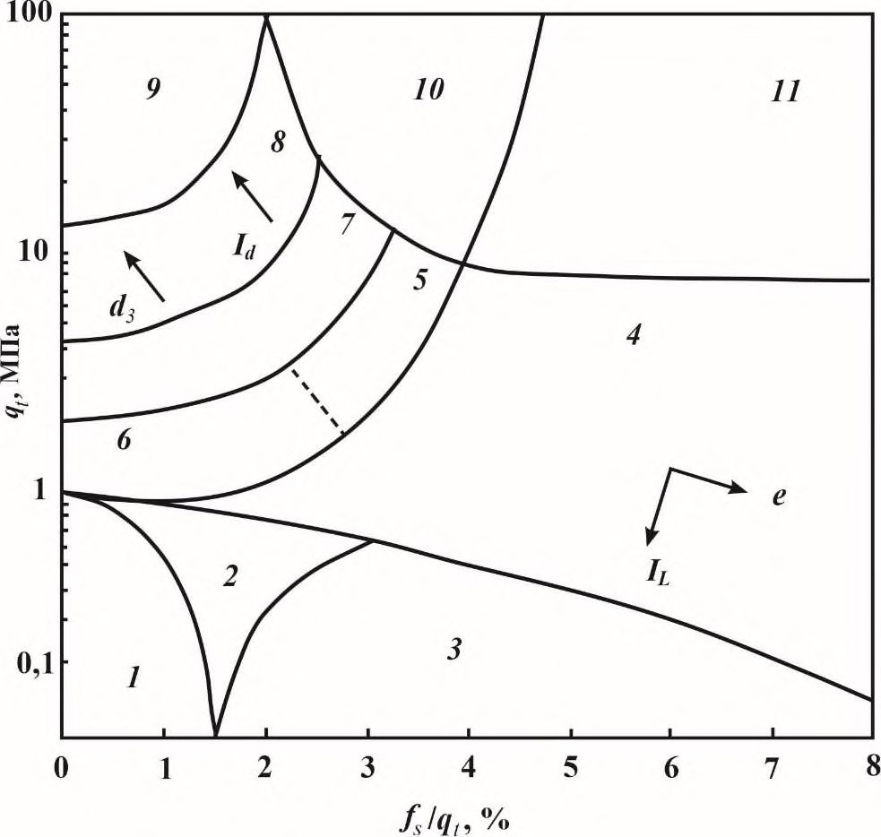
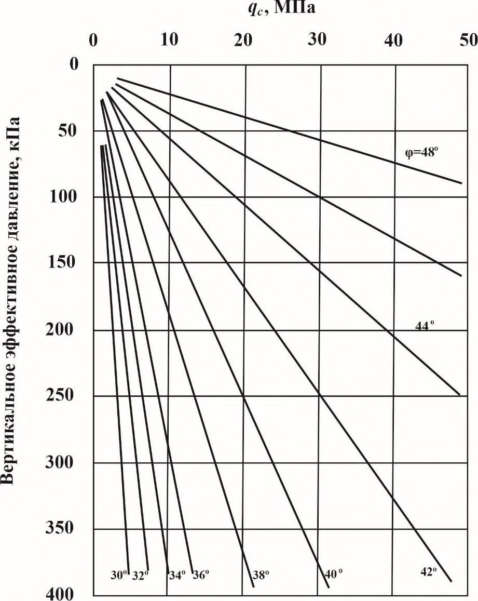

СП 504.1325800.2021 «Инженерные изыскания для строительства на континентальном ш»
О документе: разработчики, утверждение, регистрация, ключевые слова
СВОД ПРАВИЛ
СП 504.1325800.2021
Издание официальное
СП
504.1325800.2021
1 ИСПОЛНИТЕЛИ -Ассоциация «Инженерные изыскания в строительстве» -Общероссийское отраслевое объединение работодателей («АИИС»), Общество с ограниченной ответственностью «Институт геотехники и инженерных изысканий в строительстве» (ООО «ИГИИС») при участии: Федерального государственного бюджетного учреждения «Государственный океанографический институт имени Н.Н. Зубова» (ФГБУ «ГОИН»); Общества с ограниченной ответственностью «Морские Инновации» (ООО «Морские Инновации»); Акционерного общества «Росгеология» (АО «Росгеология»); Акционерного общества «Арктические Морские Инженерно-Геологические экспедиции» (АО «АМИГЭ»); Акционерного общества «Южное научнопроизводственное объединение по морским геологоразведочным работам» (АО «Южморгеология»); Общества с ограниченной ответственностью «Морская геодезия» (ООО «Морская геодезия»); Общества с ограниченной ответственностью «Грин Риф» (ООО «Грин Риф»); Общества с ограниченной ответственностью «Сплит» (ООО «Сплит»); Общества с ограниченной ответственностью «Центр морских исследований МГУ имени М.В. Ломоносова» (ООО «ЦМИ МГУ»); Общества с ограниченной ответственностью «Центр анализа сейсмических данных МГУ имени М.В. Ломоносова» (ООО «ЦАСД МГУ»); Общества с ограниченной ответственностью «Деко-геофизика» (ООО «Деко-геофизика»); Акционерного общества «Морская арктическая геологоразведочная экспедиция» (АО «МАГЭ»); Общества с ограниченной ответственностью «Газпром недра» (ООО «Газпром недра»); Общества с ограниченной ответственностью «Сварог» (ООО «Сварог»); Общества с ограниченной ответственностью «Фертоинг» (ООО «Фертоинг»); Федерального государственного бюджетного учреждения науки «Мурманский морской биологический институт Российской академии наук» (ФГБУН «ММБИ РАН»); Федерального государственного бюджетного образовательного учреждения высшего образования «Московский государственный университет имени М.В. Ломоносова» (ФГБОУ ВО «МГУ имени М.В. Ломоносова»), Геологический факультет; Федерального государственного бюджетного учреждения «Арктический и антарктический научно-исследовательский институт» (ФГБУ «ААНИИ»); Обособленного подразделения Акционерного общества «Центральный научно-исследовательский институт транспортного строительства «Научно-исследовательский центр «Морские берега» (ОП АО ЦНИИТС «НИЦ «Морские берега»), Общества с ограниченной ответственностью «ГЕОИНЖСЕРВИС» (ООО «ГЕОИНЖСЕРВИС»)
2 ВНЕСЕН Техническим комитетом по стандартизации ТК 465 «Строительство»
3 ПОДГОТОВЛЕН к утверждению Департаментом градостроительной деятельности и архитектуры Министерства строительства и жилищнокоммунального хозяйства Российской Федерации (Минстрой России)
4 УТВЕРЖДЕН приказом Министерства строительства и жилищнокоммунального хозяйства Российской Федерации от 19 июля 2021 г. № 481/пр и введен в действие с 20 января 2022 г.
5 ЗАРЕГИСТРИРОВАН Федеральным агентством по техническому регулированию и метрологии (Росстандарт)
В случае пересмотра (замены) или отмены настоящего свода правил соответствующее уведомление будет опубликовано в установленном порядке. Соответствующая информация, уведомление и тексты размещаются также в информационной системе общего пользования - на официальном сайте разработчика (Минстрой России) в сети Интернет
© Минстрой России, 2021
Настоящий нормативный документ не может быть полностью или частично воспроизведен, тиражирован и распространен в качестве официального издания на территории Российской Федерации без разрешения Минстроя России
Дата введения - 2022-01-20
УДК 624.131:006.354
ОКС.91.040.01
Ключевые слова: инженерные изыскания для строительства, континентальный шельф, гидрографические работы, геофизические исследования, проходка инженерно-геологических скважин, пробоотбор, лабораторные исследования грунтов, прогноз изменений инженерно-геологических условий, гидрометеорологический режим моря, метеорологические условия, гидрологические условия, гидрологические наблюдения, расчетные характеристики гидрометеорологического режима, литодинамические процессы, инженерно-экологические изыскания, воздействия на окружающую среду, исследования ихтиофауны, териологические исследования, подводный ландшафт
ИСПОЛНИТЕЛЬ
Ассоциация «Инженерные изыскания в строительстве» -
Общероссийское отраслевое объединение работодателей («АИИС»)
Руководитель разработки
Президент Координационного
совета
\_\_\_\_\_\_\_\_\_\_\_\_\_\_\_
М.И. Богданов
Ответственный исполнитель
Заместитель исполнительного директора
\_\_\_\_\_\_\_\_\_\_\_\_\_\_\_
Е.В. Леденева
Введение
6 ВВЕДЕН ВПЕРВЫЕ
Настоящий свод правил разработан в целях обеспечения соблюдения требований Федерального закона от 30 декабря 2009 г. № 384 -ФЗ «Технический регламент о безопасности зданий и сооружений», с учетом требований федеральных законов от 27 декабря 2002 г. № 184 -ФЗ «О техническом регулировании», от 29 декабря 2004 г. № 190 -ФЗ «Градостроительный кодекс Российской Федерации».
Настоящий свод правил разработан в развитие положений и требований СП 47.13330.2016 «СНиП 11-02-96 Инженерные изыскания для строительства. Основные положения», СП 317.1325800.2017 «Инженерно-геодезические изыскания для строительства. Общие правила производства работ», СП 446.1325800.2019 «Инженерно-геологические изыскания для строительства. Общие правила производства работ», СП 482.1325800.2020 «Инженерногидрометеорологические изыскания для строительства. Общие правила производства работ», СП 502.1325800.2021 «Инженерно-экологические изыскания для строительства. Общие правила производства работ».
Свод правил подготовлен «АИИС» (руководитель работы - канд. геол.минерал. наук М.И. Богданов , ответственный исполнитель Е.В. Леденева, исполнитель И.Л. Кривенцова ); ООО «ИГИИС» (руководитель работы Г.Р. Болгова ; исполнители С.А. Гурова , Г.В. Мисник, Д.А. Будаков, канд. геол.минерал. наук А.Л. Стром, нормоконтроль В.И. Евграфова , М.А. Аббасова ); руководители разработки разделов: по инженерно-геодезическим изысканиям А.Е. Виноградов ; инженерно-геологическим изысканиям - канд. геол.-минерал. наук А.С. Локтев , инженерно-геофизическим исследованиям - канд. техн. наук М.Ю. Токарев, инженерно-гидрометеорологическим изысканиям - канд. физ.мат. наук О.А. Вербицкая , инженерно-экологическим изысканиям -Н.В. Шабалин) ; при участии: ФГБУ «ГОИН» (канд. геогр. наук А.С. Цвецинский , В.В. Архипов , В.В. Фомин ); ООО «Морские Инновации» (канд. техн. наук Л.Р. Мерклин , канд. эконом. наук А.Ю. Плешков ); АО «Росгеология»
СП
504.1325800.2021
( Г.С. Чурсина ); АО «АМИГЭ» ( С.Н. Куликов, А.С. Сорокин , Е.А. Соколовский ); АО «Южморгеология» (канд. геол.-минерал. наук Е.А. Глазырин , И.А Севастова ); ООО «Морская геодезия» ( П.Г. Корчагин , Н.А. Скрылёв , Б.Н. Пегушин ); ООО «Грин Риф» ( П.С. Билый , Е.С. Сухоногова ); ООО «Сплит» ( Е.А. Бирюков , И.С. Пронин , А.К. Потемка ); ООО «ЦМИ МГУ» ( С.В. Дорошенко , В.О. Калениченко , канд. биол. наук В.В. Козловский , О.С. Адищева , О.В. Котова , Н.Р. Крючков , С.А. Кириллов ); ООО «ЦАСД МГУ» ( Я.Е. Терехина ); ООО «Деко-геофизика» (канд. геол.-минерал. наук С.Г. Миронюк ); АО «МАГЭ» ( А.П. Демонов , Ф.Е. Жилин , Д.И. Черников , Д.А. Науменко , Д.В. Козыкин , В.Г. Чешев ); ООО «Газпром недра» ( А.Н. Трифонов , Н.А. Рыбин ); ООО «Сварог» ( С.К. Шельтинг ); ООО «Фертоинг» ( А.А. Дахин, канд. геол.-минерал. наук Д.А. Лаломов , канд. техн. наук А.С. Камнев ); ФГБУН «ММБИ РАН» (д-р геогр. наук, канд. техн. наук А.А. Шавыкин ); ФГБОУ ВО «МГУ имени М.В. Ломоносова», Геологический факультет (д-р физ.-мат. наук М.Л. Владов ); ФГБУ «ААНИИ» ( А.В. Нестеров , канд. физ.-мат. наук О.М. Андреев , канд. географ. наук И.В. Бузин , Р.А. Виноградов , К.Г. Смирнов ); ОП АО «ЦНИИТС «НИЦ «Морские берега» (канд. техн. наук Г.В. Тлявлина , канд. техн. наук Н.А. Ярославцев , канд. геогр.. наук В.А. Петров ); ООО «ГЕОИНЖСЕРВИС» (канд. геол.-минерал. наук Н.Г. Волков , канд. геол.-минерал. наук И.С. Соколов ), А.И. Фриденберга .
1Область применения
Настоящий свод правил устанавливает общие требования при выполнении инженерных изысканий (инженерно-геодезических, инженерно-геологических, инженерно-гидрометеорологических и инженерно-экологических) на континентальном шельфе Российской Федерации для подготовки документов территориального планирования, документации по планировке территории и для выбора площадок (трасс) строительства, при подготовке проектной документации объектов капитального строительства, строительстве, эксплуатации и реконструкции зданий и сооружений.
Настоящий свод правил может быть применен при выполнении инженерных изысканий во внутренних морских водах, в территориальном море Российской Федерации и на морском побережье.
2Нормативные ссылки
В настоящем своде правил использованы нормативные ссылки на следующие документы:
ГОСТ 5180-2015 Грунты. Методы лабораторного определения физических характеристик
ГОСТ 12071-2014 Грунты. Отбор, упаковка, транспортирование и хранение образцов
ИНЖЕНЕРНЫЕ ИЗЫСКАНИЯ ДЛЯ СТРОИТЕЛЬСТВА НА КОНТИНЕНТАЛЬНОМ ШЕЛЬФЕ Общие требования
Engineering surveys for construction on the continental shelf. General requirements
ГОСТ 12248.1-2020 Грунты. Определение характеристик прочности методом одноплоскостного среза
ГОСТ 12248.2-2020 Грунты. Определение характеристик прочности методом одноосного сжатия
ГОСТ 12248.3-2020 Грунты. Определение характеристик прочности и деформируемости методом трехосного сжатия
ГОСТ 12248.4-2020 Грунты. Определение характеристик деформируемости методом компрессионного сжатия
ГОСТ 12536-2014 Грунты. Методы лабораторного определения гранулометрического (зернового) и микроагрегатного состава
ГОСТ 19179-73 Гидрология суши. Термины и определения
ГОСТ 19912-2012 Грунты. Методы полевых испытаний статическим и динамическим зондированием
ГОСТ 20276.5-2020 Грунты. Метод вращательного среза
ГОСТ 20276.6-2020 Грунты. Метод испытания лопастным прессиометром
ГОСТ 20522-2012 Грунты. Методы статистической обработки результатов испытаний
ГОСТ 21153.2-84 Породы горные. Методы определения предела прочности при одноосном сжатии
ГОСТ 21667-76 Картография. Термины и определения
ГОСТ 22268-76 Геодезия. Термины и определения
ГОСТ 22733-2016 Грунты. Метод лабораторного определения максимальной плотности
ГОСТ 23740-2016 Грунты. Методы определения содержания органических веществ
ГОСТ 25100-2020 Грунты. Классификация
ГОСТ 25584-2016 Грунты. Методы лабораторного определения коэффициента фильтрации
ГОСТ 26423-85 Почвы. Методы определения удельной электрической проводимости, рН и плотного остатка водной вытяжки
ГОСТ 26424-85 Почвы. Метод определения ионов карбоната и бикарбоната в водной вытяжке
ГОСТ 26425-85 Почвы. Методы определения иона хлорида в водной вытяжке
ГОСТ 26426-85 Почвы. Методы определения иона сульфата в водной вытяжке
ГОСТ 26427-85 Почвы. Метод определения натрия и калия в водной вытяжке
ГОСТ 26428-85 Почвы. Методы определения кальция и магния в водной вытяжке
ГОСТ 28441-99 Картография цифровая. Термины и определения
ГОСТ 34467-2018 Грунты. Метод лабораторного определения содержания карбонатов
ГОСТ Р 21.101-2020 Система проектной документации для строительства. Основные требования к проектной и рабочей документации
ГОСТ Р 22.0.03-2020 Безопасность в чрезвычайных ситуациях. Природные чрезвычайные ситуации. Термины и определения
ГОСТ Р 53241-2008 Геологоразведка морская. Требования к охране морской среды при разведке и освоении нефтегазовых месторождений континентального шельфа, территориального моря и прибрежной зоны
ГОСТ Р 54483-2011 (ИСО 19900:2002) Нефтяная и газовая промышленность. Платформы морские для нефтегазодобычи. Общие требования
ГОСТ Р 55311-2012 Нефтяная и газовая промышленность. Сооружения нефтегазопромысловые морские. Термины и определения
ГОСТ Р 56353-2015 Грунты. Методы лабораторного определения динамических свойств дисперсных грунтов
ГОСТ Р 57148-2016 (ИСО 19901-1:2015) Нефтяная и газовая промышленность. Сооружения нефтегазопромысловые морские. Проектирование и эксплуатация с учетом гидрометеорологических условий
ГОСТ Р 57216-2016 Радиационный контроль. Представление результатов измерений
ГОСТ Р 58112-2018 Нефтяная и газовая промышленность. Арктические операции. Управление ледовой обстановкой. Сбор гидрометеорологических данных
ГОСТ Р 58114-2018 Нефтяная и газовая промышленность. Арктические операции. Управление ледовой обстановкой. Мониторинг ледовой обстановки
ГОСТ Р 58270-2018 Грунты. Метод испытаний расклинивающим дилатометром
ГОСТ Р 58283-2018 Нефтяная и газовая промышленность. Арктические операции. Учет ледовых нагрузок при проектировании морских платформ
ГОСТ Р ИСО 9169-2006 Качество воздуха. Определение характеристик методик выполнения измерений
ГОСТ Р ИСО 22476-1-2017 Геотехнические исследования и испытания. Испытания полевые. Часть 1. Статическое и пьезостатическое зондирование электрическим зондом
ГОСТ Р ИСО 22476-4-2017 Геотехнические исследования и испытания. Испытания полевые. Часть 4. Испытание прессиометром Менарда
СП 22.13330.2016 «СНиП 2.02.01-83* Основания зданий и сооружений» (с изменениями № 1, № 2, № 3)
СП 23.13330.2018 «СНиП 2.02.01-85* Основания гидротехнических сооружений» (с изменением № 1)
СП 28.13330.2017 «СНиП 2.03.11-85 Защита строительных конструкций от коррозии» (с изменениями № 1, № 2)
СП 47.13330.2016 «СНиП 11-02-96 Инженерные изыскания для строительства. Основные положения» (с изменением № 1)
СП 126.13330.2017 «СНиП 3.01.03-84 Геодезические работы в строительстве»
СП 131.13330.2020 «СНиП 23-01-99* Строительная климатология»
СП 292.1325800.2017 Здания и сооружения в цунамиопасных районах. Правила проектирования
СП 317.1325800.2017 Инженерно-геодезические изыскания для строительства. Общие правила производства работ
СП 358.1325800.2017 Сооружения гидротехнические. Правила проектирования и строительства в сейсмических районах
СП 438.1325800.2019 Инженерные изыскания при планировке территорий. Общие требования
СП 446.1325800.2019 Инженерно-геологические изыскания для строительства. Общие правила производства работ
СП 482.1325800.2020 Инженерно-гидрометеорологические изыскания для строительства. Общие правила производства работ
СП 493.1325800.2020 Инженерные изыскания для строительства в районах распространения многолетнемерзлых грунтов. Общие требования
СП 502.1325800.2021 Инженерно-экологические изыскания для строительства. Общие правила производства работ
СанПиН 1.2.3685-21 Гигиенические нормативы и требования к обеспечению безопасности и (или) безвредности для человека факторов среды обитания
СанПиН 2.1.3684-21 Санитарно-эпидемиологические требования к содержанию территорий городских и сельских поселений, к водным объектам, питьевой воде и питьевому водоснабжению, атмосферному воздуху, почвам, жилым помещениям, эксплуатации производственных, общественных помещений, организации и проведению санитарно-противоэпидемических (профилактических) мероприятий
СанПиН 2.6.1.2523-09 Нормы радиационной безопасности (НРБ-99/2009)
СП 2.6.1.2612-10 Основные санитарные правила обеспечения радиационной безопасности (ОСПОРБ-99/2010)
Примечание - При пользовании настоящим сводом правил целесообразно проверить действие ссылочных документов в информационной системе общего пользования
- на официальном сайте федерального органа исполнительной власти в сфере стандартизации в сети Интернет или по ежегодному информационному указателю «Национальные стандарты», который опубликован по состоянию на 1 января текущего года, и по выпускам ежемесячного информационного указателя «Национальные стандарты» за текущий год. Если заменен ссылочный документ, на который дана недатированная ссылка, то рекомендуется использовать действующую версию этого документа с учетом всех внесенных в данную версию изменений. Если заменен ссылочный документ, на который дана датированная ссылка, то рекомендуется использовать версию этого документа с указанным выше годом утверждения (принятия). Если после утверждения настоящего свода правил в ссылочный документ, на который дана датированная ссылка, внесено изменение, затрагивающее положение, на которое дана ссылка, то это положение рекомендуется применять без учета данного изменения. Если ссылочный документ отменен без замены, то положение, в котором дана ссылка на него, рекомендуется применять в части, не затрагивающей эту ссылку. Сведения о действии сводов правил целесообразно проверить в Федеральном информационном фонде стандартов.
3Термины, определения и сокращения
В настоящем своде правил применены термины по ГОСТ Р 22.0.03, ГОСТ 19179, ГОСТ 21667, ГОСТ 22268, ГОСТ 25100, ГОСТ 28441, ГОСТ Р 55311, ГОСТ Р 54483 , ГОСТ Р 56353, ГОСТ Р 57148, ГОСТ Р 58112, ГОСТ Р 58114, ГОСТ Р 58283, СП 47.13330, СП 317.1325800, СП 446.1325800, СП 482.1325800, СП 502.1325800, а также следующие термины с соответствующими определениями:
- 3.1.1 айсберг
- Массивный отколовшийся от ледника кусок льда различной формы, выступающий над уровнем моря более чем на 5 м, который может быть на плаву или сидящим на мели. Примечание - Айсберги по своему внешнему виду могут подразделяться на столообразные, куполообразные, наклонные, с остроконечными вершинами, окатанные или пирамидальные.Источник: ГОСТ Р 58113-2018, пункт 3.1
- 3.1.2 акватория
- Участок водной поверхности, ограниченный естественными, искусственными или условными границами.
- 3.1.3 активное тектоническое нарушение (активный разлом)
- Тектоническое нарушение с признаками постоянных или периодических перемещений бортов разлома в позднем неоплейстоцене -голоцене (за последние 100 000 лет), величина (скорость) которых такова, что она представляет опасность для зданий и сооружений и требует специальных конструктивных и (или) компоновочных мероприятий для обеспечения безопасности зданий и сооружений.
- 3.1.4 береговая линия
- Линия, по которой водная поверхность пересекается с сушей.Источник: ГОСТ 23634-83, пункт 47
- 3.1.5 внутренние морские воды Российской Федерации (внутренние морские воды)
- Воды, расположенные в сторону берега от исходных линий, от которых отмеряется ширина территориального моря Российской Федерации.Источник: 1, статья 1, часть 1
- 3.1.6 газовые сипы
- Активные естественные выходы метана в виде отдельных пузырей из донных отложений.
- 3.1.7 галс
- Путь судна, на котором оно выдерживает заданные курс и скорость.
- 3.1.8 дно моря
- Часть поверхности земной коры, находящаяся в пределах моря ниже его уровня.Источник: ГОСТ 23634-83, пункт 48
- 3.1.9консолидированный слой
- Монолитная часть тороса, образовавшаяся в результате смерзания ледяных блоков и располагающаяся в районе ватерлинии (большей частью - в киле тороса).Источник: ГОСТ Р 58114-2018, пункт 3.24
- 3.1.10 континентальный шельф Российской Федерации (континентальный шельф)
- Морское дно и недра подводных районов, находящиеся за пределами территориального моря Российской Федерации на всем протяжении естественного продолжения ее сухопутной территории до внешней границы подводной окраины материка.Источник: 2, статья 1
- 3.1.11 литодинамические процессы
- Процессы изменения рельефа и (или) литологического состава отложений в результате размыва, переноса и отложения твердых продуктов денудации на морском дне и побережье.
- 3.1.12 место обитания (местообитание)
- Тип местности или место естественного обитания того или иного организма или популяции.Источник: 3, статья 2
- 3.1.13 морское побережье
- Участок суши, примыкающий к морю, в пределах которого сохранились следы современного морского воздействия (затопления во время штормовых нагонов, волновые заплески, ледовые воздействия и пр.).
- 3.1.14 морфометрические характеристики льда
- Характеристики геометрических размеров и формы рельефа верхней и нижней поверхностей ледяного покрова.
- 3.1.15 мутьевой поток (суспензионный поток)
- Гравитационное придонное течение в морях и океанах, насыщенное взвесью донных отложений и характеризуемое повышенной плотностью.
- 3.1.16 осадка льда
- Отметка какой-либо точки нижней поверхности ледяного покрова относительно уровня моря.
- 3.1.17 площадное обследование
- Выполнение съемки рельефа дна путем проложения взаимно перекрывающихся полос съемки, обеспечивающих получение глубин с заданной точностью в любой точке обследуемой акватории.
- 3.1.18 подводный ландшафт
- Территориальный комплекс, однородный по происхождению, геологическому строению и рельефу, гидрохимическим и гидрометеорологическим условиям, сообществам живых организмов.
- 3.1.19припай
- Морской лед, который образуется и остается неподвижным вдоль побережья, где он прикреплен к берегу, к ледяной стене, к ледяному барьеру, между отмелями или севшими на отмели айсбергами и стамухами.Источник: ГОСТ Р 58113-2018, пункт 3.46
- 3.1.20 промерный (съемочный) галс
- Отрезок линии пути судна, который оно проходит с заданными курсом и скоростью в процессе съемки рельефа дна.
- 3.1.21 расчетные характеристики гидрометеорологического режима
- Числовые значения параметров гидрометеорологического режима, используемые в расчетах при проектировании, независимо от методов их определения (расчетные характеристики подразделяются на оперативные и экстремальные). Примечания 1 Под оперативными расчетными характеристиками гидрометеорологического режима понимают числовые значения параметров гидрометеорологического режима, определяющие условия, в которых здания и сооружения будут находиться и обслуживаться за все время своего существования. 2 Под экстремальными расчетными характеристиками гидрометеорологического режима понимают числовые значения параметров гидрометеорологического режима, определяющие условия, которые здания и сооружения должны выдерживать без потери функциональной способности или без аварий.
- 3.1.22
- ровный лед: Морской лед, не подвергшийся деформации.Источник: ГОСТ Р 58113-2018, пункт 3.49
- 3.1.23стамуха
- Торосистое ледяное образование, севшее на мель. [ГОСТ Р 58113-2018, пункт 3.55]
- 3.1.24 статистический анализ массива глубин
- Рассчитываемые значения средней глубины, стандартного отклонения, минимальной и максимальной глубин на заданной площади.
- 3.1.25суммарное течение
- Течение, обусловленное совокупным влиянием всех действующих сил.Источник: ГОСТ Р 58113-2018, пункт 3.57
- 3.1.26территориальное море Российской Федерации (территориальное море)
- Примыкающий к сухопутной территории или к внутренним морским водам морской пояс шириной 12 морских миль, отмеряемый от исходных линий, указанных в [1, статья 4].Источник: 1, статья 2, часть 1
- 3.1.27торос
- Холмообразное нагромождение взломанного льда, образовавшееся в результате сжатия.Источник: ГОСТ Р 58113-2018, пункт 3.59
- 3.1.28торосистость льда
- Степень покрытия поверхности льда торосами всех видов, выраженная в десятых долях.Источник: ГОСТ Р 58283-2018, пункт 3.31
- 3.1.29 турбидиты
- Отложения мутьевых потоков на дне морей и океанов, представленные осадочными грунтами, обладающими ритмичным строением (градационной слоистостью): в нижней части каждого ритма залегают крупные фракции, постепенно переходящие вверх к тонким фракциям грунта. Примечание -Отложения мутьевых потоков, аккумуляция которых происходит на наибольшем удалении от источника образования потока, называют дистальными турбидитами. В настоящем своде правил применены следующие сокращения: АБС - автономная буйковая станция (возможно с донной постановкой); АВПД - аномально высокое пластовое давление; АНПА - автономный необитаемый подводный аппарат; БПЛА - беспилотный летательный аппарат; ВТУ - наивысший теоретический уровень; ГЛБО - гидролокатор бокового обзора; ГНСС - глобальная навигационная спутниковая система; ДЗЗ дистанционное зондирование Земли; ИГЭ - инженерно-геологический элемент; МЛЭ - многолучевой эхолот; ММГ - многолетнемерзлые грунты; МНГС - морские нефтегазопромысловые сооружения; НД - нормативные документы; НТУ - наинизший теоретический уровень; ООПТ - особо охраняемая природная территория; ПБУ - плавучая буровая установка; ППБУ - полупогружная плавучая буровая установка; СИ - средство измерений; СМР - сейсмическое микрорайонирование; СПБУ - самоподъемная плавучая буровая установка; СП 504.1325800.2021 ТНПА телеуправляемый необитаемый подводный аппарат; ЦМР цифровая модель рельефа .
4Общие требования
- для строительства портов, портовой инфраструктуры (включая морские каналы, защитные сооружения, платформы для навигационного и мониторингового оборудования), причалов различного типа, берегоукрепления;
- разведки и обустройства морских месторождений нефти и газа: постановки ПБУ, СПБУ, ППБУ и буровых судов при строительстве морских сооружений (эксплуатационных буровых платформ различных типов -гравитационных, свайных, гравитационно-свайных, на натяжных опорах, опорных основаниях для скважин с подводным заканчиванием), размещения оборудования на дне моря;
- прокладки морских трубопроводов (в том числе внутрипромысловых), кабелей (в том числе оптико-волоконных) линий управления и связи;
- строительства приливных и ветровых электростанций;
- строительства подводных тоннелей;
- создания искусственных земельных участков;
- строительства иных сооружений на шельфе.
- скрытость объекта изысканий (морского дна) водной толщей, что требует применения специальных методов и технических средств (в том числе дистанционных методов и средств визуализации), судового обеспечения;
- природные условия производства работ (ограниченный период выполнения работ, который определяется гидрометеорологическими условиями - штормы, ледовые явления, видимость, обледенение и пр.);
- развитие опасных геологических и гидрометеорологических процессов и явлений;
- высокая стоимость выполнения инженерных изысканий на морском дне и акватории по сравнению с сушей.
При выполнении инженерных изысканий на шельфе в исключительной экономической зоне, акватория которой разграничена между несколькими государствами, дополнительно следует руководствоваться НД, установленными международными конвенциями, регламентирующими морскую деятельность.
- сведения о местоположении и размерах участка (ширине притрассовой полосы линейных сооружений ) выполнения инженерных изысканий с указанием координат площадки (трассы) ;
- требования о необходимости обследования морского дна с помощью водолазов и ( или ) подводных аппаратов (ТНПА , АНПА);
- требования к точности геофизических методов;
- требования к глубине исследований грунтового массива;
- требования о необходимости выполнения дополнительных исследований .
- сведения о ближайших населенных пунктах, путях сообщения и средствах связи ;
- требования к условиям выполнения работ (высота волны, скорость ветра, ледовые условия, экологические ограничения и пр.);
- продолжительность наблюдений за гидрометеорологическим параметрами;
- характеристики судов и иных используемых при выполнении инженерных изысканий плавсредств;
- перечень и режим работы персонала .
Примечание - Допускается разработка программ выполнения отдельных видов исследований, а также по промышленной безопасности, охране труда и окружающей среды, чрезвычайным ситуациям и пр.
Программа может быть уточнена в процессе выполнения работ в порядке, установленном СП 47.13330.2016 (пункты 4.22 и 4.23).
- при бурении инженерно -геологических скважин необходимо извлекать обсадную колонну;
- при проведении сейсмоакустических и сейсморазведочных исследований параметры взрывных источников используемой аппаратуры должны соответствовать требованиям органов природопользования и охраны окружающей среды;
- при пилотировании авиационных средств должны соблюдаться установленные природоохранными органами высота и расстояние от лежбищ морских животных, замеченных в море китов, гнездовий птиц и т. п.
Сроки проведения работ должны быть согласованы с уполномоченными государственными органами в порядке и случаях, установленных законодательством [ 4], [5].
Порядок выдачи необходимых разрешений на выполнение отдельных работ на шельфе от уполномоченных государственных органов приведен в [6, статья 11, часть 3]-[8].
5Инженерно-геодезические изыскания
5.1Общие требования к выполнению инженерно-геодезических изысканий
СП
504.1325800.2021 геодезических изысканий должно содержать:
- сведения, предусмотренные СП 317.1325800.2017 (пункт 4.4);
- требования к выполнению инженерно-гидрографических работ -масштабу, отображению рельефа (высота сечения рельефа, горизонтали или изобаты), ЦМР, параметрам обследуемых подводных объектов (вид, размер, свойства).
- обоснование выбранных способов и масштабов (подробности) съемки рельефа дна по отдельным трассам (участкам трасс) и площадкам, высот сечения рельефа;
- технические характеристики выбранного для производства изысканий оборудования и мероприятий по их подготовке к работе;
- технические характеристики судов (плавсредств) для выполнения работ.
СП
504.1325800.2021 на шельфе СИ, наряду с государственным метрологическим контролем, подлежат полевым поверкам и исследованиям согласно СП 317.1325800.2017 (пункт 4.12). Оборудование, не относящееся к СИ, подлежит полевым проверкам и испытаниям в соответствии с рекомендациями производителя и методиками, изложенными в НД.
(геологических выработок, точек гидрологических станций, геофизических исследований и др.) не должна превышать ± 1,5 мм в масштабе плана. Средние квадратические погрешности определения высот точек не должны превышать значений, указанных в 5.1.24.
- съемка рельефа дна;
- съемка и обследование подводных объектов;
- съемка надводных сооружений;
- планово-высотное обеспечение работ.
5.1.16.1 Площадное обследование выполняют:
- автоматизированными гидрографическими комплексами на базе МЛЭ;
- автоматизированными гидрографическими комплексами на базе многоканальных эхолотов;
- авиационными лазерными батиметрическими системами.
Для получения дополнительной информации о рельефе дна и подводных объектах используют подводную фото- и видеосъемку с борта ТНПА или АНПА, а также данные аэро- и космических съемок.
5.1.16.2 Автоматизированные гидрографические комплексы могут быть смонтированы на борту судов (плавсредств), телеуправляемых и автономных надводных аппаратов, ТНПА (в том числе буксируемых), АНПА. В состав автоматизированного гидрографического комплекса для выполнения площадного обследования входит следующее оборудование:
- МЛЭ;
- оборудование для определения параметров качки, курса, планововысотного положения и временнóй синхронизации;
- программное обеспечение, рассчитывающее в масштабе реального времени пространственное расположение всех датчиков, антенн комплекса и акустических посылок эхолота;
- измеритель профиля скорости звука в воде.
При работе с ТНПА и АНПА дополнительно применяют гидроакустические системы подводного позиционирования, доплеровские лаги и инерциальные навигационные системы.
Приборы и датчики, применяемые для съемки рельефа дна, должны обеспечивать точность в соответствии с 5.1.24 по всей площади обследования.
- 5.1.16.3 Перед выполнением площадного обследования должны быть выполнены:
- поверки и исследования применяемых оборудования и СИ;
- определение параметров взаимного расположения (в плане и по высоте) датчиков и антенн автоматизированных гидрографических комплексов;
- испытания для определения поправки за проседание (изменение в осадке) судна (плавсредства) в процессе движения на разных скоростях;
- калибровка автоматизированного гидрографического комплекса на основе МЛЭ;
- контрольные испытания на соответствие требованиям НД к точности съемки для соответствующих глубин в районе работ.
5.1.16.4 Промер глубин выполняют:
- автоматизированными гидрографическими комплексами на базе однолучевых эхолотов;
- ручным лотом;
- наметкой.
- 5.1.16.5 Промер глубин с инструментальной оценкой рельефа дна выполняют автоматизированными гидрографическими комплексами на базе однолучевых эхолотов и ГЛБО.
СП
504.1325800.2021
- геофизических методов;
- водолазного обследования;
- ТНПА и (или) АНПА;
- гидрографического траления, в том числе гидроакустическими тралами;
- индукционного поиска инженерных коммуникаций.
5.1.17.1 Геофизические методы, применяемые при съемке и обследовании подводных объектов:
- гидролокационное обследование;
- морская магнитная съемка;
- непрерывное сейсмоакустическое профилирование (6.1.8).
5.1.17.2 Гидролокационное обследование выполняется гидролокаторами бокового (кругового) обзора с борта судов (плавсредств). Междугалсовое расстояние при гидролокационном обследовании выбирают с учетом получения требуемой разрешающей способности в полосе съемки и перекрытия малоинформативных зон гидролокатора.
Морскую магнитную съемку выполняют магнитометрами, градиентометрами, подводными трассоискателями с борта судов (плавсредств). При выполнении морской магнитной съемки междугалсовое расстояние выбирают исходя из требований задания и задач работ.
Гидролокационное обследование и морская магнитная съемка могут выполняться с применением ТНПА и (или) АНПА.
Позиционирование буксируемых устройств при проведении гидролокационного обследования, морской магнитной съемки может быть выполнено как с использованием программного обеспечения, так и гидроакустическими системами подводного позиционирования. При работе с применением ТНПА и (или) АНПА также применяют гидроакустические системы подводного позиционирования, доплеровские лаги и инерциальные навигационные системы.
5.1.17.3 Водолазное обследование и обследование с применением ТНПА и (или) АНПА выполняют при невозможности однозначного дешифрирования выявленных подводных объектов, форм рельефа дна, инженерных сооружений и коммуникаций. Выполнение данных работ согласовывают с заказчиком.
Водолазное обследование может быть дополнено подводным фотографированием и видеосъемкой. Обследование с применением ТНПА и (или) АНПА сопровождается видеосъемкой.
5.1.17.4 Гидрографическое траление, в том числе гидроакустическими тралами, выполняется с борта судов (плавсредств) с перекрытием смежных полос обследования не менее 2 м.
5.1.17.5 Индукционный поиск инженерных коммуникаций осуществляется для установления положения осей инженерных коммуникаций с применением подводных трассоискателей (с бортов судов и других плавсредств или с воды водолазами).
Наблюдения над колебаниями уровня моря также допускается проводить с использованием высокоточных спутниковых дифференциальных сервисов определения координат и высот.
Применяемые методы и технологии должны обеспечивать необходимую точность съемки рельефа дна в соответствии с 5.1.24.
5.1.19.1 Состав полевых работ для высотного обеспечения съемки рельефа дна предусматривает:
СП
504.1325800.2021
- устройство временных уровенных постов (в том числе автоматических) и наблюдения за уровнем моря (при необходимости);
- установку постоянных и временных реперов.
5.1.19.2 Уровенные посты обычно устанавливаются реечного или свайного типа. На уровенных постах должны проводиться наблюдения в диапазонах возможных амплитуд колебаний уровней. На каждом посту устанавливается репер, включенный в общую сеть высотного обоснования, с которым все устройства поста связываются двойным нивелированием.
5.1.19.3 Число и расположение уровенных постов должны обеспечить определение положения уровня воды с погрешностью не более половины точности измерения глубин.
Погрешность передачи нуля глубин с постоянного уровенного поста на временный не должна превышать ± 5 см. На всех уровенных постах, не имеющих самописцев, наблюдения за колебаниями уровня моря следует проводить:
- на морях без приливов - через каждые 4 ч;
- во время сгонов и нагонов, если изменения уровня менее 10 см за 1 ч через каждый час, если изменение уровня более 10 см за 1 ч - каждые 30 мин;
- на морях с приливами, где величина прилива составляет менее 1 м, наблюдения следует проводить ежечасно;
- на приливных морях, если величина прилива составляет 1 м и более, наблюдения в течение 30 мин до и после каждого момента полных и малых вод проводят каждые 10 мин.
Отсчеты уровня следует проводить с точностью ± 2 см; отсчеты моментов времени - с точностью ± 3 мин.
При оборудовании уровенных постов рекомендуется использовать долговременные не подверженные осадке портовые и гидротехнические сооружения, а на открытом побережье - сваю, прочно забитую в грунт и возвышающуюся над уровнем воды на 60-80 см.
Нуль укрепленной рейки должен быть ниже возможных минимальных уровней воды, а водомерная рейка закрыта от волнения и доступна для четкого снятия отсчетов.
В районе уровенного поста, вне зоны разрушения, закладывают стенной или грунтовый репер, отметка которого определяется нивелированием класса IV от ближайших реперов государственной нивелирной сети или городских опорных высотных пунктов. Отметка нуля водомерной рейки контролируется не реже одного раза в месяц.
Временные уровенные посты могут быть размещены в открытом море с применением АБС. Привязка таких постов к Балтийской системе высот осуществляется по серии одновременных контрольных наблюдений на временном и постоянном постах. Допускается привязка к условной системе высот при обосновании в программе изысканий.
СП
504.1325800.2021
СП
504.1325800.2021
Контрольные галсы располагают нормально к направлению галсов основного покрытия не реже чем через 10-15 см в масштабе плана.
В процессе съемки следует проводить контрольные сличения глубин, измеренных одним эхолотом и исправленных всеми поправками, с глубинами, измеренными другим эхолотом или ручным лотом (инструментальный контроль).
- изменение вертикального распределения скорости звука в толще воды;
- углубление вибратора (антенны) эхолота;
- проседание судна (изменение осадки);
- наклон морского дна;
- колебания уровня моря.
Применимость тех или иных поправок и способов их определения обусловливается используемым оборудованием, способом выполнения съемки, рельефом дна и условиями окружающей среды.
Измеренные глубины, превышающие 200 м, поправками на колебания уровня моря не исправляются.
- данные по ближайшим постоянным и временным уровенным постам, результаты уровенных наблюдений;
- формуляр уровенного поста (если пост создан ранее);
- сведения о ранее выполненных гидрографических и инженерногидрографических работах на участке инженерных изысканий (масштабы, проекция, год составления и издания навигационных морских и других карт и планов и др.);
- результаты контроля качества съемки -результаты калибровок и испытаний комплексов, статистический анализ массива глубин площадного обследования, оценка сходимости глубин и вычисление средней квадратической погрешности измерения глубин, результаты инструментального контроля и контрольных сличений, сравнение с материалами ранее выполненных гидрографических и инженерно-гидрографических работ;
- каталоги объектов на дне, обнаруженных по результатам инженерногидрографических работ;
- схемы взаимного расположения датчиков автоматизированных гидрографических комплексов на судах (плавсредствах);
- схемы подключения оборудования и датчиков;
- графики измеренных скоростей звука в воде;
- планы (схемы) сетей подводных сооружений и инженерных коммуникаций с их техническими характеристиками, согласованные с собственником (эксплуатирующей организацией).
5.2Инженерно-геодезические изыскания для подготовки документов территориального планирования, документации по планировке территории и выбора площадок (трасс) строительства
- сбор материалов инженерных изысканий прошлых лет и других фондовых (архивных) материалов и данных (топографических, геодезических, картографических, аэрофотосъемочных, ДЗЗ), оценку возможности их использования;
- работы по расчетно-геодезическому и картографическому обеспечению изысканий (пересчет координат из одной системы координат в другую; оцифровка графических материалов; дешифрирование, создание обзорных инженерных цифровых моделей ситуации и рельефа).
Кроме сбора и обработки материалов изысканий прошлых лет объемы инженерно-геодезических работ также могут быть дополнены актуализацией сведений о площадке (трассе) инженерных изысканий с помощью научных и коммерческих сервисов, содержащих зачастую необработанную пространственную информацию (космические снимки, в том числе широкого спектрального охвата, данные радиолокационных съемок, ЦМР, гравиметрические данные), а также вспомогательные данные о состоянии геодезических сетей, расположении станций постоянного спутникового слежения, водомерных постов.
- рекогносцировочное обследование района;
- развитие опорной геодезической сети и создание съемочной геодезической сети;
- топографическую съемку (съемку рельефа дна) для составления схем территориального планирования в масштабах 1:50000-1:10000.
5.3Инженерно-геодезические изыскания для архитектурностроительного проектирования при подготовке проектной документации объектов капитального строительства
5.3.1 Инженерно-геодезические изыскания для подготовки проектной документации - первый этап
5.3.1.1 Инженерно-геодезические изыскания на шельфе для подготовки проектной документации объектов капитального строительства на первом этапе выполняют в соответствии с СП 317.1325800.2017 (подраздел 7.1) и настоящим сводом правил.
СП
504.1325800.2021
5.3.1.2 Инженерно-геодезические изыскания на первом этапе выполняют:
- для получения информации о топографо-геодезической изученности участка работ, его обеспеченности исходными геодезическими пунктами;
- создания геодезической основы с необходимыми плотностью пунктов и точностью определения их планово-высотного положения;
- получения актуальных инженерно-топографических планов;
- создания ЦМР;
- определения границ участков развития опасных природных процессов (при их наличии);
- получения иных материалов и данных, необходимых для принятия основных технических решений и разработки схемы планировочной организации проектируемого объекта, а также для обеспечения выполнения других видов инженерных изысканий.
5.3.1.3 Требования к составу и объему инженерно-геодезических и гидрографических работ приведены в 5.1.
5.3.1.4 Измеренные глубины приводят к системе высот, определенной заданием.
5.3.1.5 При выполнении инженерно-геодезических изысканий для линейных объектов ширина полосы съемки при съемке рельефа дна трассы определяется заданием, но должна быть не менее 300 м. Масштаб съемки принимают 1:10000-1:2000.
Ширина полосы съемки при выполнении гидролокационного обследования и междугалсовое расстояние при выполнении морской магнитной съемки принимают в соответствии с требованиями задания и исходя из задач изысканий.
При съемке рельефа дна и топографической съемке суши в районе берегового примыкания трассы исследуют полосу вдоль береговой линии для получения данных о литодинамических условиях. Длина полосы съемки должна быть не менее 1 км. Масштабы съемки принимают 1:2000-1:1000.
5.3.1.6 Технический отчет по результатам инженерно-геодезических изысканий, выполненных при подготовке проектной документации объектов капитального строительства на первом этапе, составляют в соответствии с СП 317.1325800.2017 (пункт 7.1.5).
5.3.2 Инженерно-геодезические изыскания для подготовки проектной документации - второй этап
5.3.2.1 Инженерно-геодезические изыскания на шельфе для подготовки проектной документации объектов капитального строительства на втором этапе выполняют в соответствии с СП 317.1325800.2017 (подраздел 7.2) и 5.1 для получения дополнительных топографо-геодезических материалов и данных для завершения разработки схемы планировочной организации проектируемого объекта капитального строительства, уточнения и детализации принятых проектных решений.
5.3.2.2 При инженерно-геодезических изысканиях на данном этапе выполняют следующие виды работ:
- развитие опорной геодезической сети или геодезической сети специального назначения, а также съемочной геодезической сети;
- создание (обновление) инженерно-топографических планов рельефа дна и прибрежной зоны, ЦМР в масштабах 1:2000-1:1000 (и крупнее), в том числе на участки размещения проектируемых внеплощадочных инженерных коммуникаций;
- инженерно-гидрографические работы;
- геодезические наблюдения за деформациями сооружений, движениями земной поверхности и опасными природными процессами;
- геодезическое обеспечение других видов изысканий.
5.3.2.3 Инженерно-геодезические изыскания в полосе трассы линейного сооружения выполняют согласно 5.3.1.5.
Масштабы съемки полосы трассы принимают 1:5000-1:2000, суши в районе берегового примыкания трассы - 1:2000-1:500.
5.3.2.4 Технический отчет по результатам инженерно-геодезических изысканий, выполненных на втором этапе для подготовки проектной документации объектов капитального строительства, составляют в соответствии с СП 317.1325800.2017 (пункт 7.2.6).
5.4Инженерно-геодезические изыскания при строительстве, эксплуатации и реконструкции зданий и сооружений
- создание (обновление) инженерно-топографических планов в масштабах 1:5000-1:200;
- геодезические разбивочные работы;
- геодезические работы при монтаже оборудования, проверке вертикальности колонн, сооружений и их элементов;
- геодезический контроль геометрических параметров сооружений;
- исполнительные и контрольные геодезические съемки планововысотного положения сооружений и инженерных коммуникаций;
- инженерно-гидрографические работы при строительстве и реконструкции на шельфе;
- геодезические наблюдения за деформациями и осадками строящихся
(реконструируемых) сооружений (их оснований и фундаментов, вмещающего грунта) и за развитием опасных природных процессов и техногенных воздействий на прилегающих участках шельфа.
6Инженерно-геологические изыскания
6.1Общие требования к выполнению инженерно-геологических изысканий
- комплексное изучение инженерно-геологических условий района изысканий (площадки, трассы), в том числе геологическое строение, геокриологические и сейсмотектонические условия; состав, состояние, свойства и температуру грунтов; геологические и инженерно-геологические процессы и явления;
СП
504.1325800.2021
- определение категории сложности инженерно-геологических условий для проектируемых сооружений;
- составление прогноза возможных изменений инженерно-геологических условий в сфере взаимодействия проектируемых объектов с геологической средой.
- об объемах и организации отдельных видов работ;
- используемых способах удержания установок бурения, отбора проб и полевых испытаний грунтов в точке местоположения;
- методике извлечения керна, отбора и хранения образцов грунта;
- перечне свойств грунтов, определяемых в судовой лаборатории (при наличии), и методиках их определения .
- сбор, изучение и систематизация материалов изысканий и исследований прошлых лет, оценка возможности их использования при выполнении полевых и камеральных работ;
- инженерно -геофизические исследования;
- проходка скважин с отбором образцов грунтов и отбор образцов грунтов пробоотборниками;
- полевые испытания грунтов;
- лабораторные исследования состава, физических и механических свойств грунтов, определение химического состава водной вытяжки из грунтов;
- инженерно-геокриологические исследования;
- изучение опасных геологических и инженерно-геологических процессов и специфических грунтов;
- сейсмологические и сейсмотектонические исследования, СМР;
- инженерно-геологическая съемка;
- разработка прогноза изменений инженерно -геологических условий на шельфе;
- камеральная обработка материалов и составление технического отчета.
- материалы геолого-съемочных работ (геологических, инженерногеологических и геокриологических съемок различного назначения для данного района, в том числе для побережья), региональных тематических исследований, режимных наблюдений;
- материалы и данные ДЗЗ на морском побережье;
- материалы инженерно -геологических изысканий прошлых лет, выполненные для обоснования проектирования и строительства объектов различного назначения , -технические отчеты об инженерно -геологических изысканиях (геофизических, сейсмологических, геокриологических исследованиях), стационарных наблюдениях и другие фондовые данные;
СП
504.1325800.2021
- результаты научно -исследовательских работ и опубликованные материалы, в которых обобщаются данные о природных и техногенных условиях района работ.
6.1.7.1 Возможность использования материалов изысканий прошлых лет следует определять согласно СП 47.13330.2016 ( пункт 6.1.7 ) с учетом происшедших изменений.
При этом используют, как правило, те материалы прошлых лет (результаты инженерно -геофизических исследований, описания инженерно -геологических скважин, результаты полевых и лабораторных исследований грунтов), которые выполнены в пределах границ площадки изысканий или полосы трассы линейного сооружения, а также в прилегающей зоне ( 6.1.7.2 ).
6.1.7.2 За ширину прилегающей зоны принимают зону шириной одно -два расстояния между смежными галсами выполненной съемки рельефа дна . При сложных инженерно -геологических условиях ширина прилегающей зоны может быть увеличена .
6.1.7.3 На основании анализа собранных материалов устанавливают категорию сложности инженерно -геологических условий (СП 47.13330.2016 ( приложение Г) ) , в соответствии с которой определяют состав, объемы , методики инженерно -геологических работ.
- для изучения грунтового массива (определение в плане и разрезе геологических границ, обусловленных сменой литологического состава, состоянием грунтов; определение кровли скальных (коренных) грунтов);
- изучения геологических и инженерно-геологических процессов и явлений на шельфе;
- решения задач инженерно-геодезических, инженерногидрометеорологических, инженерно-экологических изысканий и др.
6.1.8.1 При инженерно-геологических изысканиях на шельфе инженерногеофизические исследования выполняют на всех этапах градостроительной
СП
504.1325800.2021 деятельности, для всех видов сооружений, как правило, до проходки инженерногеологических скважин и полевых испытаний грунтов.
Выбор методов инженерно-геофизических исследований (основных и вспомогательных) и их комплексирование следует осуществлять в зависимости от характера решаемых задач с учетом категории сложности инженерногеологических условий в соответствии с приложением А.
6.1.8.2 К основным методам инженерно-геофизических исследований для решения задач при выполнении инженерных изысканий (А.1 приложения А) относятся: гидроакустические - с использованием ГЛБО, МЛЭ; акустическое профилирование (АПр); сейсмоакустические в высокочастотных модификациях -сейсморазведка ультравысокого разрешения (СУВР), высокочастотное непрерывное сейсмоакустическое профилирование (ВЧ НСП); морская магнитная съемка (ММС). Краткие характеристики основных методов указаны в А.2 приложения А.
6.1.8.3 К вспомогательным методам относятся: сейсморазведка с донными многокомпонентными системами (СДМС), сейсмоакустические исследования в скважинах и электроразведка (ЭР). Они применяются при низкой эффективности основных методов, в том числе в зоне предельного мелководья (6.1.8.8).
6.1.8.4 Для изучения инженерно-геологического строения грунтовой толщи до глубин в десятки метров в качестве основных методов следует применять сейсмоакустические методы в низкочастотных модификациях (сейсморазведка высокого разрешения (СВР), сейсморазведка сверхвысокого разрешения (ССВР)), низкочастотное непрерывное сейсмоакустическое профилирование (НЧ НСП). В качестве дополнительных методов применяют ММС, ЭР, сейсмоакустические исследования в скважинах (вертикальное сейсмическое профилирование (ВСП), сейсмический каротаж (СК)) или сейсморазведку с донными многокомпонентными системами (СДМС) на участках распространения газонасыщенных грунтов.
6.1.8.5 Для изучения геологического строения грунтовой толщи до глубин в сотни метров и идентификации опасных геологических процессов и явлений
СП
504.1325800.2021 рекомендуется использовать результаты СВР, а в дополнение к ним - данные стандартной 2D/3D сейсморазведки. Вспомогательные методы, такие как ММС и ЭР, допускается применять для картирования тектонических нарушений и выявления слоев ММГ.
6.1.8.6 При инженерно-геофизических исследованиях для СМР применяют методы, указанные в приложении А.
6.1.8.7 Для решения специальных задач (см. А.1 приложения А) или исследования зон, недоступных вышеуказанными методами, допускается применять методы, оборудование и технологии, отличающиеся от стандартных методов морских инженерно-геофизических исследований, например: ядернофизические, гравиметрические, термометрические (в том числе с использованием морских донных геотермических зондов) и др.
6.1.8.8 Эффективность применения различных сейсмических, сейсмоакустических и гидроакустических методов (см. А.2 приложения А) определяется инженерно-геологическими условиями района работ и глубиной моря. По глубине моря выделяют следующие условные зоны: зона предельного мелководья (менее 10 м), мелководная зона шельфа (10-100 м) и глубоководная зона шельфа (более 100 м). Деление основано на специфике применения аппаратных комплексов и технологий проведения геофизических работ на соответствующих глубинах. Каждому интервалу глубин моря в зависимости от задач (см. А.1 приложения А) соответствует свой набор основных и вспомогательных методов.
В зоне предельного мелководья сейсмические исследования, как правило, выполняют с помощью донных систем, а гидроакустические исследования - с маломерных судов (плавсредств).
Мелководные условия (от 10 до 100 м) являются оптимальными для работы гидроакустических комплексов и сейсмоакустических многоканальных систем по методу ОГТ (СВР, ССВР и СУВР) с буксируемым на небольшой глубине оборудованием. В отдельных случаях используют сейсмоакустические многочастотные комплексы, позволяющие одновременно проводить
СП
504.1325800.2021 исследования в двух-трех частотных диапазонах (≈250, ≈500 и ≈1000 Гц). Работы выполняют за один проход судна совместно с производством гидроакустических исследований (с использованием МЛЭ, ГЛБО, АПр). В случае необходимости выполняют ММС.
В глубоководной зоне шельфа (более 100 м) следует применять сейсмоакустические методы с заглубленной буксировкой оборудования в 10-100 м от дна.
6.1.8.9 Сейсморазведка с донными системами, в том числе многокомпонентными (СДМС), относится к основным методам (см. А.2 приложения А) при выполнении работ по СМР в зонах предельного мелководья, особенно в условиях распространения газонасыщенных и мерзлых грунтов. Работы допускается выполнять в профильном и площадном вариантах, с электроискровым или пневматическим источником по методу ОГТ (МОВ ОГТ на поперечных или продольных волнах), методу преломленных (МПВ) или поверхностных (МАПВ) волн для оценки скоростей Vp и Vs .
6.1.8.10 Сейсмоакустические исследования методом отраженных волн с базой приемно-излучающий системы, намного меньшей глубины исследований (метод центрального луча ЦЛ или метод T0 - МОВ ЦЛ (T0)), осуществляют с борта движущегося судна с равномерным по времени или пространству интервалом возбуждения упругих волн. Метод рекомендуется использовать для изучения донных отложений и строения грунтовой толщи при категориях сложности инженерно-геологических условий I и II (СП 47.13330.2016 (приложение Г)). В зависимости от требуемых значений глубинности и разрешающей способности применяют различные модификации непрерывного сейсмоакустического профилирования (НСП) (см. А.2 приложения А), различающиеся по доминантной частоте (максимуму энергетического спектра сигнала), способам излучения энергии, конструкции системы регистрации и способу буксировки. В качестве источника сигнала используют, как правило, электроискровые или электродинамические устройства, а прием сигнала осуществляется буксируемыми сейсмокосами с одиночными или
СП
504.1325800.2021 группированными гидрофонами.
6.1.8.11 Сейсмоакустические исследования методом отраженных волн в модификации общей глубинной точки (МОВ ОГТ) высокого, сверхвысокого и ультравысокого разрешения (СВР, ССВР, СУВР) (см. А.2 приложения А) применяют для исследования грунтовых толщ при категориях II и III сложности инженерно-геологических условий. В качестве источника сигналов могут быть использованы различные типы излучателя - пневматические, электроискровые, электродинамические и др., а прием осуществляется на сейсмокосы с числом каналов регистрации от первых десятков до первых сотен. В отличие от метода «T0» многоканальные пространственные системы ОГТ с базами приема, сравнимыми с глубиной исследований, позволяют строить глубинно-скоростные модели и проводить обработку данных с получением кинематических и динамических характеристик для определения инженерно-геологического строения и свойств грунтовой толщи. Для изучения геологического строения и идентификации опасных геологических процессов и явлений в верхней части разреза могут быть эффективно использованы материалы стандартной 2D/3D сейсморазведки после специальной обработки, повышающей временнóе и пространственное разрешение.
6.1.8.12 Сейсмоакустические исследования в инженерно-геологических скважинах (см. А.2 приложения А) методом вертикального сейсмического профилирования (ВСП) в значительной мере повышают достоверность привязки дистанционных геофизических данных к данным инженерно-геологических скважин. Результаты сейсмического каротажа (СК) могут быть петрофизической основой для количественной интерпретации данных сейсморазведки, оценки физических и механических свойств грунтов и выделения ИГЭ на сейсмоакустических разрезах. Параметры исследований обосновывают в программе работ. В дополнение к сейсмоакустическим исследованиям в скважинах следует использовать результаты статических зондирований и ультразвуковых исследований образцов керна.
6.1.8.13 Гидроакустические методы (см. А.2 приложения А)
СП
504.1325800.2021 предназначены для изучения дна моря и строения донных отложений. В состав основных гидроакустических методов входят: площадное обследование рельефа дна автоматизированными гидрографическими комплексами на базе МЛЭ (5.1.16), исследования с применением ГЛБО (5.1.16-5.1.18), АПр.
Акустическое профилирование применяют, главным образом, для изучения строения и свойств донных отложений. Выбор оптимальной методики проведения АПр осуществляется исходя из следующих параметров: глубинность, вертикальная разрешающая способность, горизонтальная разрешающая способность. Обычно с применением АПр изучают верхние 10-50 м осадочной толщи грунтового массива с высоким разрешением (от 0,1 до 2,0 м).
6.1.8.14 Магниторазведку в модификации ММС выполняют в соответствии с 5.1.17.2.
6.1.8.15 Электроразведочные методы применяют как вспомогательные для изучения грунтового массива и инженерно-геологических процессов в случае низкой эффективности основных методов, в том числе в зонах сплошного распространения газонасыщенных и мерзлых грунтов. Наиболее распространенными методами являются непрерывное электрическое зондирование (НАЗ) с различными установками в движении. В то же время, возможно применение донной электрофотографии и магнитотеллурических зондирований (МТЗ) для изучения субаквальной криолитозоны и решения специальных задач.
6.1.8.16 Объемы геофизических исследований (параметры сети профилирования - расстояние между профилями и шаг по профилю) следует определять в зависимости от вида градостроительной деятельности и этапа изысканий в соответствии с 6.2.2.3 и 6.2.3.4. Типы применяемого оборудования следует обосновывать в программе в соответствии с масштабом инженерногеологической съемки и сложностью инженерно-геологических условий.
СП
504.1325800.2021
Проходку инженерно -геологических скважин на шельфе, в зависимости от глубины моря и инженерно -геологических условий, выполняют:
- с буровых судов;
- самоподъемных платформ;
- понтонов, плотов;
- помощью подводных буровых установок;
- со льда.
6.1.9.1 Проходку инженерно -геологических скважин осуществляют:
- для установления или уточнения геологического разреза и условий залегания грунтов (в том числе мерзлых и их криогенного строения);
- отбора образцов грунтов для определения их состава, состояния, свойств и температуры;
- выполнения полевых испытаний грунтов и инженерно -геофизических исследований в скважинах;
- установления зон аномально высокого давления .
6.1.9.2 Способ бурения инженерно -геологических скважин и технологию отбора образцов грунтов пробоотборниками следует устанавливать такими , чтобы получать максимально представительный керн, пригодный для характеристики разреза, состояния грунтов и отбора достаточного числа образцов ненарушенного сложения. Намечаемые в программе способы бурения скважин должны обеспечивать необходимую точность установления границ между слоями грунтов (отклонение не более 0,25-0,50 м), возможность изучения состава, состояния и свойств грунтов, их текстурных (и криотекстурных) особенностей в природных условиях залегания.
Выход керна при инженерно-геологическом бурении должен составлять не менее 80 %.
Местоположение скважин и их глубину рекомендуется выбирать, используя результаты инженерно-геофизических исследований.
6.1.9.3 Для создания устойчивого ствола скважины, требуемого для отбора качественных образцов грунтов, следует осуществлять правильный выбор
СП
504.1325800.2021 промывочных жидкостей (полимерно-глинистые, водные аттапульгитовые и бентонитовые растворы).
6.1.9.4 При бурении морских инженерно-геологических скважин на акватории приливных морей необходимо учитывать изменения глубины моря в точке бурения (6.1.14) и вводить соответствующие поправки при документировании инженерно-геологического разреза.
6.1.9.5 Проходку органо-минеральных и органических грунтов (илов), чувствительных к механическим воздействиям, осуществляют укороченными рейсами с пониженным числом оборотов бурового инструмента, с минимальным давлением на забой.
6.1.9.6 Проходку грунтовых толщ, характеризующихся АВПД и (или) скоплением придонного газа, которые залегают в интервале установки направляющей колонны и могут представлять опасность при проходке скважин, проводят с бурового судна, как правило, обеспеченного техническими средствами для контроля и борьбы с газовыми выбросами. В данных условиях перед бурением инженерно-геологических скважин рекомендуется проводить бурение пилотного ствола (скважины).
6.1.9.7 Проходка ММГ должна учитывать требования СП 493.1325800.
6.1.10.1 Для глинистых грунтов применяют вдавливаемые и поршневые грунтоносы.
Для опробования плотных разностей или мерзлых грунтов могут использоваться толстостенные модификации вдавливаемых грунтоносов (толщина стенок более 3 мм).
Грунтоносы ударного действия рекомендуется применять при работе в песках и переуплотненных глинах. Следует учитывать, что отбор ударными грунтоносами менее надежен и часто приводит к получению сильно нарушенных
СП
504.1325800.2021 образцов грунтов. Его применение допускается в случаях, когда ударный метод отбора является практически единственным способом получения образца грунта (например, при отборе образцов из плотных песков).
При отборе глинистых грунтов, а также мелких и пылеватых песков применяют обуривающие и вдавливаемые грунтоносы с затворным устройством, обеспечивающим частичное или полное перекрытие входного отверстия. Для получения образцов ненарушенного сложения из текучих, текучепластичных разностей и илов используют вдавливаемые грунтоносы с применением вставных одноразовых полиэтиленовых рукавов, металлической фольги и пластиковых стаканов.
6.1.10.2 Отбор образцов из органо-минеральных и органических грунтов (илов) рекомендуется осуществлять задавливаемыми тонкостенными трубками или грунтоносами диаметром 66-137 мм.
6.1.10.3 Для опробования пылеватых и мелких песков, глин нормальной плотности и переуплотненных, а также слаболитифицированных пород допускается применять одинарные, двойные и тройные колонковые трубы.
В крупных и гравелистых песках, в крупнообломочных грунтах с песчаным заполнителем отбор образцов возможен с помощью забивных грунтоносов малого диаметра, а также пробоотборников вибрационного действия.
6.1.10.4 Для отбора образцов грунтов природного (ненарушенного) сложения рекомендуется применение двойной и тройной конструкции колонковой трубы, у которой внутренняя керноприемная часть не вращается, что позволяет получать керн ненарушенного сложения из глинистых и слабосцементированных грунтов. Применение одинарной колонковой трубы в качестве грунтоноса исключает возможность получения образцов ненарушенного сложения из всех видов грунтов из-за вращения керноприемника в процессе бурения. Однако в связных плотных глинистых и полускальных грунтах, при отсутствии видимых деформаций, полученные таким способом образцы могут быть использованы для определения прочностных и деформационных свойств.
6.1.10.5 Для отбора образцов газонасыщенных грунтов используют вдавливаемые герметизированные грунтоносы фиксированной массы с постоянным объемом керноприемного стакана. Определение физических и механических свойств грунтов в образцах, отобранных с их помощью, проводят в барокамере при давлении, соответствующем их природному напряженному состоянию.
6.1.10.6 Отбор образцов ММГ выполняют с учетом требований СП 493.1325800.
6.1.10.7 Объем опробования грунтов устанавливают исходя из категории сложности инженерно-геологических условий, уровня ответственности проектируемых сооружений, с учетом требований СП 446.1325800.2019 (пункт 5.6.4). Рекомендуемая частота опробования грунтов при бурении инженерно-геологических скважин приведена в таблице 6.1.
Таблица 6.1Шаг опробования грунтов в зависимости от глубины проходки инженерно-геологических скважин от дна моря
В метрах
| Интервал глубин опробования от дна моря | Шаг опробования |
|---|---|
| 0-10 | 0,2-0,5 |
| 10-30 | 0,3-1,0 |
| 30-50 | 0,5-1,5 |
| 50-70 | 1,0-3,0 |
| 70-120 | 2,0-5,0 |
| Более 120 | Определяется программой |
Примечания
1 Опробованию подлежит каждый выделенный слой грунта.
2 В слоях мощностью 5 м и более шаг опробования может быть увеличен до 1,5-2,0 м, но не менее трех образцов на слой.
3 При опробовании опорных скважин частоту отбора образцов следует принимать максимальной и предусматривать отбор образцов для проведения минералого-палеонтологических (микрофаунистический, диатомовый, споро-пыльцевой) и радиоуглеродного анализов (при наличии требования в задании).
6.1.10.8 При проходке инженерно-геологических скважин на шельфе с отбором образцов грунтов следует оценивать керн в целях определения его нарушенности и пригодности для дальнейших работ, достоверности построения разреза. Длина керна может не соответствовать длине проходки - превышать ее в слабых (органических грунтах, глинистых грунтах с показателем консистенции I L более 0,75, рыхлых песках) и газонасыщенных грунтах, при использовании поршневых пробоотборников или быть меньше при потере керна.
При отборе образцов грунтов необходимо учитывать их способность к расширению и удлинению за счет снятия гидростатического давления.
6.1.10.9 Отбираемые образцы грунта в зависимости от нарушенности их сложения рекомендуется подразделять на классы для установления комплекса лабораторных работ, соответствующих данному классу, согласно таблице 6.2.
Таблица 6.2 Лабораторные исследования грунтов в зависимости от класса отобранных образцов
| Класс отобран- ных образцов | Сложение грунта | Состояние образца | Лабораторные исследования грунтов |
|---|---|---|---|
| 1 | Ненарушенное | Связный грунт, образец не имеет видимых нарушений и деформаций, полный выход керна | Полный комплекс показателей физических и механических свойств |
| 2 | Ненарушенное | Связный грунт, местами сильно опесчаненный, имеет видимые следы деформаций | Состав, полный комплекс показателей физических свойств |
| 3 | Нарушенное | Нарушена целостность образца, размер ненарушенных фрагментов недостаточен для получения образцов на плотность | Состав, показатели пластичности и влажность |
| Класс отобран- ных образцов | Сложение грунта | Состояние образца | Лабораторные исследования грунтов |
|---|---|---|---|
| 4 | Образец разрушен и разнороден по литологическому составу, низкий выход керна | Состав, по возможности - показатели пластичности и влажность | |
| 5 | Образец сильно разрушен, представлен несвязным грунтом, очень низкий выход керна | Визуальное описание грунта |
6.1.10.10 Учитывая наличие на шельфе структурно неустойчивых грунтов, для определения неизменности сложения образца грунта при его транспортировании в лабораторию рекомендуется проводить экспресстестирование образца (микрокрыльчаткой, микропенетрометром) первый раз перед его упаковкой и герметизацией и второй раз перед началом лабораторных исследований. При сравнении результатов экспресс-тестирования уточняют класс образцов (по таблице 6.2), поступивших в лабораторию.
Примечание К ЛТС относятся гравитационные, гидростатические и ковшовые пробоотборники, масса которых обычно составляет 50-800 кг. К ТТС относятся мощные технические средства, масса которых может достигать нескольких тонн, смонтированные на стационарных рамах и снабженные приспособлениями для управления.
6.1.11.1 Наиболее распространены гравитационные, гидростатические и гидроударные (или пробоотборники ударного действия) морские пробоотборники. Глубина их внедрения зависит от глубины моря и характера донных грунтов. При необходимости опробования грунтов полутвердой и твердой консистенции применяют забивные коробчатые пробоотборники.
Применение гравитационных и гидростатических пробоотборников обеспечивает получение качественных образцов глинистых грунтов от текучепластичной до мягкопластичной консистенции и рыхлых песков. В
СП
504.1325800.2021 пластичных глинистых грунтах она составляет 2-4 м, в песках - не более 1 м, в гравийных грунтах внедрение не превышает 0,5 м. Они позволяют получать образцы ненарушенной структуры, которые могут быть использованы для определения показателей, соответствующих 1-му и 2-му классам по таблице 6.2. При использовании гидростатических (поршневых) пробоотборников в пластичных глинах и суглинках возможна деформация (растяжение) керна в результате создаваемого поршнем разряжения. При наличии признаков значительной деформации керн используют только для получения характеристик, соответствующих 2-му и 3-му классам по таблице 6.2.
6.1.11.2 Для получения образцов из песчаных, в том числе гравелистых грунтов (если диаметр гальки меньше внутреннего диаметра трубки), используют пробоотборники забивного или вибрационного действия. Их также допускается применять для опробования глинистых грунтов.
Использование расщепляемых керноприемников позволяет получать керн минимально нарушенного сложения из слабосвязных и несвязных грунтов.
6.1.11.3 Дночерпатели грейферного или землечерпательного типа (например, ковшовые грунтоносы) предназначены для отбора образцов из любых разновидностей грунтов. В связных мягкопластичных грунтах дночерпатели грейферного типа позволяют получать образцы ненарушенной структуры, которые могут быть использованы для определения показателей, соответствующих 1-му-3-му классам по таблице 6.2. В текучих глинистых грунтах и несвязных грунтах дночерпатели грейферного типа позволяют получать образцы нарушенной структуры, которые могут быть использованы для определения показателей, соответствующих 4-му и 5-му классам по таблице 6.2.
- для расчленения геологического разреза, оконтуривания линз и прослоев грунтов;
СП
504.1325800.2021
- определения физических и механических свойств грунтов в условиях естественного залегания;
- оценки пространственной изменчивости свойств грунтов;
- оценки возможности погружения свай в грунты и несущей способности свай;
- определения степени уплотнения и упрочнения насыпных и намывных грунтов и их изменения во времени;
- определения динамической устойчивости водонасыщенных грунтов.
6.1.12.1 При полевых испытаниях грунтов на шельфе применяют: статическое зондирование, статическое зондирование с измерением температуры, статическое зондирование с измерением порового давления , статическое зондирование с измерением скоростей сейсмических волн, стандартные пенетрационные испытания, прессиометрические испытания, а также испытания грунтов с помощью дилатометра и вращательного среза крыльчаткой и др.
Полевые испытания грунтов могут быть выполнены в скважине или с помощью донной установки.
6.1.12.2 Выбор методов полевых испытаний грунтов (приложение Б) следует осуществлять в зависимости от вида изучаемых грунтов и целей исследований с учетом глубины испытаний, стадии (этапа) изысканий, степени изученности и категории сложности инженерно-геологических условий.
Полевые испытания грунтов в сочетании с лабораторными исследованиями свойств грунтов рекомендуется использовать для установления или уточнения корреляционных зависимостей между характеристиками свойств определенных видов (подвидов) грунтов, полученными различными методами (полевыми и лабораторными).
6.1.12.3 Статическое зондирование на шельфе является основным методом испытания грунтов проводится с использованием стандартных зондов (ГОСТ 19912-2012 (приложение Б), ГОСТ Р ИСО 22476-1) и применением датчиков порового давления (ГОСТ Р ИСО 22476-1).
Статическое зондирование выполняют: а) непрерывно (задавливающее устройство располагается над устьем обсадной колонны) - со дна с использованием донных установок или с палубы бурового судна, самоподъемной платформы и др.; б) поинтервально (задавливающее устройство располагается на забое скважины) - статическое зондирование выполняют в сочетании с бурением инженерно-геологической скважины. Зондирование в скважине проводят в интервале глубин или «до отказа», после чего зонд извлекают, опускают буровую колонну и разбуривают скважину до глубины погружения конуса. Процедуру повторяют до необходимой глубины исследования разреза. Допускается комбинация зондирования и отбора образцов грунтов грунтоносами.
В состав определяемых параметров входит: удельное сопротивление грунта под конусом наконечника зонда (лобовое сопротивление qc ), удельное сопротивление грунта по боковой поверхности (муфте трения) зонда (боковое трение f s ) и поровое давление. При оснащении зондов дополнительными датчиками могут быть определены: температура грунта, удельное электрическое сопротивление грунта, скорость распространения упругих продольных волн Vp , Eh, pH подземных вод, гамма-фон и др.
Интерпретацию данных статического зондирования выполняют согласно приложению В.
6.1.12.4 Статическое зондирование с измерением скоростей продольных сейсмических волн Vp (с использованием зондов, оснащенных датчиками, которые позволяют измерять скорость прохождения волн, возникающих при ударном воздействии на поверхности грунта) выполняют для уточнения инженерно-геологического разреза и оценки физических и механических свойств грунтов. Источники возбуждения волн устанавливают у устья скважины на донной раме. Глубина зондирования определяется мощностью источника и обычно не превышает 20-30 м.
6.1.12.5 Прессиометрические испытания выполняют в соответствии с ГОСТ 20276.6, ГОСТ Р ИСО 22476-4 преимущественно для определения модуля деформации грунта. При соответствующем обосновании допускается также определять показатели сопротивления сдвигу и горизонтальные напряжения.
6.1.12.6 Испытания дилатометром используют для определения модуля деформации (ГОСТ Р 58270).
6.1.12.7 Испытания вращательным срезом крыльчаткой проводят для оценки максимальных значений сопротивления сдвигу глинистых грунтов мягкопластичной и текучей консистенции в недренированных условиях по ГОСТ 20276.5. Определяемым параметром является значение крутящего момента, используемое для расчета сопротивления недренированному сдвигу в связных грунтах.
В открытых морях приливы-отливы могут достигать 5-8 м, что приводит к существенному искажению данных о границах (глубинах) слоев грунтов инженерно-геологического разреза. В закрытых морях такие колебания могут не превышать нескольких десятков сантиметров.
6.1.15.1 Выбор вида и состава лабораторных определений характеристик грунтов следует проводить в соответствии с приложением Г, с учетом класса и подвида грунтов согласно ГОСТ 25100, условий взаимодействия проектируемых сооружений с грунтовым массивом, а также прогнозируемых изменений инженерно-геологических условий района изысканий в период строительства и эксплуатации сооружений.
Лабораторные исследования грунтов следует проводить на образцах, пригодных для выполнения соответствующих видов работ (см. таблицу 6.2).
6.1.15.2 Для оценки достоверности данных о природных свойствах грунтов и возможности сравнения их с такими же параметрами при испытаниях в стационарных лабораториях рекомендуется определять основные классификационные (физические и механические) свойства непосредственно в судовой лаборатории, после извлечения керна из грунтоносов и пробоотборников.
6.1.15.3 Перечень физических и механических свойств грунтов, которые рекомендуется определять непосредственно в судовой лаборатории, указан в таблице 6.3.
Таблица 6.3 -Перечень физических и механических свойств грунтов, определяемых в судовой лаборатории
| Подвид грунта | Подвид грунта | Подвид грунта | Подвид грунта | |
|---|---|---|---|---|
| Виды лабораторных определений | Скальные | Крупно- обломочные | Пески | Глинистые |
| Природная влажность | - | + (для заполнителя) | + | + |
| Плотность влажного грунта | - | - | + | + |
| Сопротивление грунта недренированному срезу (с помощью микропенетрометра, микрокрыльчатки и лабораторной крыльчатки) | - | - | З | + |
|---|---|---|---|---|
| Содержание карбонатов (тестовое, по ГОСТ 34467-2018 (приложение А)) | + | - | - | - |
Примечание - В настоящей таблице применены следующие условные обозначения:
«+» - определение выполняют;
«-» - определение не выполняют;
«З» - определение выполняют при наличии требования в задании.
6.1.15.4 Состав классификационных показателей определяют в соответствии с ГОСТ 25100. При необходимости могут быть определены: степень насыщенности грунтов газами, показатель чувствительности глинистого грунта и др.
6.1.15.5 Прочностные и деформационные характеристики грунтов при статических нагрузках определяют в соответствии с ГОСТ 12248.1ГОСТ 12248.4.
Для морских сооружений повышенного и нормального уровней ответственности прочностные характеристики грунтов оснований определяют, как правило, методом трехосного сжатия (в том числе для корректировки результатов испытаний, полученных методами компрессионного сжатия).
По дополнительному требованию в задании определяют: характеристики упругой деформации грунта (модуль упругости при сдвиге, модуль объемной упругости и модуль упругой деформации), коэффициенты консолидации, недренированной и дренированной прочности (по данным трехосного сжатия методами неконсолидированно-недренированных, консолидированнонедренированных или консолидированно-дренированных испытаний), коэффициент горизонтального давления грунта.
6.1.15.6 Определение механических свойств грунтов при динамических нагрузках выполняют по ГОСТ Р 56353 для грунтов (песков, классифицируемых как разжижаемые и легко разжижаемые по ГОСТ Р 56353; связных грунтов с показателем консистенции I L выше 0,5) при наличии источников динамических нагрузок:
СП
504.1325800.2021
- природных - ледовых, волновых, ветровых, а также при строительстве на площадках с нормативной сейсмичностью 6 баллов и более (6.1.19);
- техногенных (указанных в задании) - швартовки и навала судов и др.
Определение механических свойств грунтов при динамических нагрузках выполняют также для вышеуказанных грунтов, если они слагают склоны с уклонами 5º и более, независимо от наличия источников динамических нагрузок.
По каждому ИГЭ (для этих грунтов в зоне воздействия сооружения на грунтовый массив) следует проводить не менее трех динамических испытаний.
Определение характеристик ползучести, тиксотропии, а также оценку типа и характера структурных связей выполняют по требованию в задании или при обосновании в программе.
6.1.15.7 Фильтрационные свойства грунтов (коэффициент фильтрации) песчаных и глинистых грунтов определяют по ГОСТ 25584 при постоянном или переменном напоре. Выполняют по требованию в задании.
6.1.15.8 Химический анализ водной вытяжки из грунтов должен быть достаточным для определения засоленности и коррозионной агрессивности грунтов. По данным о химическом составе водной вытяжки из грунтов выполняют оценку степеней их засоленности (ГОСТ 25100) и агрессивного воздействия на материалы строительных конструкций (СП 28.13330.2017 (приложение В)).
6.1.16.1 Инженерно-геокриологические исследования в районах распространения ММГ на шельфе выполняют с учетом СП 493.1325800.
6.1.16.2 При изучении толщи ММГ выполняют:
- установление границ распространения мерзлых и охлажденных грунтов;
- определение мощности мерзлого массива и положения его кровли и подошвы;
- расчленение криогенной толщи грунтов, выделение сильнольдистых грунтов, ледогрунта и залежей льда;
- исследование температурного режима мерзлых грунтов и распределения температуры в криогенной толще;
- определение глубин сезонного промерзания и оттаивания грунтов (на морском побережье).
6.1.16.3 При изучении ММГ следует определять:
- состав, состояние (твердомерзлое, пластичномерзлое, охлажденное), криогенное строение и льдистость грунтов;
- физические и механические свойства мерзлых, охлажденных и оттаивающих грунтов (определение льдистости, влажности, плотности, пористости, засоленности, коэффициентов оттаивания и сжимаемости, прочностных и деформационных свойств);
- теплофизические свойства мерзлых и охлажденных засоленных грунтов.
6.1.16.4 При выполнении инженерно-геокриологических исследований необходимо устанавливать площадную пораженность района работ опасными криогенными процессами (в процентах), приводить оценку степени активности криогенных процессов на шельфе и динамику их развития, в том числе процессов новообразований мерзлых грунтов, связанных с динамикой наносов и погруженной мерзлотой при ее разрушении и отступании береговых уступов.
6.1.17.1 Изучение опасных геологических и инженерно-геологических процессов выполняют для определения:
- условий возникновения опасных геологических и инженерногеологических процессов и явлений, в том числе их приуроченности к
СП
504.1325800.2021 определенным геологическим образованиям, тектоническим структурам и геоморфологическим элементам;
- факторов активизации опасных геологических и инженерногеологических процессов, в том числе техногенных воздействий на территорию (акваторию) района изысканий;
- возможной зоны воздействия опасных геологических и инженерногеологических процессов, в том числе зарождающихся вне района изысканий (например, подводные оползни и мутьевые потоки).
6.1.17.2 При выявлении в процессе инженерно-геологических изысканий на площадках (трассах) развития опасных геологических и инженерногеологических процессов, существенно отличающихся от указанных в программе (оползневые явления, линзы илов большой мощности, газопроявления, грязевулканические структуры, криогенные процессы и т. п.), исполнитель работ должен поставить в известность заказчика о необходимости проведения дополнительных работ, составления дополнительного задания и внесения изменений в программу.
6.1.17.3 Наиболее распространенные опасные геологические и инженерногеологические процессы на шельфе - литодинамические и склоновые процессы (оползни, эрозия, переработка берегов морей), термоабразия, образование бугров пучения (на морском побережье), землетрясения, грязевой вулканизм, газовые сипы (преимущественно метановые).
6.1.17.4 Изучение литодинамических процессов выполняют в соответствии с требованиями раздела 7. Гранулометрический (зерновой) и микроагрегатный составы донных отложений определяют по ГОСТ 12536.
6.1.17.5 Склоновые процессы могут развиваться на подводных склонах в виде оползней внезапного разжижения . Основными деформируемыми горизонтами обычно являются слабоуплотненные глинистые и песчаные водонасыщенные грунты, подверженные быстрому разупрочнению при динамических воздействиях. Процесс проявляется в виде быстрого вязкого течения разжиженного грунта по склону при динамических воздействиях
(техногенном сотрясении или сейсмических толчках), превышении гравитационной устойчивости за счет активного осадконакопления и ослабления сцепления грунта при его газонасыщении.
Мутьевые потоки (а также их отложения - турбидиты, дистальные турбидиты), языки оползней и другие явления, формирующиеся в результате развития склоновых процессов, могут распространяться на субгоризонтальные площади дна за пределами подножья склона на расстояния до десятков километров.
6.1.17.6 При наличии в районах строительства склонов, как правило, с уклонами 5º и более выполняют оценку устойчивости склонов морского дна в районе планируемого строительства.
6.1.17.7 Площадь участка изысканий рекомендуется увеличивать, если установлено потенциальное влияние опасных геологических и инженерногеологических процессов, зародившихся вне данного участка.
Если площадка (трасса) расположена на пути распространения мутьевых потоков, необходимо установить возможные источники их образования (могут находиться на значительном удалении), оценить их параметры и степень опасности для проектируемых сооружений.
6.1.18.1 На шельфе распространены органические и органо-минеральные грунты, засоленные грунты, а также грунтовые толщи со скоплением газов и АВПД.
6.1.18.2 При инженерно-геологических изысканиях в районах распространения органо-минеральных и органических грунтов следует отдавать предпочтение инженерно-геофизическим исследованиям и полевым испытаниям грунтов с учетом условий их залегания, трудностей отбора образцов без нарушения природного сложения и таких специфических особенностей, как:
- высокая пористость и влажность;
СП
504.1325800.2021
- малая прочность и большая сжимаемость с длительной консолидацией при уплотнении;
- высокая гидрофильность и низкая водоотдача;
- существенное изменение деформационных, прочностных и фильтрационных свойств при нарушении их природного сложения, а также под воздействием динамических и статических нагрузок;
- склонность к разжижению и тиксотропному разупрочнению при динамических воздействиях;
- наличие выраженных реологических свойств;
- возможное наличие природного газа (метана, сероводорода);
- коррозионная агрессивность к бетонам и металлическим конструкциям.
6.1.18.3 При проведении инженерно-геологических изысканий в районах распространения засоленных грунтов следует устанавливать качественный состав и количественное содержание водорастворимых солей в грунте, их способность к растворению. Степень засоленности грунтов определяют согласно ГОСТ 25100-2020 (пункты Б.2.17, Б.3.2).
6.1.18.4 При инженерно-геологических изысканиях в районах предполагаемого размещения сооружений следует устанавливать в грунтовой толще наличие грунтов со скоплением газов и АВПД, которые представляют опасность для проходки разведочных и эксплуатационных нефтегазовых скважин, устойчивости сооружений.
Для выявления газонасыщенных зон в грунтовом массиве следует выполнять инженерно-геофизические исследования (6.1.8).
Положение зон с возможным наличием АВПД может быть определено при анализе динамических параметров отраженных волн и визуализаций волнового поля.
На предварительных инженерно-геофизических разрезах зоны амплитудных аномалий с резко возрастающей амплитудой отраженных волн (типа «яркое пятно») может указывать на наличие зон АВПД.
СП
504.1325800.2021
Для уточнения положения возможных зон АВПД в плане и разрезе рекомендуется проводить сравнение зон амплитудных аномалий, выделенных различными геофизическими методами (см. А.1 приложения А).
6.1.18.5 Для выявления участков аномального содержания углеводородов в грунтовом массиве и некоторых опасных геологических процессов (грязевого вулканизма, газовых сипов) совместно с геофизическими допускается применение гидрогазогеохимических методов: гидрогазогеохимического профилирования, гидрогазогеохимического и геохимического опробования грунтов и морской воды.
6.1.19.1 Состав, объемы и технические требования, предъявляемые к отдельным видам работ, при оценке сейсмической опасности исследуемого участка и расчетах параметров ожидаемых сейсмических воздействий определяются видом зданий и сооружений, уровнем их ответственности , этапом проектирования, степенью изученности района и площадки (трассы) расположения сооружений.
6.1.19.2 Исходную сейсмичность площадок (трасс) размещения сооружений нормального уровня ответственности, расположенных на шельфе, принимают равной нормативной сейсмичности на прилегающей части суши для периода повторяемости, определяемого НД в зависимости от вида и назначения сооружений.
6.1.19.3 Для площадок (трасс) размещения сооружений должны быть приведены сведения о наличии или отсутствии на площадке (трассе) активных
СП
504.1325800.2021 разломов, подвижки по которым могут непосредственно затронуть сооружение, а также о возможности образования сейсмогенных подводных оползней и мутьевых потоков, угрожающих сооружениям.
6.1.19.4 При выполнении сейсмологических и сейсмотектонических исследований для определения исходной сейсмичности площадок (трасс) МНГС, приливных электростанций гидротехнических сооружений классов I и II [11 ] и других объектов, сейсмостойкость которых определяется методом расчета по динамической теории (СП 358.1325 800), должна быть представлена сейсмотектоническая модель сейсмического района расположения объекта, содержащая карту зон возникновения очагов землетрясений с указанием их параметров (максимальные магнитуды, глубины и преобладающие механизмы очагов, повторяемость землетрясений разных магнитуд). Необходимо также обосновать выбор модели сейсмического эффекта (параметров уравнения затухания) .
6.1.19.5 При выполнении сейсмологических исследований для определения исходной сейсмичности площадок (трасс) объектов, указанных в 6.1.19.4, рекомендуется создание временной сети донных станций, предназначенной для регистрации местных землетрясений и размещаемой в районе расположения площадки (трассы). При невозможности организации такой сети допускается создание временной сети береговых сейсмологических станций, расположенной на суше в ближайшей относительно площадки (трассы) изысканий прибрежной зоне.
6.1.19.6 Сейсмическое микрорайонирование площадок (трасс) МНГС и приливных электростанций гидротехнических сооружений классов I и II следует выполнять инструментальными и (или) расчетными методами, а при проведении СМР площадок (трасс) других сооружений на шельфах допускается оценивать приращение балльности в соответствии с категориями грунта по сейсмическим свойствам (СП 358.1325800.2017 ( таблица 4.1)) , установленными по результатам инженерно -геологических изысканий.
При проведении СМР инструментальными и расчетными методами число сейсмогеологических моделей, используемых для расчета параметров ожидаемых сейсмических воздействий, как правило, соответствует числу типов разрезов, установленных по результатам инженерно-геологических изысканий.
Инструментальные методы СМР могут включать:
- регистрацию землетрясений, взрывов и микросейсм донными сейсмологическими станциями, установленными в разных частях площадки или вдоль трассы линейного сооружения;
- сейсморазведочные исследования для определения сейсмических характеристик грунтов придонной части разреза в плане и по глубине; при этом скорости поперечных сейсмических волн при работе в акватории допускается пересчитывать из скоростей продольных волн на основе эмпирических соотношений.
6.1.19.7 В связи со спецификой выполнения СМР на шельфе комплекс геофизических методов и мощность исследуемого слоя определяют согласно приложению А при разработке программы инженерных изысканий и согласовывают с заказчиком.
6.1.19.8 По результатам проведения СМР составляют карту СМР участка в баллах макросейсмической шкалы для периодов повторяемости сейсмических воздействий, которые учитываются при проектировании и указаны в задании.
6.1.19.9 При указании в задании перечня параметров расчетных сейсмических воздействий, необходимых для расчетов и проектирования конкретного сооружения (в том числе трехкомпонентных акселерограмм и спектров реакции), эти параметры определяют для площадок (трасс) размещения сооружений для соответствующих периодов повторяемости.
6.1.20.1 Карты инженерно-геологического районирования составляют в соответствии с требованиями СП 446.1325800.2019 (пункт 5.14).
6.1.20.2 На картах инженерно-геологических условий на шельфе показывают:
- глубину моря в изобатах;
- расположение и конфигурацию форм донного рельефа;
- состав и мощность грунтов;
- состав, распространение, льдистость, температуру ММГ и их криогенное строение (при наличии);
- участки развития опасных геологических процессов;
- расположение, глубину залегания и конфигурацию газовых аномалий;
- наличие потенциально опасных объектов техногенного происхождения.
6.1.20.3 Карты инженерно-геологических условий должны сопровождаться инженерно-геологическими разрезами (6.1.23.3).
При разработке прогноза изменений инженерно-геологических условий на шельфе следует учитывать подвижность осадочных отложений в прибрежной мелководной зоне вследствие развития различных литодинамических процессов (поступление наносов извне - вынос рек, эоловый перенос, образование наносов в результате абразии берегов и эрозии морского дна, транзит наносов вдоль берега и их перенос на глубину, истирание крупнообломочного материала под действием волнения, аккумуляция наносов, задержание и накопление наносов инженерными сооружениями), процессов ледовой экзарации дна и др.
Учитывая особые условия проведения изысканий ( 4.3 ), значительный объем камеральных работ должен приходиться на текущую и предварительную обработку, в том числе в полевых условиях (на борту судов и в судовых лабораториях ).
6.1.23.1 Текстовая часть технического отчета дополнительно должна содержать:
- информацию о глубинах моря с фиксацией их изменений в местах проходки инженерно-геологических скважин, отбора образцов грунтов морскими пробоотборниками и полевых испытаний грунтов;
- характеристику инженерно-геологических условий, обусловливающих развитие инженерно-геологических процессов на шельфе: а) характеристику сейсмичности района (СП 47.13330.2016 (подпункт 6.3.3.14)) и ее влияние на развитие опасных геологических и инженерно-геологических процессов; б) характеристику геокриологических условий и их влияние на развитие опасных геологических и инженерно-геологических процессов на шельфе (в районах распространения ММГ); в) характеристику береговых процессов, берегозащиты и их влияние на развитие опасных геологических и инженерно-геологических процессов (при наличии); г) характеристику развития грязевулканических явлений; д) характеристику аномальных зон -скопления газа, изменения газонасыщенности пород, АВПД (при наличии);
- прогноз развития опасных геологических и инженерно-геологических процессов;
- рекомендации для принятия решений по защите сооружений от опасных геологических и инженерно-геологических процессов и явлений в районе выполнения инженерных изысканий на шельфе.
6.1.23.2 В графическую часть технического отчета в зависимости от решаемых задач включают:
- карту фактического материала (СП 446.1325800.2019 (пункт 5.16));
- геофизические карты (основным содержанием которых являются параметры одного или нескольких геофизических полей);
- карту инженерно-геологического районирования (СП 446.1325800.2019 (пункт 5.14));
- карту инженерно-геологических условий (6.1.20.2);
- карты СМР (6.1.19.8) (при выполнении СМР).
6.1.23.3 На геолого-геофизических разрезах рекомендуется отображать состав, мощность и условия залегания слоев и линз грунта; глубину залегания и конфигурацию аномальных зон (скопления газа, изменения газонасыщенности пород, АВПД и др.). На разрезах свойства грунтов могут быть указаны в табличном виде.
6.2Инженерно-геологические изыскания для подготовки документов территориального планирования, документации по планировке территории и выбора площадок (трасс) строительства
- для общей оценки инженерно-геологических условий района строительства;
- определения планируемого размещения объектов капитального строительства;
- составления качественного прогноза изменения инженерногеологических условий в результате строительства и эксплуатации зданий и сооружений;
- разработки предварительных схем инженерной защиты от опасных геологических и инженерно-геологических процессов.
6.2.2.1 Материалы инженерно-геологических изысканий для подготовки документов территориального планирования на шельфе должны быть достаточными для составления карт инженерно-геологического районирования. Масштабы карт устанавливают заданием или в соответствии с СП 47.13330.2016 (приложение Б).
6.2.2.2 Инженерно-геологическое картирование исследуемой территории осуществляют, как правило, на основе сбора, анализа и обобщения материалов изысканий прошлых лет (6.1.7.1) и иных источников информации об инженерногеологических (в том числе геокриологических) условиях района изысканий.
6.2.2.3 На недостаточно изученной территории в составе инженерногеологических изысканий может быть выполнена инженерно-геологическая съемка. Виды и объемы работ в составе инженерно-геологической съемки определяют согласно таблице 6.4 с учетом категории сложности инженерногеологических условий района изысканий.
Таблица 6.4 Виды и объемы работ в зависимости от масштаба инженерногеологической съемки
| Объемы работ инженерно-геологической съемки | Объемы работ инженерно-геологической съемки | Объемы работ инженерно-геологической съемки | |
|---|---|---|---|
| Виды работ | Масштаб 1:1000000 | 1:200000 | 1:100000 |
| Сейсмоакустические исследования (СВР / ССВР / НСП), гидроакустические (МЛЭ, ГЛБО, АПр) по сети, км | 50,0-10,0 | 10,0-2,0 | 5,0-1,0 |
| Минимальное число точек опробования на 1 км² с помощью морских | 0,01-0,02 | 0,15-0,35 | 0,35-0,7 |
| Объемы работ | Объемы работ | Объемы работ | |
|---|---|---|---|
| Виды работ | Масштаб инженерно-геологической съемки | Масштаб инженерно-геологической съемки | Масштаб инженерно-геологической съемки |
| 1:1000000 | 1:200000 | 1:100000 | |
| пробоотборников, инженерно- геологических скважин и станций полевых испытаний грунтов | |||
| Примечание - Инженерно-геологическую съемку масштаба по требованию в задании. | 1:1000000 выполняют |
6.2.2.4 Качественный прогноз изменений инженерно-геологических условий для подготовки документов территориального планирования на шельфе осуществляют с учетом 6.1.21 на основе обобщения материалов инженерных изысканий прошлых лет и иных источников информации об инженерногеологических (в том числе геокриологических) условиях района изысканий.
Результат прогноза - качественная оценка опасности геологических и инженерно-геологических процессов (интенсивность развития и масштабность проявления) при строительстве и эксплуатации объектов.
6.2.2.5 Состав и содержание технического отчета по результатам выполненных инженерно-геологических изысканий для подготовки документов территориального планирования должны соответствовать СП 47.13330.2016 (пункт 4.39 и подпункт 6.2.1.2) и 6.1.23.1-6.1.23.3.
6.2.3.1 Инженерно-геологическую съемку площадок для планируемого размещения объектов капитального строительства следует выполнять в масштабах, указанных в задании, или в соответствии с СП 47.13330.2016 (приложение Б), с учетом площади съемки, степени изученности района, категории сложности инженерно-геологических условий на шельфе в соответствии с СП 47.13330.2016 (приложение Г). Увеличение масштаба съемки при категории сложности инженерно-геологических условий III (сложная) или уменьшение масштаба съемки при категории сложности инженерно- геологических условий I (простая) с учетом характера проектируемых объектов допускается по согласованию с заказчиком при обосновании в программе.
6.2.3.2 Границы инженерно-геологической съемки и критерии, которыми необходимо руководствоваться при выборе местоположения площадки (трассы) проектируемого строительства, указывают в задании и уточняют при составлении программы, исходя из необходимости получения общей оценки инженерно-геологических условий района (участка) предполагаемого строительства сооружений.
При назначении границ съемки следует учитывать необходимость выявления всего комплекса природных факторов, влияющих на развитие инженерно-геологических процессов в пределах изучаемого района.
6.2.3.3 В составе инженерно-геологической съемки на шельфе выполняют:
- инженерно-геофизические исследования;
- проходку инженерно-геологических скважин с отбором образцов грунта и отбор образцов грунтов морскими пробоотборниками;
- полевые испытания грунтов (при наличии требования в задании);
- лабораторные исследования физических и механических свойств грунтов, а также их гранулометрического состава и химического состава водной вытяжки.
6.2.3.4 Объемы работ (инженерно-геофизических исследований, число инженерно-геологических скважин, пунктов опробования грунтов) определяют в зависимости от масштаба инженерно-геологической съемки в соответствии с таблицей 6.5.
Таблица 6.5 Виды и объемы работ в зависимости от масштаба инженерногеологической съемки
| Виды работ | Объемы работ Масштаб инженерно-геологической съемки | Объемы работ Масштаб инженерно-геологической съемки | Объемы работ Масштаб инженерно-геологической съемки | Объемы работ Масштаб инженерно-геологической съемки | Объемы работ Масштаб инженерно-геологической съемки | Объемы работ Масштаб инженерно-геологической съемки |
|---|---|---|---|---|---|---|
| 1:50000 | 1:25000 | 1:10000 | 1:5000 | 1:2000 | 1:1000 | |
| Сейсмоакустические исследования ( ССВР, СУВР, НСП) по сети, км на км | 1,0-0,25 | 0,5-0,125 | 0,2-0,05 | 0,1-0,025 | 0,04-0,02 | 0,02-0,01 |
| Гидроакустические (МЛЭ, ГЛБО, АПр) и НСП, | 1,0-0,25 | 0,5-0,125 | 0,2-0,05 | 0,1-0,025 | 0,04-0,02 | 0,02-0,01 |
СП 504.1325800.2021
| Виды работ | Объемы работ Масштаб инженерно-геологической съемки | Объемы работ Масштаб инженерно-геологической съемки | Объемы работ Масштаб инженерно-геологической съемки | Объемы работ Масштаб инженерно-геологической съемки | Объемы работ Масштаб инженерно-геологической съемки | Объемы работ Масштаб инженерно-геологической съемки |
|---|---|---|---|---|---|---|
| 1:50000 | 1:25000 | 1:10000 | 1:5000 | 1:2000 | 1:1000 | |
| расстояние между продольными профилями, км | ||||||
| Сейсмические (МПВ, МАПВ, ОГТ), число пунктов сейсмического зондирования (СЗ) на 1 км² | - | - | 20-40 | 40-100 | 200-600 | 300-900 |
| Минимальное суммарное число на 1 км² точек опробования с помощью морских пробоотборников, инженерно-геологических скважин и полевых испытаний грунтов | 0,5-2,0 | 2,0-4,0 | 6-16 | 15-30 | 50-150 | 100-400 |
2 Число точек опробования с помощью морских пробоотборников, инженерногеологических скважин и полевых испытаний грунтов в составе указанных в настоящей таблице определяют в зависимости от вида проектируемого объекта и инженерногеологических условий района изысканий.
6.2.3.5 Инженерно-геофизические исследования выполняют в соответствии с 6.1.8. При инженерных изысканиях для подготовки документации по планировке территории на шельфе основными геофизическими методами являются: гидроакустические (МЛЭ, ГЛБО, АПр), сейсмоакустические (ССВР, СУВР, НСП), сейсмические (МПВ, МАПВ, ОГТ).
6.2.3.6 Расстояние между профилями (галсами) основных геофизических методов, а также число точек наблюдений устанавливают в соответствии с таблицей 6.5.
6.2.3.7 Глубину геофизических исследований рекомендуется задавать не менее 1,5 глубины проходки инженерно-геологических скважин, указанных в 6.3.1.14-6.3.1.18. Она зависит от геологического строения района работ, источника возбуждения сейсмических колебаний, в том числе преобладающей частоты возбуждаемых колебаний.
В случае если геологическое строение района работ не позволяет эффективно использовать геофизические методы, число инженерно-
СП
504.1325800.2021 геологических выработок следует увеличивать. Число скважин и расстояния между ними при этом обосновывают в программе.
6.2.3.8 Проходку инженерно-геологических скважин с отбором образцов грунта и отбор образцов грунтов морскими пробоотборниками следует осуществлять в соответствии с требованиями 6.1.9-6.1.11 в пунктах, выбранных по результатам опережающих геофизических исследований.
Инженерно-геологические скважины следует размещать исходя из необходимости изучения всех стратиграфо-генетических комплексов изучаемой площади в пределах заданной глубины, с учетом расположения геоморфологических элементов, криогенного строения ММГ (для арктического шельфа).
При выполнении изысканий на территории с мощностью слабых грунтов (6.1.10.8), значительно превышающей предполагаемую глубину сжимаемой толщи, до 30 % инженерно-геологических скважин следует проходить на их полную мощность или до глубины, на которой они не оказывают влияния на устойчивость сооружений. Глубину остальных выработок рекомендуется назначать в соответствии с 6.3.1.14 и 6.3.1.18.
Глубина проходки инженерно -геологических скважин может быть увеличена до глубины, необходимой для интерпретации данных геофизических исследований.
6.2.3.9 Определение свойств грунтов полевыми и лабораторными методами следует выполнять согласно 6.1.12 и 6.1.15 с учетом 6.1.10.10 .
Определение природной влажности образца грунта рекомендуется проводить сразу же после его подъема на борт судна. Определение других характеристик грунтов проводят в зависимости от технических возможностей на судне или в стационарных грунтовых лабораториях. При этом необходимо соблюдать требования к отбору, транспортированию и хранению образцов согласно ГОСТ 12071.
6.2.3.10 Изучение опасных геологических и инженерно-геологических процессов выполняют согласно 6.1.17.
СП
504.1325800.2021
6.2.3.11 Оценку сейсмической опасности района работ, как правило, проводят на основании сбора и обобщения опубликованных материалов и результатов инженерно -геологических изысканий прошлых лет .
6.2.3.12 Материалы инженерно-геологических изысканий для подготовки документации по планировке территории на шельфе должны быть достаточными для составления карт инженерно-геологического районирования (СП 446.1325800.2019 (пункт 5.14)) и (или) инженерно-геологических условий территории.
6.2.3.13 Состав и содержание технического отчета по результатам инженерно-геологических изысканий для подготовки документации по планировке территории должны соответствовать СП 47.13330.2016 (подпункт 6.2.2.3), СП 438.1325800.2019 (пункт 6.19) и 6.1.23.1-6.1.21.3.
6.2.4.1 Состав и содержание технического отчета по результатам инженерно-геологических изысканий для выбора площадок (трасс) строительства (обоснования инвестиций) должны соответствовать 6.2.3.13 и содержать информацию об инженерно-геологических условиях конкурентных вариантов размещения площадок (трасс), предложения по выбору оптимального размещения площадки (трассы) строительства и рекомендации для принятия решений по проектированию инженерной защиты сооружений от влияния опасных геологических и инженерно-геологических процессов.
6.3.1 Инженерно-геологические изыскания для подготовки проектной документации - первый этап
6.3.1.1 Инженерно-геологические изыскания для подготовки проектной документации объектов капитального строительства на первом этапе на шельфе выполняют в соответствии с СП 47.13330.2016 (пункт 6.3.1), СП 446.1325800.2019 (подраздел 7.1) и настоящим сводом правил.
6.3.1.2 На первом этапе выполняют комплексное изучение инженерногеологических условий выбранной площадки (участка, трассы) и составляют прогноз их изменений в период строительства и эксплуатации здания и сооружения с детальностью, достаточной для обоснования их компоновки, конструктивных и объемно-планировочных решений, предварительного выбора типов фундаментов, составления схемы планировочной организации проектируемого объекта, предварительной разработки мероприятий по инженерной защите.
6.3.1.3 Состав и методика инженерно-геологических изысканий на шельфе зависит от вида проектируемых объектов.
На площадках расположения сооружений гравитационного типа должны быть получены данные, необходимые для разработки проектных решений по подготовке площадки к постановке платформ (выравнивание, укрепление грунтов), а также для расчетов:
- осадок и консолидации грунтового основания;
- сопротивления внедрению основания сооружения -«юбки» (при необходимости);
- местных контактных напряжений (при необходимости);
- динамической устойчивости грунтов при ледовых, волновых и сейсмических нагрузках.
СП
504.1325800.2021
На площадках расположения сооружений со свайным основанием должны быть получены данные, необходимые для определения:
- расчетного сопротивления грунтов;
- вида и габаритов свай;
- допустимой расчетной нагрузки на сваю.
Для проектирования линейных сооружений на шельфе получают данные об инженерно-геологических условиях полосы трассы сооружения, а также участков расположения якорей трубоукладочных судов (при необходимости), защитных дамб, каменных набросков, тоннелей в зоне береговых примыканий.
Для выбора места постановки СПБУ и ППБУ на точку бурения получают данные об инженерно-геологических условиях площадок для расчетов глубины вдавливания опор СПБУ в грунт, для надежного удержания ППБУ якорями в точке бурения, обеспечения их безопасности в процессе бурения и испытания скважины, а также ее ликвидации и снятии установок с точки бурения.
6.3.1.4 Виды работ в составе инженерно-геологических изысканий на шельфе на первом этапе обосновывают в программе в соответствии с 6.1.
6.3.1.5 При изучении инженерно-геологических условий территории выбранной площадки (трассы) состав и объемы работ должны быть достаточными для выделения в плане и по глубине ИГЭ (в соответствии с требованиями ГОСТ 20522) с определением для них лабораторными и полевыми исследованиями прочностных и деформационных характеристик грунтов, их нормативных и расчетных значений.
6.3.1.6 Инженерно-геологическую съемку исследуемой территории площадок выполняют в масштабах, как правило, 1:10000-1:5000 и притрассовых полос линейных сооружений - в масштабах 1:25000-1:5000. Масштаб съемки указывают в задании в зависимости от размера исследуемой территории, категории сложности инженерно-геологических условий (СП 47.13330.2016 (приложение Г)), вида и назначения проектируемых сооружений.
6.3.1.7 Границы инженерно-геологической съемки обосновывают в программе с учетом границ площадки (трассы), указанной в задании
(СП 47.13330.2016 (пункт 4.15)), вида проектируемого сооружения, геологического строения района изысканий, положения основных геоморфологических элементов, необходимости выявления и изучения на сопредельной территории факторов и техногенных воздействий, обусловливающих развитие опасных геологических и инженерно-геологических процессов.
6.3.1.8 Если границы площадки (для стационарных сооружений) не указаны в задании, размеры ее определяют величиной радиуса зоны влияния сооружения на геологическую среду (СП 22.13330.2016 (пункт 9.34)) и увеличивают со всех сторон на 30-50 м. Е сли неизвестен радиус зоны влияния сооружения на геологическую среду, размеры площадки должны быть больше размеров сооружения на 100 м с каждой стороны.
Для стационарных сооружений на свайном основании изыскания выполняют на площадках с размерами сторон не менее чем в пять раз больше размеров сторон объекта проектирования.
Границы площадки изысканий допускается увеличивать по согласованию с заказчиком и устанавливать с учетом возможного изменения местоположения сооружения в процессе проектирования или строительства.
6.3.1.9 Границы инженерно-геологической съемки для проектирования линейных сооружений определяют исходя из ширины полосы трассы не менее 300 м, с увеличением ее при прокладке более одного сооружения и в зоне берегового примыкания линейного сооружения.
В случае применения трубоукладочных судов с якорной системой стабилизации необходимо соответствующее расширение полосы трассы.
Границы изысканий мелководной прибрежной зоны берегового примыкания линейного сооружения устанавливают в задании, уточняют по данным литодинамических исследований (7.1.10) и, при необходимости, рекогносцировочных обследований.
6.3.1.10 Границы инженерно-геологической съемки для постановки СПБУ и ППБУ на точку бурения определяют с учетом изученности инженерно- геологических условий площади нефтегазоносной структуры. Размеры площадки изысканий, как правило, для СПБУ не менее 3 × 3 км, для ППБУ - 5 × 5 км в масштабе 1:5000 (допускается 1:2000 в сложных инженерно-геологических условиях и 1:10000 при простых условиях). Состав и объемы работ для выбора места постановки временных или стационарных буровых платформ в составе инженерно-геологических изысканий устанавливают в соответствии с 6.2.3.
На площадках для постановки ППБУ на точку бурения в местах расположения якорей выполняют отбор проб морскими пробоотборниками до глубины не менее 4-5 м.
Необходимость бурения инженерно-геологических скважин на площадках временных или стационарных буровых платформ, их число и глубину согласовывают с заказчиком.
6.3.1.11 В составе инженерно-геологической съемки на шельфе на первом этапе подготовки проектной документации выполняют:
- инженерно-геофизические исследования;
- проходку инженерно-геологических выработок с их опробованием;
- полевые испытания грунтов;
- лабораторные исследования грунтов.
6.3.1.12 Инженерно-геофизические исследования выполняют на первом этапе изысканий для комплексного изучения инженерно-геологических условий выбранной площадки (участка, трассы) и прогноза их изменений в период строительства и эксплуатации сооружения в соответствии с 6.1.8.
При проектировании линейных сооружений необходимо изучение грунтовой толщи (см. А.1 приложения А) на глубину согласно 6.2.3.7. В полосе трассы линейных сооружений (трубопроводов) проводят геофизические исследования с расстоянием между профилями 25-100 м, но не менее трех продольных профилей, а также поперечные профили, число которых обосновывают в программе в зависимости от протяженности трассы и категории сложности инженерно-геологических условий. В случае позиционирования трубоукладочных судов с помощью якорей рекомендуется выполнять
СП
504.1325800.2021 геофизические исследования гидроакустическими методами по сетке профилей не реже чем 100 × 100 м.
Для площадных проектируемых сооружений необходимо изучение инженерно-геологического строения грунтовой толщи и выявление опасных геологических и инженерно-геологических процессов методами, указанными в А.1 приложения А. Объемы работ (сеть профилей гидроакустических, сейсмоакустических и магниторазведочных методов, пункты сейсмического зондирования и пр.) определяют в соответствии с масштабом инженерногеологической съемки и устанавливают в соответствии с 6.2.3.4.
На участках распространения специфических грунтов и опасных геологических и инженерно-геологических процессов необходимо применять комплекс геофизических методов изучения грунтовой толщи до 50-100 м, а при проектировании строительства разведывательных или добывающих скважин до глубины 500-1000 м для изучения опасных геологических и инженерногеологических процессов и явлений. Изучение зон, недоступных для стандартных методов исследований, допускается с применением других методов. Выбор методов и их параметры обосновываются в программе.
Необходимость проведения СМР определяется согласно 6.1.19, а методы в соответствии с приложением А.
Перед началом выполнения всех видов геофизических исследований рекомендуется производить предварительные работы для выбора оптимальных параметров.
6.3.1.13 Проходку инженерно-геологических скважин с отбором образцов грунта и отбор образцов грунтов морскими пробоотборниками осуществляют в соответствии с 6.1.9-6.1.11 в пунктах, выбранных по данным опережающих геофизических исследований.
Инженерно-геологические скважины следует размещать исходя из необходимости изучения всех стратиграфо-генетических комплексов изучаемой площади в пределах заданной глубины, с учетом расположения геоморфологических элементов, криогенного строения ММГ (для арктического шельфа).
Общее число скважин на площадках следует принимать в соответствии с таблицей 6.5, при этом не менее чем одну скважину рекомендуется размещать в центре площадки. На расстоянии 2-5 м от нее проходят вторую скважину в случае необходимости выполнения статического зондирования на глубину б´ ольшую, чем глубина возможного задавливания зонда со дна.
6.3.1.14 Глубина инженерно-геологических скважин должна быть не менее чем на 2 м больше суммы предполагаемой глубины фундамента и глубины сжимаемой толщи (СП 446.1325800.2019 (пункт 7.1.9)). При отсутствии данных для расчета глубины сжимаемой толщи глубину бурения назначают в соответствии с таблицей 6.6.
Таблица 6.6 Глубина инженерно-геологических скважин в зависимости от вида сооружения, глубины моря и видов грунтов для площадных сооружений
| Глубина инженерно-геологических скважин, м | Глубина инженерно-геологических скважин, м | ||
|---|---|---|---|
| Вид сооружения | Глубина моря, м | Глинистые грунты от текучей до тугопластичной консистенции, рыхлые пески | Глинистые грунты твердой и полутвердой консистенции, пески плотные и средней плотности,ММГ |
| Стационарные | Более 150 | По согласованию с проектной организацией | По согласованию с проектной организацией |
| сооружения со свайным | От 60 до 150 | 90-120 | 50-80 |
| основанием | Менее 60 | 60-80 | 40-50 |
| Стационарные сооружения с якорной системой стабилизации | Более 50 | По согласованию с заказчиком, но не менее 10 м | По согласованию с заказчиком, но не менее 10 м |
| Стационарные сооружения гравитационные | - | Не менее 0,7-1,0 ширины (диаметра) платформы | Не менее 0,5-0,7 ширины (диаметра) платформы |
| Насыпные (намывные) острова (дамбы) | - | Две высоты отсыпки (намыва) | Полторы высоты отсыпки (намыва) |
| Манифольды и другие донные сооружения | - | По согласованию с заказчиком, но не менее 5 м | По согласованию с заказчиком, но не менее 5 м |
В случае преимущественного распространения в верхней части разреза песчаных грунтов часть скважин рекомендуется заменять точками статического зондирования.
6.3.1.15 Слабые грунты (6.1.10.8) разбуривают в соответствии с 6.2.3.8.
На участках развития геологических и инженерно-геологических процессов скважины проходят на 3-5 м ниже зоны активного развития процесса (СП 446.1325800.2019 (пункт 7.1.10)).
Если в пределах предполагаемой глубины скважины залегают скальные грунты, то их проходят на 1-2 м ниже кровли слаботрещиноватых грунтов. Оценку степени трещиноватости скальных грунтов в процессе бурения и проходки горных выработок рекомендуется выполнять согласно СП 446.1325800.2019 (приложение П).
В ММГ проходку инженерно-геологических скважин, предназначенных для измерения температуры грунтов, осуществляют до прогнозируемой глубины теплового и механического взаимодействия проектируемых сооружений с мерзлыми грунтами оснований, но не менее 10 м (СП 493.1325800.2020 (подпункт 4.3.8.3)).
6.3.1.16 При проходке скважин для проектирования сооружений на свайных фундаментах глубина скважин должна соответствовать СП 446.1325800.2019 (пункт 7.2.11).
6.3.1.17 Глубина инженерно -геологических скважин может быть увеличена до глубины, необходимой для интерпретации данных геофизических исследований (при необходимости).
6.3.1.18 При изысканиях для проектирования линейных сооружений проходку инженерно-геологических скважин с отбором образцов грунтов нарушенной и ненарушенной структуры или отбор проб с помощью морских пробоотборников выполняют вдоль трассы сооружения шагом 500-1000 м (для сооружений повышенного уровня ответственности) и шагом 1000-3000 м (для сооружений нормального уровня ответственности) в зависимости от категории сложности инженерно-геологических условий, степени их изменчивости и вида линейного сооружения. До 50 % скважин допускается заменить испытаниями грунтов статическим зондированием (6.3.1.19).
Глубину инженерно-геологических скважин или отбора проб с помощью морских пробоотборников определяют согласно таблице 6.7 с учетом 6.3.1.156.3.1.17.
Таблица 6.7 Глубина инженерно-геологических скважин или отбора проб с помощью морских пробоотборников в зависимости от вида сооружения, глубины моря и вида грунтов для линейных сооружений
| Глубина инженерно-геологических скважин или отбора проб с помощью морских пробоотборников, м | Глубина инженерно-геологических скважин или отбора проб с помощью морских пробоотборников, м | ||
|---|---|---|---|
| Вид линейного сооружения | Глубина моря, м | Глинистые грунты от текучей до тугопластичной консистенции, рыхлые пески | Глинистые грунты твердой и полутвердой консистенции, пески плотные и средней плотности,ММГ |
| Морские эстакады | До 60 | 40-50 | 25-30 |
| Трубопроводы | Более 50 | 1-5 | 1-5 |
| Трубопроводы | От 5 до 50 | 3-5 | 3-5 |
| Трубопроводы | Береговое примыка- ние | В зависимости от проектных решений по береговому примыканию, но не менее 5 м | В зависимости от проектных решений по береговому примыканию, но не менее 5 м |
| Кабели (в том числе оптико - волоконные) линий управления и связи | - | 1-5 | 1-5 |
6.3.1.19 Полевые испытания грунтов на шельфе выполняют согласно 6.1.12.
Часть точек статического зондирования рекомендуется располагать вблизи инженерно-геологических скважин (на расстоянии 2-5 м от устья скважин) для обеспечения корреляции результатов зондирования с результатами бурения, а остальные -между инженерно-геологическими скважинами и пунктами пробоотбора, в местах предполагаемого изменения разреза (в местах сочленений различных геоморфологических элементов), а также в песчаных грунтах.
При испытании илов и глинистых грунтов от мягкопластичной (пластичной - для супесей) до текучей консистенции рекомендуется проводить исследования методом вращательного среза для получения характеристики недренированного сопротивления срезу грунтов в условиях естественного залегания.
В районах развития ММГ (на арктическом шельфе) при проектировании сооружений повышенного уровня ответственности выполняют измерения температуры грунтов не менее чем в 50 % скважин.
6.3.1.20 Лабораторные исследования физических и механических свойств грунтов выполняют в соответствии с 6.1.15.
При исследовании слабых (6.1.10.8) и газонасыщенных грунтов, газогидратов и т. п. допускается применение нестандартных методик при соответствующем обосновании в программе.
6.3.1.21 Изучение опасных геологических и инженерно-геологических процессов и специфических грунтов выполняют согласно 6.1.17 и 6.1.18.
Локальный мониторинг динамики развития опасных геологических и инженерно-геологических процессов выполняют в соответствии с СП 446.1325800.2019 (пункт Н.3).
6.3.1.22 Сейсмологические, сейсмотектонические исследования и СМР выполняют согласно 6.1.19.
6.3.1.23 В результате инженерно-геологической съемки на первом этапе изысканий составляют карты инженерно-геологического районирования и инженерно-геологических условий (6.1.20) с использованием архивных и фондовых геологических, инженерно-геологических и других карт, а также результатов инженерно-геологических изысканий.
6.3.1.24 Прогноз изменений инженерно-геологических условий (6.1.21) на первом этапе выполнения инженерно-геологических изысканий для подготовки проектной документации на шельфе осуществляют в виде качественного прогноза в соответствии с СП 446.1325800.2019 (пункт 7.1.18).
6.3.1.25 Технический отчет по результатам инженерно-геологических изысканий для подготовки проектной документации объектов капитального строительства на первом этапе на шельфе составляют в соответствии с СП 47.13330.2016 (подпункты 6.3.1.5, 6.3.3.15) и 6.1.23.1-6.1.23.3.
6.3.2 Инженерно-геологические изыскания для подготовки проектной документации - второй этап
6.3.2.1 Инженерно-геологические изыскания для подготовки проектной документации объектов капитального строительства на втором этапе на шельфе выполняют в соответствии с СП 47.13330.2016 (пункт 6.3.2), СП 446.1325800.2019 (подраздел 7.2) и 6.1 для детализации и уточнения материалов изысканий, полученных на предшествующих этапах изысканий.
6.3.2.2 Инженерно-геологические изыскания для подготовки проектной документации объектов капитального строительства на втором этапе на шельфе выполняют:
- для уточнения инженерно -геологических условий конкретных участков строительства проектируемых зданий и сооружений (в том числе расчетных значений характеристик свойств грунтов) ;
- составления прогноза изменений инженерно -геологических условий в период строительства и эксплуатации зданий и сооружений ;
- расчетов оснований, фундаментов и конструкций проектируемых сооружений;
- разработки проекта организации строительства;
- детализации проектных решений по инженерной защите;
- обоснования методов производства земляных работ (выемки и засыпки грунта).
6.3.2.3 Инженерно-геологические изыскания следует выполнять на участках:
- размещения проектируемых сооружений в соответствии со схемой планировочной организации проектируемого объекта;
- изменения положения трасс линейных сооружений (перетрассировок);
- распространения специфических грунтов и опасных геологических и инженерно-геологических процессов.
6.3.2.4 Состав и объемы работ в составе инженерно-геологических изысканий устанавливают в программе с учетом вида (назначения) сооружений,
СП
504.1325800.2021 уровня их ответственности, категории сложности инженерно-геологических условий, наличия данных ранее выполненных изысканий и необходимости уточнения условий залегания, физических и механических свойств грунтов выделенных ИГЭ. При строительстве гидротехнических сооружений на шельфе дополнительно следует учитывать требования к результатам инженерных изысканий, указанные в СП 23.13330.
6.3.2.5 Основными видами работ на данном этапе являются проходка инженерно-геологических скважин с отбором образцов грунта и отбор образцов грунтов морскими пробоотборниками, полевые исследования грунтов, которые выполняют при необходимости уточнения отдельных характеристик грунтов в пределах зоны их взаимодействия с проектируемым зданием или сооружением.
6.3.2.6 Проходку инженерно-геологических скважин с отбором образцов грунта и отбор образцов грунтов морскими пробоотборниками выполняют согласно 6.3.1.13.
6.3.2.7 Инженерно-геологические скважины следует располагать по контурам и (или) осям проектируемых зданий и сооружений, в местах резкого изменения нагрузок на фундаменты и глубины их заложения, на границах геоморфологических элементов. Для изучения инженерно-геологических условий в сфере взаимодействия зданий и сооружений с геологической средой при наличии опасных геологических и инженерно-геологических процессов, при необходимости, следует располагать дополнительные скважины за пределами контуров проектируемых зданий и сооружений, в том числе и на прилегающей территории.
Число инженерно-геологических скважин и расстояния между ними для площадных сооружений устанавливают в соответствии с 6.3.1.13 с учетом ранее пройденных скважин (если срок давности их проходки не превышает указанный в СП 47.13330.2016 (пункт 6.1.7)) в зависимости от категории сложности инженерно-геологических условий. Глубину инженерно-геологических скважин принимают в соответствии с 6.3.1.14, с учетом 6.3.1.15-6.3.1.17.
СП
504.1325800.2021
Число и глубину скважин для линейных сооружений следует устанавливать согласно 6.3.1.18.
6.3.2.8 На втором этапе изысканий инженерно-геофизические исследования выполняют на участках размещения зданий и сооружений, а также на участках перетрассировок линейных сооружений согласно 6.3.1.12.
Для уточнения инженерно -геологических условий участков строительства проектируемых зданий и сооружений могут быть проведены инженерногеофизические исследования в скважинах.
6.3.2.9 Полевые исследования грунтов выполняют согласно 6.3.1.19 в контурах участков проектируемого размещения зданий и сооружений. На данном этапе полевым испытаниям следует отдавать предпочтение при изучении и определении физических и механических свойств грунтов выделенных ИГЭ. Для объектов повышенного уровня ответственности полевые испытания грунтов должны составлять не менее 50 % общего числа инженерно-геологических скважин.
При проектировании здания или сооружения на свайных фундаментах выполняют статическое зондирование для уточнения инженерно-геологического разреза и определения несущей способности сваи в соответствии с СП 446.1325800.2019 (подпункт 7.2.22.6).
6.3.2.10 Лабораторные определения физических и механических характеристик грунтов выполняют в соответствии с 6.3.1.20.
Состав и методы лабораторных определений состава, физических и механических характеристик грунтов, их специфических особенностей следует обосновывать в программе, с учетом возможных изменений свойств грунтов в основании зданий и сооружений в процессе строительства и эксплуатации сооружения.
6.3.2.11 Прогноз изменений инженерно-геологических условий на втором этапе выполнения инженерно-геологических изысканий для подготовки проектной документации на шельфе осуществляют по заданию заказчика в соответствии с СП 446.1325800.2019 (пункт 7.2.25).
6.3.2.12 Технический отчет по результатам второго этапа инженерногеологических изысканий для подготовки проектной документации на шельфе должен соответствовать СП 47.13330.2016 (подпункты 6.3.3.1, 6.3.3.9, 6.3.3.11, 6.3.3.14, 6.3.3.15) и 6.1.23.1-6.1.23.3.
6.4Инженерно-геологические изыскания при строительстве, эксплуатации и реконструкции зданий и сооружений
- геотехнический контроль строительства зданий, сооружений и прилегающих территорий;
- работы в составе геотехнического мониторинга.
6.4.2.1 Геотехнический контроль включает контроль за состоянием и изменениями отдельных компонентов геологической среды.
6.4.2.2 Геотехнический мониторинг в период строительства выполняют по отдельному заданию.
6.4.2.3 Объемы инженерно-геологических работ определяют в соответствии с задачами изысканий, установленными в задании. Методы инженерно-геофизических исследований в составе геотехнического мониторинга определяют в соответствии с А.1 приложения А.
6.4.2.4 При установлении расхождений с принятыми в проектной документации инженерно-геологическими данными, которые могут привести к изменению проектных решений, следует выполнять дополнительные инженерно-геологические работы в объемах, обеспечивающих корректировку проектной документации.
6.4.2.5 Результаты инженерно-геологических изысканий для строительства зданий и сооружений представляют в виде технического отчета в соответствии с СП 47.13330.2016 (пункт 6.4.4) и СП 446.1325800.2019 (пункт 8.1.6).
6.4.4.1 Состав, объемы и методы инженерно-геологических изысканий для реконструкции зданий и сооружений определяют в зависимости от категории сложности инженерно-геологических условий и уровня ответственности сооружения.
6.4.4.2 Состав и содержание технического отчета должны соответствовать СП 47.13330.2016 (пункт 6.4.7) и 6.1.23.1-6.1.23.3.
7Инженерно-гидрометеорологические изыскания
7.1Общие требования к выполнению инженерногидрометеорологических изысканий
При выполнении инженерно -гидрометеорологических изысканий на шельфе изучению подлежат метеорологические, гидрологические и ледовые условия, литодинамические процессы, а также их изменения под воздействием техногенных факторов.
Примечание -При проведении инженерно-гидрометеорологических изысканий для проектирования и строительства временных и сезонных объектов (например, поисково-оценочных скважин) характеристики гидрометеорологического режима представляют для сезонов, в период которых сооружения планируются к эксплуатации.
- краткие сведения об основных элементах гидрометеорологического режима района изысканий (площадки, трассы) и возможности проявления опасных гидрометеорологических процессов и явлений;
- сведения о наличии материалов наблюдений за элементами гидрометеорологического режима, литодинамических процессов и результатов изысканий прошлых лет, возможности их использования для данного сооружения;
- обоснование состава и объемов полевых и камеральных работ, необходимых для определения требуемых расчетных характеристик гидрометеорологического режима;
- перечень элементов гидрометеорологического режима, наблюдения за которыми необходимо организовать в районе изысканий (на площадке, трассе), число измерительных станций, продолжительность и дискретность измерений;
СП
504.1325800.2021
- схемы расположения постоянных и временных гидрометеорологических станций и постов, участков проведения специальных исследований;
- описание планируемого к использованию оборудования, требования к точности измерений;
- перечень, повторяемость и (или) обеспеченность расчетных характеристик гидрометеорологического режима, которые должны быть получены в результате инженерно-гидрометеорологических изысканий в соответствии с заданием;
- методы определения требуемых расчетных характеристик гидрометеорологического режима.
Для сооружений повышенного уровня ответственности в программе рекомендуется указывать требования к точности результатов, полученных с использованием математических моделей и расчетных методов.
- сбор, анализ и обобщение гидрометеорологической и картографической изученности;
- рекогносцировочное обследование района изысканий (площадки, трассы) и (или) акватории;
- наблюдения за элементами гидрометеорологического режима;
- литодинамические исследования;
- ледовые исследования (на замерзающих акваториях);
- изучение опасных гидрометеорологических процессов и явлений и оценка их характеристик;
- определение расчетных характеристик гидрометеорологического режима (оперативных и экстремальных);
- составление технического отчета.
При проведении инженерно-гидрометеорологических изысканий в районах с особо сложными природными условиями в их составе могут быть предусмотрены дополнительные исследования (включающие как полевые, так и камеральные работы).
7.1.6.1 При сборе фондовых материалов рекомендуется обобщать всю существующую информацию о гидрометеорологическом режиме, ледовых и литодинамических условиях, которая может иметь отношение к району изысканий (площадке, трассе).
7.1.6.2 Сбор, систематизацию и анализ имеющихся материалов метеорологических, гидрологических и ледовых наблюдений, исследований литодинамических условий следует осуществлять с учетом расположения гидрометеорологических станций, постов и полигонов в исследуемом районе, состава и объемов проведенных на них наблюдений, репрезентативности этих пунктов (или полигонов) в отношении каждого из наблюдаемых элементов гидрометеорологического режима.
7.1.6.3 Сбору, анализу и обобщению подлежат:
- данные наблюдений за гидрометеорологическими элементами, находящиеся в государственных и ведомственных фондах и архивах;
- навигационные (батиметрические) и топографические карты шельфа и морского побережья изучаемого района, выпущенные профильными организациями;
- материалы инженерно-гидрометеорологических, инженерногеологических и инженерно-геодезических изысканий прошлых лет, выполненных для обоснования проектирования и строительства объектов различного назначения в районе изысканий;
СП
504.1325800.2021
СП
504.1325800.2021
- цифровые архивы и базы данных параметров гидрометеорологического режима, подготовленные профильными организациями (в том числе полученные на основе математического моделирования);
- атласы, справочные пособия, монографии и т. п.;
- результаты научно-исследовательских работ и научно-техническая литература, в том числе научные публикации, затрагивающие вопросы пространственно-временнóго распределения гидрометеорологических элементов и литодинамических процессов на акватории морей и на побережье в районе планируемого строительства;
- данные ДЗЗ (в том числе аэрофото- и космические снимки).
7.1.6.4 Возможность использования фондовых материалов наблюдений и материалов инженерно-гидрометеорологических изысканий прошлых лет определяется в соответствии с СП 47.13330.2016 (пункт 7.1.8) с учетом анализа изменений, происшедших в гидрометеорологическом режиме территории (акватории) изысканий.
7.1.6.5 Результаты анализа собранных материалов используют:
- для выбора репрезентативных метеорологических и гидрологических станций и постов;
- выбора цифровых архивов гидрометеорологической информации (в том числе полученных в результате математического моделирования), оценки их достоверности для района изысканий и определения возможности их использования;
- оценки степени гидрометеорологической изученности района изысканий (площадки, трассы) в соответствии с СП 47.13330.2016 (приложение Д);
- обоснования в программе состава и объемов полевых и камеральных работ;
- предварительного определения метеорологических, гидрологических и ледовых характеристик;
- предварительной оценки интенсивности литодинамических процессов.
7.1.6.6 В зависимости от степени изученности района изысканий
(площадки, трассы) , сложности гидрометеорологических условий и уровня ответственности проектируемого сооружения в программе обосновывают необходимость организации наблюдений за элементами гидрометеорологического режима, проведение полевых литодинамических и ледовых исследований.
- репрезентативных станций и постов государственной сети гидрометеорологических наблюдений в пределах изучаемого района;
- мест установки временных гидрологических и метеорологических постов и станций;
- районов проведения ледовых и литодинамических исследований;
- необходимого технического оснащения;
- условий проведения наблюдений и исследований.
При рекогносцировочном обследовании, в случае отсутствия данных наблюдений за гидрометеорологическими элементами, выполняют кратковременные измерения отдельных элементов гидрометеорологического режима и литодинамические исследования.
- для определения средних значений и оценки границ изменчивости элементов гидрометеорологического режима;
- сбора данных для верификации математических моделей и расчетных методов, оценки качества результатов.
7.1.8.1 Требования к обеспечению однородности и достоверности результатов наблюдения приведены в [12], [13].
Все СИ и оборудование, применяемые при инженерногидрометеорологических изысканиях, должны быть поверены в соответствии с СП 47.13330.2016 (пункт 4.8).
При выполнении инженерно-гидрометеорологических изысканий на шельфе рекомендуется использовать автоматическое измерительное оборудование, которое позволяет проводить наблюдения за одним или несколькими элементами непрерывно (с дискретностью от нескольких секунд до часа) на протяжении продолжительного периода - от нескольких суток до года (и более при необходимости).
Применение нестандартного, уникального или инновационного оборудования должно быть обосновано в программе.
7.1.8.2 Репрезентативность наблюдений достигается рациональным размещением измерительных станций и постов в районе изысканий (площадки, трассы), неизменностью условий наблюдений и отсутствием помех, затрудняющих их проведение.
Число измерительных станций и постов обосновывают в программе в зависимости от размеров изучаемого района (площадки, трассы), особенностей гидрометеорологического режима и пространственной изменчивости изучаемого явления.
7.1.8.3 Продолжительность наблюдений при инженерногидрометеорологических изысканиях на шельфе определяют в соответствии с СП 47.13330.2016 (пункт 7.1.14), СП 482.1325800.2020 (пункт 5.8.8).
Для сооружений повышенного уровня ответственности на неизученных и недостаточно изученных акваториях (при отсутствии регулярных долговременных наблюдений) продолжительность наблюдений должна составлять не менее 3-5 лет (до начала проектирования) в зависимости от сложности гидрометеорологического режима.
Для сооружений нормального уровня ответственности допускается уменьшать продолжительность наблюдений и состав изучаемых характеристик гидрометеорологических условий.
При проведении инженерно-гидрометеорологических изысканий для проектирования и строительства временных и сезонных объектов (например, поисково-оценочных скважин) наблюдения допускается проводить в сезон планируемого использования объекта.
7.1.8.4 Наблюдения за метеорологическими элементами могут проводиться как на временных береговых постах, так и в открытом море, в том числе с судов, работающих в районе изысканий, в комплексе с гидрологическими наблюдениями и ледовыми исследованиями в период выполнения изысканий.
7.1.8.5 В состав метеорологических наблюдений включают наблюдения за следующими элементами:
- температура и влажность воздуха;
- направление и скорость ветра;
- атмосферное давление;
- метеорологическая дальность видимости;
- атмосферные явления, включая редкие и особо опасные их случаи.
При необходимости выполняют наблюдения за другими элементами метеорологического режима, оказывающими существенное влияние на строительство и эксплуатацию проектируемых сооружений.
7.1.8.6 Метеорологические наблюдения проводят не реже, чем через 3 ч в основные и дополнительные синоптические сроки (0, 3, 6, 9, 12, 15, 18 и 21 часов) по гринвичскому времени [12], [13].
При наличии технической возможности рекомендуется проводить наблюдения за атмосферным давлением, скоростью и направлением ветра, температурой и влажностью воздуха с использованием автоматического измерительного оборудования.
7.1.8.7 Скорость и направление ветра измеряют с осреднением 10 мин и в порывах 3-5 с. Измерения рекомендуется выполнять на высоте 10 м над поверхностью земли или моря. Если невозможно организовать наблюдения на высоте 10 м, необходимо их пересчитывать на заданную высоту. При необходимости (дополнительно обосновывается в программе) измерения проводят в приводном слое (2-3 м над поверхностью воды), на высоте 20 м и более от невозмущенной поверхности воды и для других периодов осреднения (1 ч, 10 с).
Измерения скорости и направления ветра проводят в местах, где воздушный поток не искажен конструкциями сооружений.
7.1.8.8 Если в районе изысканий возможно возникновение обледенения с характеристиками, соответствующими опасному явлению (критерии для атмосферного обледенения по СП 482.1325800.2020 (таблица Б.1) и для быстрого и очень быстрого брызгового обледенения при скорости образования отложений 0,7 см/ч и более), рекомендуется проводить наблюдения за обледенением, в ходе которых основное внимание уделяется следующим характеристикам: виду обледенения, датам и срокам начала и конца случая обледенения; толщине отложившегося льда, его массе (с учетом высоты над уровнем моря).
7.1.8.9 В состав гидрологических наблюдений должны входить измерения:
- колебания уровня моря;
- высоты и периода ветрового волнения, направления распространения волн;
- скорости и направления течений;
- температуры и солености воды.
Наблюдения за гидрохимическим составом воды проводят при наличии данного требования в задании.
7.1.8.10 Наблюдения за гидрологическими элементами следует проводить с использованием автоматического измерительного оборудования в составе АБС, позволяющего регистрировать непрерывно или по заданной программе временной ход гидрологических характеристик непосредственно на участке планируемого строительства. Эти измерения рекомендуется дополнять наблюдениями на судах, работающих в районе изысканий, и материалами гидрологических зондирований.
Число АБС, необходимое для характеристики гидрологического режима в районе изысканий, и тип их постановки должны определяться с учетом изученности, пространственной изменчивости гидрологических характеристик в районе изысканий и обосновываться в программе.
7.1.8.11 При организации наблюдений за уровнем моря на прибрежных участках оборудуют посты и осуществляют их высотную привязку. На
СП
504.1325800.2021 акватории открытого моря допускается проведение наблюдений за уровнем моря без высотной привязки.
В приливных морях отдельная серия непрерывных наблюдений за уровнем моря должна быть не менее 33 сут. Дискретность измерений должна быть не более 1 ч с приборным осреднением в пределах 1-10 мин (определяется особенностями волновых и приливных процессов в районе постановки).
Наблюдения за уровнем моря рекомендуется сопровождать синхронной регистрацией атмосферного давления, направления и скорости ветра.
7.1.8.12 Наблюдения за волнением следует проводить только с использованием инструментальных методов измерения волновых характеристик. Используемое оборудование должно обеспечивать определение высоты, периода и направления распространения волн.
Наблюдения за волнением рекомендуется проводить в период наибольшей волновой активности. Одна серия непрерывных наблюдений за волнением должна быть не менее 1 мес.
Измерения проводят с дискретностью 1-3 ч, продолжительность непрерывной регистрации волнения должна быть не менее 1024 измерений с частотой 2 Гц (определяется особенностями волновых и приливных процессов в районе постановки).
Измерения проводят в местах, где волнение не искажено конструкциями морских сооружений.
Расположение и число станций для измерения параметров волнения зависят от особенностей рельефа дна и конфигурации береговой линии, влияние которых определяет условия трансформации волн.
Волномерный профиль рекомендуется выбирать так, чтобы он был направлен в сторону открытой акватории, откуда ожидается подход наибольших волн. При монотонном изменении глубины целесообразно соблюдать правило чем дальше от берега, тем больше расстояние между волноизмерительными станциями.
Наблюдения за волнением рекомендуется дополнять (при наличии технической возможности) синхронной регистрацией атмосферного давления, направления и скорости ветра.
7.1.8.13 Наблюдения за течениями проводят на стандартных горизонтах, число которых на одной станции должно быть не менее трех, при глубине менее 10 м - не менее двух, а при глубине менее 5 м - один горизонт. Рекомендуется проведение наблюдений на придонном горизонте, за который принимают горизонт на расстоянии до 2 м от дна. Стандартные горизонты наблюдений приведены в таблице 7.1.
Таблица 7.1 Стандартные горизонты наблюдения течений
| Глубина моря, м | Стандартные горизонты, м |
|---|---|
| До 50 включительно | Поверхность, 5, 10, 15, 20, 25, 30, 40, дно |
| Более 50 | Поверхность, 10, 25, 50, 100, 200, 300, дно |
Число станций для измерения течений, их расположение, число горизонтов на каждой из них, а также дискретность измерений определяют в программе в зависимости от местных гидрологических условий и вида проектируемого сооружения. При проведении рекогносцировочного обследования допускается выполнение измерений на одной станции при обеспечении необходимого числа горизонтов.
В приливных морях продолжительность отдельной серии непрерывных наблюдений должна быть не менее 33 сут. Рекомендуется проводить их синхронно с наблюдениями над уровнем моря. В неприливных морях во время рекогносцировочного обследования (при обосновании в программе) непрерывная продолжительность наблюдений над течениями может быть сокращена.
7.1.8.14 Наблюдения за температурой и соленостью (электропроводностью) морской воды проводят на АБС и при гидрологическом зондировании.
При наличии в задании требования о предоставлении сведений о коррозионной активности водной среды для бетона, железобетона и стальных конструкций (и иных специфических задач) проводят отбор проб воды морской воды батометрами для последующего химического анализа. Горизонты и число отбираемых проб зависят от вида проектируемого сооружения, местных гидрологических условий и обосновывают в программе.
- за датами наступления ледовых явлений;
- характеристиками ледовых условий акватории (наличием и видами льда, сплоченностью, торосистостью и т. д.);
- морфометрическими характеристиками ровного и деформированного льда;
- динамическими характеристиками ледяного покрова (скоростью и направлением дрейфа льда);
- физическими свойствами снежного покрова;
- физическими и механическими свойствами льда;
- характеристиками погоды (температурой воздуха, атмосферным давлением, скоростью и направлением ветра) и состоянием моря (температурой и соленостью воды, скоростью подледных течений, колебаниями уровня моря).
- 7.1.9.1 При проведении ледовых наблюдений определяют даты следующих ледовых явлений:
- первое ледообразование (первое появление льда);
- начало устойчивого ледообразования (устойчивое появление льда);
- первое образование припая (первое появление припая);
- начало устойчивого образования припая (устойчивое появление припая);
- начало весеннего взлома или первой весенней подвижки припая (первый взлом припая);
- окончательное разрушение припая (исчезновение припая);
- окончательное очищение акватории ото льда (окончательное очищение).
Фазы осенних и весенних ледовых явлений фиксируют путем визуальных наблюдений с прибрежных станций и постов и определяют на основе данных наблюдений с воздушных, космических аппаратов и морских судов (визуальные наблюдения, съемки в различных спектральных диапазонах).
7.1.9.2 Для получения морфометрических характеристик дрейфующего льда и припая определяют:
- границы дрейфующего льда и припая;
- протяженность (ширины) припая, его изменения, возраст припая;
- сплоченность, возраст и формы морского дрейфующего льда (размеры льдин);
- толщину ровного льда;
- толщину (высоту) снега на льду;
- торосистость, заснеженность, разрушенность, загрязненность дрейфующего и припайного льда;
- положение, число и размеры стамух;
- наличие льдов материкового происхождения (айсбергов) и их формы.
Указанные параметры определяют на основе данных наблюдений с береговых станций и постов, с воздушных, космических аппаратов и морских судов (визуальные наблюдения, съемки в различных спектральных диапазонах).
Для оценки пространственного распределения ледяных образований определяют их линейную (число на 1 км профиля) и (или) площадную (число на 1 км² льда) плотность.
7.1.9.3 Для определения морфометрических характеристик ровного льда измеряют:
- толщину ровного льда;
- толщину (высоту) снега на льду.
Для определения морфометрических характеристик деформированного льда измеряют:
- вертикальные и горизонтальные размеры паруса торосистого образования (тороса, гряды, стамухи), а также фиксируют генеральное направление паруса образования (при проведении наблюдений на припайном льду ) ;
- толщину деформированного льда с фиксацией положения границ льда, шуги (мягкого льда) и пустот;
- размеры ледяных блоков, из которых сложено торосистое образование;
- толщину (высоту) снега на льду.
СП
504.1325800.2021
Все параметры определяют путем прямых измерений с учетом требований, применяемых при съемке рельефа дна (5.1.16) и съемке и обследовании подводных объектов (5.1.17). Толщину и внутреннюю структуру деформированного льда определяют с применением механических, электромеханических и термических методов бурения.
Измерения и бурение проводят в точках по намеченной сетке створов. Рекомендуется намечать перпендикулярную сетку створов. Расположение точек на створах должно обеспечивать полноту сбора информации о пространственной изменчивости характеристик торосистого образования. Конечные точки створов должны быть расположены на ровном льду.
Для определения морфометрии верхней поверхности ледяного покрова (включая деформированный лед) на большой площади целесообразно применение аэрофотостереосъемки, лазерного профилирования или иных методов с применением пилотируемых и беспилотных летательных аппаратов. При этом на льду должны быть обозначены контрольные точки для повышения точности определения масштаба съемки и привязки снимков. Дополнительно морфометрия подводной части торосистых образований может быть определена с применением ГЛБО.
Блоки льда, слагающие торосистое образование, измеряются рулеткой или аналогичным инструментом.
При наличии в районе изысканий айсбергов проводят определение морфометрических характеристик их надводной части дистанционными методами. Дополнительно может быть определена морфометрия подводной части айсбергов гидролокационными методами. Исследования айсбергов допускается проводить как непосредственно в районе изысканий, так и на прилегающей акватории вплоть до мест их образования.
Погрешность измерения всех линейных размеров при определении морфометрических характеристик ледяного покрова должна быть не более 5 %. При измерении вертикальных размеров пустот в торосах допускается абсолютная погрешность до 5 см.
СП
504.1325800.2021
Наблюдения рекомендуется проводить в период максимального развития ледяного покрова и ледяных образований.
7.1.9.4 При определении динамических характеристик ледяного покрова измеряют скорость и направление дрейфа льда и ледяных образований. Для наблюдений за динамикой ледяного покрова используют: дрейфующие буи со спутниковой системой позиционирования; морские радиолокационные системы (установленные на судах, стационарно в акватории или на морском побережье); АБС с обратными доплеровскими сонарами.
При наличии айсбергов или возможности их появления в районе изысканий и на прилегающей акватории необходимо проводить измерения скорости и направления их дрейфа методом расстановки дрейфующих буев. Расстановку допускается проводить как непосредственно в районе изысканий, так и на прилегающей акватории вплоть до мест их образования.
Рекомендуемая продолжительность наблюдений - не менее двух недель с дискретностью не более 1 ч. Итоговая абсолютная погрешность определения скорости дрейфа не должна превышать 0,05 м/с, направления - 10°.
7.1.9.5 Для определения физических и механических свойств льда измеряют:
- температуру и соленость льда;
- объем (размеры) и массу пробы льда (для определения плотности льда);
- предел прочности льда на одноосное сжатие;
- предел прочности льда на изгиб.
Перечисленные свойства следует определять как для ровного, так и для деформированного льда.
Исследование физических и механических свойств льда рекомендуется дополнять описанием текстуры и структуры льда.
При необходимости и дополнительном обосновании работ в программе могут быть определены предел прочности льда на срез, локальная прочность льда, адгезия льда к различным материалам (перечень которых указан в задании) и др.
СП
504.1325800.2021
7.1.9.6 Все параметры определяют непосредственно в ходе наблюдений на льду. Для проведения измерений отбирают керны льда с применением механических, электромеханических и термических методов бурения.
После выбуривания определяют вертикальное распределение температуры льда в керне (обычно через 10 см). Затем керны делят на отдельные пробы льда для определения солености, плотности и прочностных характеристик (по апробированию малых образцов).
Для определения временн´ ой изменчивости температуры льда применяют термокосы с дискретностью измерения по вертикали 10-20 см для ровного льда и 50 см для торосистых образований.
Погрешность измерения температуры не должна превышать 0,1 °С.
Соленость льда определяют по электропроводности солевого раствора, образующегося в результате таяния пробы льда. Образцы готовят из ледяного керна в виде вертикально ориентированных пластин, выпиленных на всю толщину исследуемого слоя. Рекомендуемая толщина слоя - около 10 см. Погрешность определения солености не должна превышать 0,05 ‰.
Плотность льда оценивают косвенным методом по результатам взвешивания и вычисления объема пробы (по итогам измерений с учетом формы). Погрешность определения плотности льда не должна превышать 10 кг/м³ .
Прочностные характеристики льда оценивают по испытаниям малых образцов с помощью прессового или аналогичного оборудования в соответствии с методическими рекомендациями на данные виды работ.
7.1.9.7 Предел прочности льда при одноосном сжатии определяют по результатам испытания образцов, отобранных не менее чем с трех горизонтов ровного льда или консолидированной части тороса. Расстояние между горизонтами должно быть не более 1,5 м. В пределах одного участка общее число образцов с каждого горизонта должно быть не менее шести.
Образцы изготовляют в виде призмы или цилиндра, поперечный размер которых (ширина или диаметр образца) должен, как минимум, в 10 раз
СП
504.1325800.2021 превышать средний поперечный размер кристалла либо быть не менее 8 см. Высота образца должна быть в 2-2,5 раза больше его поперечного размера. Поверхность образца должна быть гладкой и ровной, не иметь трещин и раковин. Особое внимание необходимо уделять форме образца: основания должны быть плоскими и параллельными друг другу.
Образцы льда испытывают при постоянной скорости деформации в пределах от 5∙10 -4 до 1∙10 -3 с -1 . Дополнительно рекомендуется проводить испытания, в которых скорость деформации меняется. Перед испытанием образец должен иметь температуру, которая наблюдалась в ледяном покрове на том горизонте, с которого был отобран образец (допустимое отклонение - не более 0,5 °С). По результатам каждого теста должны фиксироваться максимальная сила, при которой происходило разрушение льда, и линейные размеры образца. Погрешность регистрации силы должна быть не более 5 %, линейные размеры поперечного сечения образца измеряют с погрешностью не выше 1 мм.
7.1.9.8 Прочность льда на изгиб определяют по результатам испытаний консольных балок на плаву, при этом сами балки (клавиши) вырезают изо льда на всю его толщину. Длина консоли должна быть в шесть-семь раз больше толщины льда, ширина консоли должна быть равна одной-двум толщинам льда.
Допускается определять предел прочности льда при изгибе по результатам испытаний балок или дисков льда в случае, если предоставлена обоснованная процедура пересчета результатов таких испытаний на предел прочности льда, найденный в результате испытания консолей.
Дополнительно прочностные характеристики рекомендуется определять непосредственно в массиве. Локальную прочность льда определяют в выбуренных скважинах с помощью зонд-индентора.
7.1.9.9 Для получения физических свойств снежного покрова (плотности) определяют объем и массу пробы снега.
- динамики изменения рельефа дна и побережья (в том числе наносов), вызванных воздействием волнения и течений моря, ветра;
- динамики изменений рельефа дна и побережья, вызванных воздействием ледяных образований (торосистых образований, стамух, айсбергов).
- 7.1.10.1 Литодинамические исследования включают:
- оценку интенсивности литодинамических процессов;
- литодинамическое районирование района изысканий;
- расчет характеристик динамики наносов;
- оценку параметров воздействия на морское побережье и дно ледяных образований;
- прогноз возможных изменений рельефа дна моря и морского побережья под воздействием гидрометеорологических факторов (без учета влияния сооружения).
Литодинамические исследования выполняют на основе анализа и обобщения результатов полевых работ, расчетных методов и (или) лабораторного моделирования.
- 7.1.10.2 При литодинамических исследованиях определяют:
- формы рельефа дна и побережья;
- границы морского и ледового воздействия на дно и побережье;
- участки размыва, транзита и аккумуляции наносов;
- состав и свойства грунтов донных отложений и побережья;
- границы распространения литодинамических процессов.
7.1.10.3 Площадь изучаемой акватории, состав, объемы работ обосновывают в программе с учетом интенсивности литодинамических процессов, типа конструкции и функциональных особенностей проектируемого сооружения.
7.1.10.4 Предварительную оценку интенсивности литодинамических процессов для определения состава и объемов работ проводят на основании комплексного анализа:
- материалов и данных ДЗЗ;
- батиметрических и топографических карт и планов морского дна;
- сведений о составе и свойствах донных отложений;
- гидродинамических и ледовых условиях акватории;
- условиях эксплуатации сооружений, расположенных в районе изысканий (площадки, трассы);
- результатов региональных литодинамических исследований.
7.1.10.5 При выполнении литодинамических исследований в составе инженерно-гидрометеорологических изысканий на шельфе в качестве исходных данных используют результаты инженерно-геодезических (инженернотопографические планы) и инженерно-геологических (инженерногеологические разрезы, состав и свойства грунтов) изысканий, а также расчетные характеристики гидрометеорологического режима.
При необходимости проводят дополнительные работы для уточнения:
- особенностей рельефа дна;
- состава и свойств грунтов донных отложений и побережья;
- режима взвешенных и влекомых наносов.
7.1.10.6 Уточнение особенностей рельефа выполняют методами, указанными в 5.1.16. Число профилей при проведении съемки рельефа дна, их расположение и протяженность должны обеспечивать получение обоснованных оценок деформаций дна и побережья и могут не совпадать с числом и расположением профилей и (или) точек, используемых при инженерногеодезических изысканиях.
Масштабы съемки рельефа дна составляют 1:5000-1:2000 (если иное не указано в задании). При проектировании сооружений повышенного уровня ответственности допускается выполнение съемки в масштабе 1:1000 при соответствующем обосновании в программе.
Для определения величин деформаций дна и побережья промежуток между повторными съемками должен быть не менее одного года.
Выбор методов съемки рельефа дна (5.1.16) определяют в зависимости от интенсивности литодинамических процессов и класса (подкласса) грунтов.
На участках морского дна, сложенных связными дисперсными грунтами, при невысокой интенсивности процессов транспорта наносов и экзарации эффективными методами являются повторные съемки рельефа дна.
На участках морского дна, сложенного несвязными дисперсными грунтами, при высокой интенсивности процессов транспорта наносов и экзарации дополнительно выполняют съемку и обследование подводных объектов (5.1.17) с применением водолазного обследования, а также ТНПА и (или) АНПА.
7.1.10.7 При уточнении состава и свойств грунтов донных отложений побережья выполняют дополнительный отбор проб на участках развития литодинамических процессов. Места отбора проб и их число обосновывают в программе. Гранулометрический состав донных отложений определяют по ГОСТ 12536.
7.1.10.8 При уточнении режима взвешенных наносов выполняют отбор проб воды из нескольких горизонтов моря (не менее двух).
Исследование влекомых наносов выполняют с применением седиментационных ловушек (не менее 2 шт.) .
На основании результатов анализа отобранных проб определяют состав и объем переносимых наносов.
7.1.10.9 При изучении деформаций дна, связанных с воздействием на дно и побережье ледяных образований, определяют:
- характеристики ледяных образований (7.1.9);
- наличие экзарационных борозд, их морфометрических характеристик (ширину, длину, глубину).
Площадь участка изучения деформаций дна должна быть достаточной для накопления данных по характеристикам экзарационных борозд.
При необходимости уточнения рельефа дна дополнительную съемку рекомендуется проводить сразу после очищения акватории от льда.
Продолжительность наблюдений и число съемок должны быть достаточными для выявления новых экзарационных борозд и получения
СП
504.1325800.2021 сведений об их морфометрических характеристиках, определения изменений характеристик ранее обнаруженных борозд.
7.1.11.1 В результате статистической обработки данных наблюдений за элементами гидрометеорологического режима должны быть получены следующие характеристики гидрометеорологических элементов за различные периоды (серию, по месяцам, за год, навигационный, ледовый и безледный периоды и др., в зависимости от продолжительности наблюдений):
- средние значения и среднеквадратические отклонения;
- наибольшие и наименьшие значения;
- повторяемость и обеспеченность наблюдавшихся величин;
- продолжительность периодов со значением параметра выше и ниже заданного значения и т. д.
Полученные результаты представляют в виде таблиц, графиков, диаграмм, роз ветров и течений и пр.
Конкретный перечень статистических характеристик по каждому элементу и форму представления результатов обработки данных наблюдений устанавливают в программе с учетом требований задания к результатам инженерно-гидрометеорологических изысканий.
7.1.11.2 Обработка рядов наблюденных (суммарных) уровней моря включает: определение минимальных, средних, максимальных значений, размаха (разницы между максимальным и минимальным значениями ), среднеквадратического отклонения; построение графика обеспеченности уровней; оценку спектральных характеристик (при необходимости, обоснованной в программе).
Все характеристики определяются за серию, по сезонам и по месяцам (если позволяет продолжительность ряда).
На акваториях морей, подверженных влиянию половодья, отдельно оцениваются параметры колебаний уровня для этого периода.
7.1.11.3 Для приливных морей в ходе обработки данных наблюдений за уровнем моря определяют гармонические постоянные (амплитуды и фазы) основных волн прилива. Определение параметров приливных колебаний уровня моря рекомендуется проводить с учетом сезонной изменчивости приливов, которая характерна для акваторий замерзающих морей. При необходимости проводят анализ остаточных колебаний (после исключения приливной составляющей колебаний уровня моря).
7.1.11.4 Выделение непериодической составляющей колебаний уровня моря (сгонно -нагонных колебаний в прибрежной зоне) в приливном море проводят фильтрацией наблюденных уровней или вычитанием из наблюденных уровней предвычисленного приливного уровня. Используемый фильтр должен в исходном ряду удалять колебания на преобладающих в данном районе частотах приливных колебаний. В морях, где наблюдаются сейшевые колебания, они исключаются из суммарных колебаний аналогичным способом.
Анализ непериодической составляющей колебаний уровня проводят аналогично анализу суммарных колебаний. Также оценивают продолжительности сгонов и нагонов.
При обосновании необходимости может быть определена взаимосвязь непериодической составляющей колебаний уровня с ветром.
7.1.11.5 По рядам наблюдений за течениями для каждого горизонта определяют средние значения скорости (модули и средние векторы), среднеквадратические отклонения, максимальные значения скорости с указанием направления, совместные повторяемости скорости и направления (не менее чем по восьми румбам) течений, строят маргинальные распределения
СП
504.1325800.2021
СП
504.1325800.2021 скорости и направления течений, оценивают спектральные характеристики течений (при необходимости, обоснованной в программе).
На акваториях , подверженных влиянию половодья, отдельно оценивают параметры течений для этого периода.
Для приливных морей при обработке рядов наблюдений за скоростью и направлением течений вычисляют гармонические постоянные (амплитуды и фазы) основных волн прилива. При необходимости допускается проводить анализ остаточных течений (после выделения приливных течений).
7.1.11.6 Оценку непериодической составляющей течений (сгонно -нагонных течений в прибрежной зоне) в приливном море проводят либо фильтрацией наблюденных течений, либо вычитанием из наблюденного течения предвычисленного приливного течения. Используемый фильтр должен в исходном ряду удалять колебания на преобладающих в данном районе частотах приливных колебаний.
Анализ непериодической составляющей течений проводят аналогично анализу суммарных течений. При обосновании необходимости определяют взаимосвязи непериодических течений с ветром.
7.1.11.7 По результатам обработки данных наблюдений за параметрами ветрового волнения обычно определяют совместные повторяемости высот (средних, значительных, 3 %-ной обеспеченности и пр.) и направлений волн (не менее чем по восьми румбам), высот (средних, значительных, 3 %-ной обеспеченности и пр.) и периодов (средних, спектрального пика) волн, а также при дополнительном обосновании спектральных характеристик (коэффициентов, характеризующих форму спектра волнения).
7.1.11.8 Результаты статистического анализа данных наблюдений за характеристиками ледового режима обычно включают средние и максимальные значения, дисперсии, законы распределения величин, регрессионные зависимости и другие статистические характеристики исследуемых величин.
Результаты ледовых исследований представляют в виде карт (схем) параметров ледяного покрова, включая распространение различных видов льда и расположение ледяных образований, их размеры, прочность льда в районе изысканий.
7.1.11.9 Результаты исследований литодинамических процессов, полученные с использованием различных методов, отображаются на литолого -геоморфологических картах, картах -схемах, разрезах и профилях, дополняемых, при необходимости, элементами динамики наносов и другими сведениями, необходимыми для более полного и наглядного представления полученных результатов.
7.1.11.10 На основе анализа материалов съемок рельефа дна, выполненных с интервалом в один год или несколько лет, определяют характеристики пространственного распределения борозд (число, направление, плотность и пр.) в изучаемом районе , число и характеристики борозд, образовавшихся между съемками, оценивают глубину проникновения в донный грунт ледяного образования с учетом возможной заносимости борозды наносами.
7.1.12.1 Общий перечень расчетных характеристик гидрометеорологического режима приведен в приложении Д. Для каждого вида сооружения перечень расчетных характеристик определяют с учетом требований задания, НД на проектирование этого вида сооружений, сложности гидрометеорологических условий, возможности проявления опасных гидрометеорологических процессов и явлений в районе изысканий (площадки, трассы). Указываются периоды повторяемости или обеспеченности экстремальных характеристик.
7.1.12.2 Исходные данные для определения расчетных характеристик гидрометеорологических элементов (температуры воздуха, ветра, волнения, уровня моря, течений и др.) должны обеспечивать достоверность рассчитываемых статистических оценок.
В общем случае для расчета экстремальных оценок гидрометеорологических элементов продолжительность исходного ряда значений оцениваемого элемента должна быть не менее 1/4 периода повторяемости. Для получения адекватных статистических оценок рекомендуется использовать ряды продолжительностью не менее 30 лет. При расчете оперативных характеристик допускается уменьшать длительность ряда, но в любом случае она должна быть не менее 10 лет.
7.1.12.3 Для восполнения пропусков и устранения ошибок в рядах значений гидрометеорологических элементов допускается использование вероятностных (стохастических) моделей, которые учитывают статистические свойства временнóго ряда (средних значений, дисперсии, автокорреляционной функции).
7.1.12.4 При отсутствии продолжительных наблюдений ряды исходных значений элементов гидрометеорологического режима формируются на основе результатов математического моделирования или расчетных методов (включая регрессионные зависимости, учитывающие региональные особенности изменения элементов гидрометеорологического режима).
Используемые математические модели и расчетные методы должны быть верифицированы (проверены) по данным наблюдений, собранным в районе изысканий. Точность модели должна быть сопоставима с точностью наблюдений.
7.1.12.5 Расчет оперативных характеристик гидрометеорологических элементов выполняют с использованием стандартных процедур статистического анализа.
Расчет экстремальных характеристик выполняют по статистическим (вероятностным) моделям. Результаты расчетов экстремальных характеристик рекомендуется сопровождать оценкой их достоверности.
7.1.12.6 Физическое моделирование используется в тех случаях, когда выполнение гидродинамических расчетов затруднительно, исходная информация для расчетов или верификации результатов неполная, а ее получение при изысканиях приводит к очень большим временн´ ым, стоимостным и трудовым затратам или технически невыполнимо в ходе изысканий.
Физическое моделирование проводят в лабораториях, лотках, штормовых и ледовых бассейнах, на искусственных сооружениях в условиях, приближенных к натурным. При физическом моделировании могут воспроизводиться волнение, колебания уровня моря, размывы и аккумуляция донных отложений, некоторые ледовые процессы и явления и пр.
Исполнителем изысканий должен быть обоснован перенос результатов лабораторного моделирования на натуру, для чего результаты лабораторного моделирования сопоставляют с данными наблюдений в районе изысканий или с результатами математического моделирования.
7.1.12.7 Характеристики атмосферного обледенения рассчитывают с учетом экспериментальных данных по району изысканий, характеристик температуры воздуха и числа дней с туманом при отрицательной температуре.
Характеристики морского брызгового обледенения рассчитывают по трем степеням интенсивности явления по данным сочетаний скорости ветра, температуры воздуха и воды в поверхностном слое.
7.1.12.8 Для характеристики годового хода уровня моря вычисляют средние значения среднемесячных уровней за многолетний период, определяют их минимальные и максимальные значения. Вычисления проводят за все месяцы многолетнего ряда.
На морях с существенными эвстатическими колебаниями уровня (например, Каспийское море) для характеристики годового хода вычисляют отклонения среднемесячных уровней от среднегодового значения.
СП
504.1325800.2021
Анализируется также межгодовая изменчивость среднегодовых, максимальных и минимальных за год уровней, а также среднемесячных, минимальных и максимальных за месяц уровней.
7.1.12.9 Для приливных морей рассчитывают значения НТУ и ВТУ предвычислением с использованием гармонических постоянных основных волн прилива на период 18,6 года. Дискретность предвычисления должна составлять не более 1 ч. Определение параметров приливных колебаний уровня моря рекомендуется проводить с учетом сезонной изменчивости приливов, которая характерна для акваторий замерзающих морей.
7.1.12.10 При необходимости для замкнутых и полузамкнутых акваторий дополнительно оценивают параметры сейшевых колебаний уровня (амплитуду и период, условия возникновения) с учетом сезонной изменчивости.
7.1.12.11 Расчет максимальных возможных приливных течений проводят предвычислением с использованием гармонических постоянных основных волн прилива на период 18,6 года с указанием направления на приливе и на отливе. Дискретность предвычисления должна составлять не более 1 ч. Определение параметров приливных течений рекомендуется проводить с учетом сезонной изменчивости приливов.
7.1.12.12 Расчетные характеристики ледового режима определяют по законам распределения, полученным в результате обработки данных наблюдений. Конкретный перечень статистических характеристик, периоды повторяемости и иные требования к составу и форме представления информации определяют в зависимости от вида градостроительной деятельности и вида проектируемого объекта.
В случае ограниченного объема архивных данных и натурных наблюдений за параметрами ледового режима необходимо использование расчетных методов по определению характеристик ледового режима с привлечением математического и физического моделирования. Достоверность результатов расчетов и моделирования должна быть подтверждена верификацией на основе сопоставления с данными наблюдений.
7.1.12.13 При оценке состояния ледяного покрова должны быть получены следующие характеристики:
- сроки устойчивого ледообразования (средние, ранние и поздние);
- вероятность наличия льда по месяцам (средняя);
- продолжительность ледового периода в районе (средняя, минимальная, максимальная);
- положение кромки дрейфующего льда и припая, их годовые изменения (среднемесячные и экстремальные значения за период наблюдений);
- сплоченность, возраст и формы морского дрейфующего льда (для припая, при его наличии, только возраст) по месяцам (средние и экстремальные значения);
- размеры ледяных полей (диаметр и площадь) для периодов максимального развития ледяного покрова и его максимальной прочности (средние и экстремальные значения);
- торосистость, заснеженность, разрушенность, загрязненность дрейфующего и припайного льда по месяцам (средние значения);
- число торосистых образований на 1 км линейного профиля и (или) на 1 км² площади ледяного покрова;
- вероятность появления айсбергов в районе изысканий (площадки, трассы), средняя за сезон и по месяцам.
В случае отсутствия натурных многолетних данных о характеристиках состояния ледяного покрова допускается использование расчетных данных, полученных на основе динамико-термодинамических моделей «океан-лед», верифицированных для района изысканий.
7.1.12.14 При оценке морфометрии ровного и деформированного льда (торосы и стамухи) должны быть получены значения (статистические характеристики) для следующих параметров:
- толщина (высота) снега на льду (ровном и деформированном);
- толщина ровного льда;
- протяженность гряд торосов;
СП
504.1325800.2021
- высота паруса торосов и стамух;
- ширина гряд торосов;
- осадка киля;
- конверсионный множитель (соотношение парус/киль);
- толщина и протяженность консолидированного слоя;
- коэффициент заполнения надводной и подводной части торосов и стамух;
- угол ската паруса и киля;
- размеры блоков льда, слагающих торосы и стамухи (толщины, ширины, длины).
При возможности появления айсбергов в районе изысканий (площадки, трассы) должны быть определены статистические характеристики следующих параметров:
- масса айсбергов;
- размеры надводной части айсбергов;
- осадка, размеры подводной части айсбергов.
В случае отсутствия натурных многолетних данных о толщине льда допускается использовать:
- для дрейфующего льда - расчетные данные, полученные на основе верифицированных термодинамических или динамико-термодинамических моделей;
- для неподвижного льда - расчетные данные, полученные на основе верифицированных термодинамических моделей или эмпирических формул, учитывающих региональные особенности нарастания льда.
7.1.12.15 При оценке динамики льда (в том числе айсбергов при их наличии) должны быть получены значения (статистические характеристики) для следующих параметров:
- скорость и направление суммарного дрейфа льда;
- скорость и направление ветрового дрейфа льда;
- скорость и направление приливного дрейфа льда.
При невозможности получения полных сведений о дрейфе льда путем проведения полевых работ допускается использование расчетов характеристик по динамическим моделям дрейфа ледяного покрова, адаптированным к региональным условиям и калиброванным по данным наблюдений.
Допускается получение оценок скорости и направления движения айсбергов по результатам обработки данных, полученных дистанционными методами (аэрофотосъемка, съемка с космических аппаратов и пр.).
По результатам оценки динамики льда составляют схемы дрейфа льда с детализацией по срокам и ветровым ситуациям.
7.1.12.16 Перечень характеристик при определении физических и механических свойств ровного и деформированного льда должен, как минимум, включать:
- осредненную по толщине льда температуру;
- осредненную по толщине льда соленость;
- осредненную по толщине льда плотность;
- предел прочности льда на одноосное сжатие, отнесенный ко всей толщине льда (для условия воздействия нагрузки параллельно плоскости ледяного покрова);
- предел прочности льда при изгибе, отнесенный ко всей толщине льда, при действии нагрузки вертикально вверх или вниз (в зависимости от геометрических характеристик сооружения определяется заданием).
При оценке физических свойств снежного покрова должны быть получены статистические характеристики его плотности.
Значения приводят для периода максимального развития ледяного покрова, максимальной прочности льда и (или) периода взаимодействия с сооружением.
7.1.12.17 Общую оценку интенсивности литодинамических процессов выполняют на основе изучения рельефа дна моря и динамики изменения берегов в соответствии с требованиями 7.1.10.3 по таблице 7.2.
Таблица 7.2 -Градации интенсивности литодинамических процессов при вертикальных и (или) горизонтальных деформациях
| Интенсивность литодинамических процессов | Деформации дна за период | Деформации дна за период | Деформации берегов за период | Деформации берегов за период |
|---|---|---|---|---|
| Интенсивность литодинамических процессов | 1 год | 30-50 лет | 1 год | 30-50 лет |
| Очень низкая | Менее 0,1 м | Менее 0,2 м | Менее 0,2 м | Менее 0,5 м |
| Низкая | Менее 0,2 м | 0,2-0,5 м | 0,2-1,0 м | 0,5-1,5 м |
| Средняя | 0,2-0,5 м | 0,5-1,0 м | 1,0-2,0 м | 1,5-3,0 м |
| Высокая | 0,5-1,0 м | 1,0-1,5 м | 2,0-3,0 м | 3,0-5,0 м |
| Очень высокая | Более 1,0 м | Более 1,5 м | Более 3 м | Более 5 м |
7.1.12.18 По результатам литодинамических исследований необходимо выполнить литодинамическое районирование района изысканий (площадки, трассы) с выделением районов с различной интенсивностью литодинамических процессов.
Литодинамическое районирование допускается проводить по гидродинамическим, морфологическим, литологическим признакам или их комбинации с учетом вида сооружения. Методику литодинамического районирования обосновывают в программе.
При выделении районов учитывают:
- особенности рельефа морского дна;
- развитие активных экзогенных форм рельефа;
- состав и свойства осадков;
- особенности транспорта наносов, деформации дна и берегов с учетом различных гидродинамических условий;
- источники поступления осадков, путей их переноса и районов накопления;
- наличие участков морского дна, подверженных воздействию ледяных образований;
- наличие участков морского побережья, подверженных навалам льда.
Результатом литодинамического районирования является карта (картасхема), к которой должна быть приложена таблица с описанием характеристик выделенных районов.
7.1.12.19 Прогнозные оценки деформаций морского дна и побережья могут быть получены в ходе расчетов с применением математических моделей или расчетных методов, адаптированных к условиям района работ. Верификация и адаптация выполняются по данным выполненных инженерных изысканий, архивных и фондовых данных и материалов ДЗЗ.
Расчеты характеристик динамики наносов выполняют на основе следующих данных:
- сведений о рельефе морского дна;
- сведений о составе и физических и механических свойствах донных отложений;
- сведений о гидродинамических условиях, обусловленных действием волн и течений.
Состав расчетных характеристик для изучения динамики наносов определяется составом и свойствами донных отложений.
Для несвязных осадков выполняют расчеты следующих характеристик:
- условия начала движения наносов;
- расход влекомых наносов;
- концентрация и расход взвешенных наносов;
- интенсивность размыва морского дна;
- местный размыв у сооружения;
- интенсивность осадконакопления;
- профиль пляжа расчетным штормом (при необходимости).
Для связных осадков выполняют расчеты следующих характеристик:
- интенсивность размыва морского дна;
- концентрация и расход взвешенных наносов;
- интенсивность осадконакопления.
Расчеты характеристик динамики наносов выполняют с учетом различных гидродинамических условий. Методика расчета, продолжительность периода моделирования и необходимость расчета динамики наносов в отдельных штормах с различным периодом повторяемости определяются в программе с
СП
504.1325800.2021 учетом интенсивности литодинамических процессов, типа конструкции и функциональных особенностей проектируемого сооружения.
7.1.12.20 Прогноз деформаций дна и побережья за период строительства и эксплуатации сооружения следует проводить на основе анализа и обобщения значений деформаций, связанных с действием различных по продолжительности природных процессов, выявленных как на основе прямых измерений, так и с использованием результатов литолого-геоморфологических исследований, изучения динамики наносов, математического моделирования.
7.1.12.21 Прогноз деформаций дна, связанных с воздействием на дно торосов и стамух, следует осуществлять на основе комплексного анализа сведений о морфологии и динамике рельефа морского дна, составе и свойствах осадков верхней части разреза донных отложений. При этом также необходим учет сведений о морфометрических характеристиках борозд, зарегистрированных в районе изысканий (площадки, трассы), и оценок воздействия ледяных образований на дно, полученных с применением математического моделирования.
Графическая часть технического отчета дополнительно должна содержать:
- карту или схему зоны затопления побережья при нагонах;
- карту (схему) параметров ледяного покрова;
- схемы дрейфа льда;
- карту (схему) литодинамического районирования территории изысканий (площадки, трассы);
- совмещенные планы морского побережья по материалам геодезических съемок и материалам ДЗЗ за разные годы;
- совмещенные планы и профили морского дна за разные годы, использованные для определения деформаций и др.
Содержание разделов технического отчета и состав приложений к нему определяются в каждом конкретном случае в соответствии с требованиями задания, составом и объемом выполненных работ с учетом вида градостроительной деятельности, этапа изысканий, особенностей гидрометеорологического режима, вида и функциональных особенностей сооружения.
7.2Инженерно-гидрометеорологические изыскания для подготовки документов территориального планирования, документации по планировке территории и выбора площадок (трасс) строительства
7.2.2.1 Состав и объемы инженерно-гидрометеорологических изысканий определяют с учетом детальности документов территориального планирования,
СП
504.1325800.2021 вида и назначения проектируемых объектов, степени изученности и сложности гидрометеорологического режима района изысканий.
7.2.2.2 В общем случае в составе инженерно-гидрометеорологических изысканий для подготовки документов территориального планирования предусматривают сбор, анализ и обобщение материалов гидрометеорологической и картографической изученности территории (акватории), на которой планируется размещение объектов капитального строительства.
В случаях, когда гидрометеорологические условия являются решающими при принятии принципиальных решений о размещении объектов и направлении трасс коммуникаций, разработке мероприятий инженерной защиты при недостаточной изученности района изысканий в составе инженерногидрометеорологических изысканий допускается предусматривать рекогносцировочное обследование района изысканий, а также организацию и проведение наблюдений за отдельными элементами гидрометеорологического режима и развитием опасных гидрометеорологических процессов и явлений (при дополнительном обосновании).
7.2.2.3 При сборе материалов гидрометеорологической изученности руководствуются требованиями 7.1.6. Сбору и обобщению подлежат материалы, содержащие расчетные характеристики основных элементов гидрометеорологического режима района расположения сооружения, а также характеристики опасных гидрометеорологических процессов.
Для неизученных территорий, при отсутствии сведений об элементах гидрометеорологического режима, рекогносцировочное обследование выполняют в соответствии с 7.1.7, наблюдения проводят в соответствии с 7.1.87.1.10.
7.2.2.4 В результате выполненных работ должны быть получены:
- основные характеристики метеорологических, гидрологических, ледовых условий, включая оценки расчетных характеристик;
- сведения о деформациях берега и дна (на основе сопоставления карт, материалов съемок за разные годы, материалов ДЗЗ и пр.), их направленности, интенсивности;
- сведения о возможности проявления опасных гидрометеорологических процессов и явлений, их продолжительности, частоте, характеристиках и зоне распространения;
- сведения о наличии гидротехнических сооружений в районе изысканий и о влиянии этих объектов на гидрометеорологический режим и литодинамические процессы.
7.2.2.5 Технический отчет по результатам инженерногидрометеорологических изысканий для подготовки документов территориального планирования должен соответствовать СП 47.13330.2016 (пункт 7.2.4).
7.2.3.1 Виды работ в составе инженерно-гидрометеорологических изысканий для подготовки документации по планировке территории на шельфе и морском побережье обосновывают в программе согласно СП 438.1325800.2019 (пункт 7.5). Как правило, в состав работ включают сбор и анализ материалов гидрометеорологической и картографической изученности, рекогносцировочное обследование (при дополнительном обосновании) и определение расчетных характеристик элементов гидрометеорологического режима, оказывающих решающее значение для принятия решений по планировке территории.
7.2.3.2 При рекогносцировочном обследовании уточняют отметки уровня моря, зоны затопления, зоны максимальных деформаций берега (отступание,
СП
504.1325800.2021 размывы и пр.), влияние ледовых воздействий на берег, расположение гидротехнических сооружений и пр.
Для подготовки документации по планировке территории, неизученной в гидрометеорологическом отношении, при дополнительном обосновании в программе в составе изысканий могут предусматриваться организация и проведение наблюдений за отдельными элементами гидрометеорологического режима и развитием опасных гидрометеорологических процессов и явлений, которые оказывают решающее влияние на принятие принципиальных решений о размещении объектов.
7.2.3.3 Технический отчет по результатам инженерногидрометеорологических изысканий для подготовки документации по планировке территории на шельфе должен содержать сведения, представленные в соответствии с СП 47.13330.2016 (пункты 4.39, 7.1.21) и 7.1.13 с детальностью, определяемой составом и объемами инженерно-гидрометеорологических изысканий.
- для обоснования выбора оптимального (по гидрометеорологическим условиям) варианта размещения объектов;
- обоснования выбора вида и основных параметров сооружений, определения гидрометеорологических условий их эксплуатации;
- выбора принципиальных методов и технологии организации строительства;
- определения возможного воздействия на сооружение опасных гидрометеорологических процессов и явлений, оценку их характеристик;
СП
504.1325800.2021
- разработки рекомендаций для принятия решений по проектированию сооружений инженерной защиты;
- разработки мероприятий по охране окружающей среды.
7.2.4.1 При выполнении инженерно-гидрометеорологических изысканий для каждого из вариантов размещения площадок строительства или вариантов прохождения трассы предусматривают сбор материалов гидрометеорологической и картографической изученности, рекогносцировочное обследование и определение расчетных характеристик гидрометеорологического режима, перечень которых определяется заданием (7.1.3).
7.2.4.2 В тех случаях, когда инженерно-гидрометеорологические условия являются определяющими при выборе площадки строительства, вида сооружения и основных конструктивных решений, а район изысканий является неизученным или недостаточно изученным, в составе инженерных изысканий предусматривают наблюдения за отдельными элементами гидрометеорологического режима и за развитием опасных гидрометеорологических процессов и явлений. По другим элементам, а также для хорошо изученных в гидрометеорологическом отношении районов допускается принятие решений на основании анализа и обобщения фондовых материалов. Возможность использования фондовых материалов определяют в соответствии с СП 47.13330.2016 (пункт 7.1.8) с учетом изменений, происшедших в гидрометеорологическом режиме.
Состав и объемы наблюдений определяют в зависимости от степени изученности того или иного элемента гидрометеорологического режима и конструктивных особенностей предполагаемого вида сооружения.
7.2.4.3 Расчетные характеристики гидрометеорологического режима допускается определять на основе рядов значений параметров, сформированных в результате математического моделирования и (или) расчетных методов. Возможность использования расчетных данных определяется по результатам сопоставления с материалами фондовых наблюдений в регионе.
СП
504.1325800.2021
7.2.4.4 Общую оценку литодинамических процессов и литодинамическое районирование осуществляют на основе выполнения литодинамических работ в соответствии с 7.1.10.
На этапе выбора площадок (трасс) строительства литодинамическое районирование проводят в масштабах 1:50000-1:25000. В случаях, когда строительство сооружения планируется в малоизученных районах окраинных морей, литодинамическое районирование допускается выполнять в масштабе 1:100000. В случаях, когда строительство сооружения планируется на прибрежном мелководье внутренних морей или на ограниченной акватории заливов, губ и проливов, в районах с высокой интенсивностью литодинамических процессов, литодинамическое районирование допускается выполнять в масштабе 1:25000.
7.2.4.5 Технический отчет по результатам инженерногидрометеорологических изысканий на шельфе, выполненных для выбора площадок (трасс) строительства (обоснования инвестиций), должен соответствовать СП 47.13330.2016 (пункт 7.2.11) и 7.1.13.
7.3Инженерно-гидрометеорологические изыскания для архитектурно-строительного проектирования при подготовке проектной документации объектов капитального строительства
7.3.1 Инженерно-гидрометеорологические изыскания для подготовки проектной документации - первый этап
7.3.1.1 Инженерно-гидрометеорологические изыскания на шельфе для подготовки проектной документации объектов капитального строительства на первом этапе выполняют в соответствии с СП 47.13330.2016 (пункт 7.3.1) для решения следующих задач:
- уточнение расчетных характеристик гидрометеорологического режима района изысканий (площадки, трассы), полученных для подготовки документации по планировке территории и выбора площадок (трасс) строительства;
- получение расчетных характеристик гидрометеорологического режима, в том числе для обоснования основных параметров сооружения и определения гидрометеорологических условий их эксплуатации;
- составление количественного прогноза деформаций дна и побережья в районе изысканий (площадки, трассы);
- характеристика ледовых явлений в районе изысканий и оценка их влияния на проектируемый объект;
- детализация гидрометеорологических данных для разработки плана организации строительства;
- выявление участков, подверженных воздействиям опасных гидрометеорологических процессов и явлений, и определение их характеристик для обоснования инженерной защиты проектируемых объектов;
- разработка мероприятий по охране окружающей среды;
- контроль за гидрометеорологической обстановкой при проведении других видов работ.
7.3.1.2 Инженерно-гидрометеорологические изыскания для подготовки проектной документации на первом этапе на шельфе включают виды работ в соответствии с 7.1.5.
7.3.1.3 Состав и объемы наблюдений за элементами гидрометеорологического режима устанавливают в программе в зависимости от степени изученности гидрометеорологических условий, их сложности, уровня ответственности и вида сооружения. Организацию и проведение наблюдений выполняют в соответствии с 7.1.8.
7.3.1.4 Состав ледовых исследований определяется сложностью ледового режима акватории строительства, конструктивными особенностями объекта, необходимостью разработки средств защиты от ледовых воздействий. Ледовые исследования проводят в соответствии с 7.1.9.
7.3.1.5 На площадках размещения стационарных сооружений состав литодинамических исследований устанавливают в соответствии с 7.1.10 с учетом интенсивности и направленности литодинамических процессов, вида и функциональных особенностей сооружения.
При выполнении инженерно-гидрометеорологических изысканий на первом этапе для подготовки проектной документации литодинамическое районирование проводят для выявления особенностей пространственного распределения литодинамических характеристик, используемых при выборе и обосновании проектных решений по строительству сооружений, прогноза их возможных изменений за время строительства и эксплуатации сооружений, оптимизации технологии строительства. Районирование обычно выполняют на основе карт (схем) масштабов 1:5000 - 1:2000 (или крупнее, при дополнительном обосновании).
7.3.1.6 В результате выполнения инженерно-гидрометеорологических изысканий на шельфе на первом этапе изысканий для разработки проектной документации должны быть получены детальная оценка гидрометеорологических и ледовых условий, литодинамических процессов, расчетные характеристики, необходимые для обоснования проектных решений, и составлен прогноз развития опасных процессов (при их наличии).
7.3.1.7 Технический отчет по результатам инженерногидрометеорологических изысканий на шельфе, выполненных на первом этапе изысканий для разработки проектной документации, должен соответствовать требованиям СП 47.13330.2016 (подпункт 7.3.1.10) и 7.1.13.
Общий перечень основных расчетных характеристик гидрометеорологического режима приведен в приложении Д. Перечень может быть уточнен и дополнен в соответствии с требованиями задания и НД, регламентирующих выполнение инженерных изысканий для строительства сооружений различных вида и назначения.
7.3.2 Инженерно-гидрометеорологические изыскания для подготовки проектной документации - второй этап
7.3.2.1 Инженерно-гидрометеорологические изыскания на втором этапе для подготовки проектной документации проводят в случаях, предусмотренных в СП 47.13330.2016 (подпункт 7.3.2.1).
7.3.2.2 Инженерно-гидрометеорологические изыскания на шельфе для подготовки проектной документации объектов капитального строительства на втором этапе выполняют в соответствии с СП 47.13330.2016 (пункт 7.3.2) с учетом 7.1.
7.3.2.3 В состав инженерно-гидрометеорологических изысканий, выполняемых на втором этапе для подготовки проектной документации объектов капитального строительства, включают:
- сбор дополнительных, материалов о гидрометеорологической изученности района изысканий (площадки, трассы);
- выполнение дополнительных наблюдений в пунктах, оборудованных на первом этапе изысканий (для увеличения продолжительности рядов наблюдений в случае недостаточной изученности участка изысканий (площадки, трассы)), согласно СП 47.13330.2016 (пункт 7.1.14) и 7.1.8.3;
- рекогносцировочное обследование участков со сложными гидрометеорологическими, ледовыми и (или) литодинамическими условиями, дополнительных участков, не исследованных на предыдущем этапе изысканий;
- выбор мест размещения пунктов наблюдений за элементами гидрометеорологического режима, организацию и проведение наблюдений на участках перетрассировок и дополнительных участках работ;
- дополнительные исследования ледовых условий (при дополнительном обосновании для повышения достоверности ледовых характеристик);
- проведение дополнительных литодинамических исследований на участках планируемого строительства с высокой интенсивностью литодинамических процессов;
- дополнительные работы на выявленных на первом этапе изысканий участках, подверженных воздействию опасных гидрометеорологических процессов и явлений;
- уточнение расчетных характеристик гидрометеорологического режима.
7.3.2.4 Технический отчет по результатам инженерногидрометеорологических изысканий на шельфе, выполненных на втором этапе изысканий для разработки проектной документации, должен соответствовать требованиям СП 47.13330.2016 (подпункт 7.3.2.3) и 7.1.13.
7.4Инженерно-гидрометеорологические изыскания при строительстве, эксплуатации и реконструкции зданий и сооружений
7.4.1.1 Наблюдения выполняют за отдельными характеристиками гидрометеорологического режима, оказывающими влияние на безопасность строительных работ, и развитием опасных гидрометеорологических процессов и явлений. Наблюдения проводят в соответствии с проектом системы мониторинга, разработанным в составе проектной документации на строительство объекта.
7.4.1.2 В соответствии с проектом системы мониторинга осуществляют наблюдения:
- за метеорологическими параметрами (атмосферным давлением, температурой воздуха, направлением и скоростью ветра, атмосферными осадками);
- гидрологическими параметрами (течением, колебанием уровня моря, волнением, температурой и соленостью воды);
- состоянием ледяного покрова (включая анализ материалов ДЗЗ).
7.4.1.3 Технический отчет по результатам инженерногидрометеорологических изысканий в период строительства и эксплуатации должен соответствовать СП 47.13330.2016 (пункты 7.4.3 и А.2).
- получение данных о гидрометеорологических условиях, сложившихся за период эксплуатации реконструируемого сооружения;
- оценку изменений гидрометеорологических условий участка изысканий (площадки, трассы) за период эксплуатации объекта;
- определение расчетных гидрометеорологических характеристик для подготовки проектной документации для реконструкции, включая инженерную защиту сооружения и природоохранные мероприятия на оставшийся срок эксплуатации сооружения.
7.4.2.1 В составе инженерно-гидрометеорологических изысканий на шельфе при реконструкции зданий и сооружений должны быть предусмотрены сбор и анализ материалов в соответствии с СП 47.13330.2016 (пункт 7.4.5).
7.4.2.2 Наблюдения за гидрологическим режимом моря, изучение климатических условий и гидрометеорологических процессов следует предусматривать в составе инженерных изысканий для реконструкции зданий и сооружений в случаях, указанных в СП 47.13330.2016 (пункт 7.4.6).
7.4.2.3 Расчетные характеристики гидрометеорологических элементов уточняют дополнительными расчетами на основе анализа и обобщения результатов математического моделирования и обработки данных наблюдений за основными элементами гидрометеорологического режима на участке изысканий (фондовыми, собранными в процессе гидрометеорологического мониторинга или изысканий).
7.4.2.4 В техническом отчете по результатам инженерногидрометеорологических изысканий на шельфе для обоснования проектной документации при реконструкции зданий и сооружений приводят сведения согласно СП 47.13330.2016 (пункт 7.4.7).
8Инженерно-экологические изыскания
8.1Общие требования к выполнению инженерно-экологических изысканий
При необходимости в программе дополнительно приводят обоснование применения нестандартизованных технологий (методов) выполнения инженерно-экологических изысканий, включая методы дистанционных исследований подводных ландшафтов, математического и физического моделирования.
Состав и содержание разделов программы, а также их детальность могут меняться по согласованию с заказчиком, в зависимости от местных условий, специфики проектируемых объектов и сроков выполнения проектноизыскательских работ.
СП 47.13330.2016 (пункт 8.1.10) обоснование предполагаемых границ зоны воздействия объекта приводят в программе.
- акустическое;
- вибрационное;
- световое;
- электромагнитное;
- механическое;
- химическое;
- биологическое;
- токсикологическое;
- другие виды воздействий.
Примечание - Потенциальные виды воздействия объекта на окружающую среду приводят в задании согласно СП 47.13330.2016 (пункты 4.15, 8.1.9).
- сбор, анализ и обобщение материалов инженерно-экологических изысканий прошлых лет, опубликованных и фондовых материалов и данных о состоянии компонентов окружающей среды, наличии зон экологических ограничений, возможных источниках загрязнения;
- дешифрирование и анализ материалов дистанционных методов исследования (при наличии используют данные аэрофотосъемки, БПЛА, ТНПА, подводной фотои видеосъемки; проводят комплексную интерпретацию данных, получаемых в результате инженерно-геодезических и инженерногеологических изысканий, - съемки дна с использованием МГЭ, ГЛБО и др.;
- исследование и оценка загрязнения атмосферного воздуха;
- изучение подводного ландшафта;
- исследование и оценка загрязнения морских вод;
- исследование и оценка загрязнения донных отложений;
- исследование и оценка радиационной обстановки;
- исследование и оценка физических воздействий;
- санитарно-эпидемиологические исследования;
- гидробиологические исследования;
- исследования ихтиофауны;
- териологические исследования (исследования морских млекопитающих);
- орнитологические исследования;
- лабораторные исследования компонентов окружающей среды;
- камеральная обработка материалов;
- составление технического отчета.
Виды работ в составе инженерно-экологических изысканий для морского побережья устанавливают с учетом требований СП 47.13330.2016 (пункт 8.1.4) и СП 502.1325800.
Необходимость выполнения отдельных видов инженерно-экологических работ и исследований в составе инженерно-экологических изысканий следует устанавливать в программе с учетом задания, вида и назначения объектов капитального строительства, особенностей природных условий, техногенных факторов и степени их изученности.
Перечень рекомендуемых запросов для получения информации экологического характера при выполнении инженерно-экологических изысканий на шельфе приведен в приложении Е.
Примечание - Обязательный перечень приложений указывают в задании и программе исходя из природных и природно-антропогенных условий района инженерноэкологических изысканий.
Требования к измерениям, обработке результатов наблюдений и оценке загрязненности воздуха приведены в ГОСТ Р ИСО 9169, СанПиН 2.1.3684, СанПиН 1.2.3685, [15, часть I, раздел 2 (пункт 2.4) и раздел 4].
Типы подводных ландшафтов выделяют в зависимости от геологического строения и рельефа, гидрохимических и гидрометеорологических условий, сообществ живых организмов.
При построении карт подводных ландшафтов рекомендуется использовать (при наличии) данные инженерно-геодезических, инженерно-геологических (в том числе ГЛБО, батиметрии) и инженерно-гидрометеорологических изысканий. Рекомендуется подготовка комплексных карт, включающих информацию из карт подводных ландшафтов, карт распределения фитобентоса, карт местообитаний животных. Мозаичность подводного ландшафта является одним из показаний для проведения подводной фото- или видеосъемки в соответствии с СП 502.1325800.2021 (пункт Е.2.3).
Исследования подводных ландшафтов учитывают в расстановке точек описаний (в том числе отбор проб) макробентоса (фито- и зообентоса), включая
СП
504.1325800.2021 глубины, тип грунта, гидродинамические, гидрохимические и иные условия. При обосновании отбор проб макрозообентоса совмещают по местоположению с отбором проб донных осадков (грунтов).
- выявление возможных и существующих источников загрязнения морских вод;
- оценка качества морских вод, включая установление уровня их загрязнения на основании рыбохозяйственных (экологических) и гигиенических нормативов (применимость гигиенических нормативов устанавливают в соответствии с функциональным текущим и планируемым использованием исследуемой акватории);
- подготовка рекомендаций и предложений по снижению неблагоприятных воздействий на компоненты окружающей среды в период строительства и эксплуатации объекта.
8.1.14.1 Основными источниками загрязнения морских вод являются:
- сброс с судов льяльных (загрязненных нефтепродуктами), балластных и промывочных вод;
- поверхностный сток с водосборных прибрежных территорий в периоды снеготаяния и ливневых дождей, на которых могут располагаться селитебные территории, промышленные, сельскохозяйственные и другие предприятия;
- дноуглубительные, строительные и взрывные работы на акватории и прилегающих к ней прибрежных территориях;
- поступление загрязняющих веществ с речным стоком из впадающих в акватории водных объектов;
- иные виды хозяйственной деятельности на акватории и прилегающих к ней прибрежных территориях.
8.1.14.2 При исследовании источников загрязнения морских вод следует использовать:
- материалы территориальных органов государственного экологического и санитарно-эпидемиологического надзора, территориальных органов Росгидромета;
- фондовые и опубликованные научно-исследовательские материалы; результаты инженерно-экологических изысканий прошлых лет.
8.1.14.3 Выбор местоположения точек опробования морских вод устанавливают в соответствии с СП 502.1325800.2021 (пункт 5.24.4).
8.1.14.4 Перечень контролируемых в морских водах параметров и веществ приведен в СП 502.1325800.2021 (пункт 5.25.3).
8.1.14.5 Визуальные наблюдения акватории следует выполнять согласно СП 502.1325800.2021 (пункт 5.12.5).
8.1.14.6 Оценку уровня загрязнения морских вод следует выполнять на основе сопоставления полученных показателей состава и свойств морских вод с нормативами качества природных вод, установленными для каждого вида водопользования.
Общие требования к качеству воды водных объектов рыбохозяйственного значения определяются экологическими нормативами, приведенными в [18].
Санитарно-эпидемиологические требования к охране прибрежных вод морей от загрязнения в местах водопользования населения установлены в СанПиН 1.2.3684-21 (раздел VI), применительно к морским водам -в СанПиН 1.2.3685-21 (пункты 16, 18 и таблицы 3.1, 3.3, 3.8, 3.12).
В случае одновременного использования водного объекта или его участков для нескольких видов водопользования оценку уровня загрязнения морских вод следует выполнять на основании более жестких требований в ряду одноименных нормативов качества морских вод.
Для оценки состояния морских вод по комплексу показателей рекомендуется применять индекс загрязнения воды (ИЗВ) согласно СП 502.1325800.2021 (пункт Е.1).
Примечание - При наличии данных о фоновых концентрациях загрязняющих веществ оценку уровня загрязнения морских вод допускается выполнять путем сравнения полученных показателей состава и свойств морских вод с фоновыми значениями.
СП
504.1325800.2021
8.1.14.7 Если в результате исследований фиксируется неблагополучное состояние морских вод, оценку их экологического состояния дополнительно следует проводить с учетом критериев высокого и экстремально высокого загрязнения поверхностных вод [19, приложение 1, пункты 1.2 и 3.2].
Для морских вод выполняют гидробиологические исследования согласно СП 502.1325800.2021 (пункт Е.2).
При извлечении и захоронении донных отложений (или грунтов) во внутренних морских водах и территориальном море грунты исследуют согласно [20].
8.1.16.1 Исследование и оценку радиационной обстановки выполняют при наличии данных местных органов Росгидромета и территориальных подразделений специально уполномоченных органов по охране окружающей среды о наличии очагов радиоактивного загрязнения морских вод и донных отложений на территории изысканий проектируемого объекта.
В случае наличия таких очагов на исследуемой территории радиометрическое обследование морских вод проводят согласно СанПиН 2.6.1.2523-09 (пункт 5.3.5).
Радиационное обследование донных отложений при наличии информации об очагах загрязнения включает в себя определение радионуклидного состава и удельной эффективной активности радионуклидов (радий ( 226 Ra), торий ( 232 Th), калий ( 40 К), цезий ( 137 Cs)). Перечень исследуемых радионуклидов может быть скорректирован при соответствующем обосновании в программе, а также при наличии данных местных органов Росгидромета и территориальных
СП
504.1325800.2021 подразделений специально уполномоченных органов по охране окружающей среды о загрязнении территории изысканий определенными изотопами.
8.1.16.2 При исследовании прибрежных вод морей в местах водопользования населения в морской воде выполняют радиационное обследование согласно СанПиН 2.1.3685-21 (таблица 3.12 и пункт 18).
8.1.16.3 При извлечении и захоронении донных отложений во внутренних морских водах и территориальном море в соответствии с требованиями [20] в донных отложениях выполняют определение содержания радионуклидного состава и удельной эффективной активности естественных радионуклидов (радий ( 226 Ra), торий ( 232 Th), калий ( 40 К) и цезий ( 137 Cs)).
Примечание - Оценку уровней физических воздействий на териофауну, орнитофауну и ихтиофауну проводят при наличии установленных для них значений допустимых уровней физических воздействий (критериев оценки) в НД.
Примечание - В случае если доставка проб с места проведения работ в ближайшую исследовательскую лабораторию (допущенную к проведению исследований на необходимый перечень показателей в порядке, установленном действующим законодательством Российской Федерации) в установленные требованиями методик измерения сроки невозможна в силу удаленности исследуемого объекта, то выполнение данных исследований является нецелесообразным и может не проводиться при соответствующем обосновании в программе.
Исследования морских млекопитающих следует проводить на основе сбора материалов и данных согласно СП 502.1325800.2021 (пункт 5.23.1).
В процессе териологических исследований определяют:
- видовой состав морских млекопитающих и характер их присутствия в акватории;
- редкие и охраняемые виды, занесенные в Красную книгу Российской Федерации, Красную книгу субъекта Российской Федерации и (или) охраняемые в соответствии с международными договорами Российской Федерации;
- промысловые виды;
- места и сроки скоплений (репродуктивных, нагульных, залежек и т. п.), пути миграций и численность популяций согласно СП 502.1325800.2021 (пункт 5.23.4);
- предварительный прогноз влияния проектируемых объектов на териофауну в период строительства и эксплуатации объекта капитального строительства.
По результатам обработки материалов териологических исследований места обнаружения морских млекопитающих, места скоплений и пути их миграций следует отражать на картах (схемах) в соответствии с 8.1.25.2.
В состав орнитологических характеристик района должны входить:
- видовой состав птиц, обитающих в районе предполагаемых воздействий, с разделением их по статусу присутствия в акватории и (или) морского побережья (в случае, если зона воздействия захватывает береговую линию) (оседлый, гнездящийся, мигрирующий, кочующий, зимующий, залетный);
- редкие и охраняемые виды, занесенные в Красную книгу Российской Федерации, Красную книгу субъекта Российской Федерации и (или) охраняемые в соответствии с международными договорами Российской Федерации;
- охотничьи виды;
- краткие биологические характеристики массовых и охраняемых видов орнитофауны района с указанием объектов питания, сроков пребывания в районе, средней численности и ее многолетней динамики (при наличии достаточного количества данных согласно СП 502.1325800.2021 (пункт 5.23.4);
- наличие и местонахождение массовых скоплений птиц (гнездовые, линные, кормовые, места зимовок и т. п.), пути миграций;
- предварительный прогноз влияния проектируемых объектов на орнитофауну в период строительства и эксплуатации объекта капитального строительства.
По результатам обработки материалов орнитологических исследований места регистрации, места массовых скоплений птиц, пути их миграции следует отражать на картах (схемах) в соответствии с 8.1.25.2.
8.1.24.1 Технический отчет по результатам инженерно-экологических изысканий дополнительно должен содержать результаты исследования и оценки загрязнения морских вод: характеристики таких параметров, как температура, прозрачность, цветность, электропроводность, содержание взвешенных веществ и др.; их изменения с учетом имеющихся данных о течениях, речном стоке, приливно-отливных явлениях, ветрах и других гидрометеорологических характеристик при наличии таких сведений в материалах изысканий прошлых лет, фондовых материалах, опубликованных источниках, результатах
СП
504.1325800.2021 инженерно-гидрометеорологических изысканий.
Полученные результаты в комплексе с другими видами наблюдений используют для оценки роли различных факторов, определяющих химический состав морских вод и влияющих на распределение различных компонентов и загрязненность воды в данных физико-географических условиях.
Аналогичным образом устанавливают характер распределения гидрохимических параметров и загрязненности морских вод.
Устанавливают роль сезонного перемешивания слоев воды, степень изменчивости во времени и пространстве под влиянием речного стока, приливноотливных явлений, параметров волнения, скорости и направления течений, вертикальных термохалинных и синоптических условий.
8.1.24.2 Результаты исследования и оценки загрязнения донных отложений включают анализ результатов лабораторных определений гранулометрического состава донных отложений и химического состава водных вытяжек из них, а также оценку показателей загрязнения донных отложений.
Также приводят результаты анализа геохимических закономерностей распределения тяжелых металлов и селективной аккумуляции органического вещества в зависимости от гранулометрического состава донных отложений и гидрометеорологических факторов.
8.1.24.3 Результаты санитарно-эпидемиологических исследований морских вод и донных отложений следует представить согласно СП 502.1325800.2021 (пункт 5.17.9).
8.1.24.4 Результаты исследования гидробионтов низших трофических уровней включают анализ видового состава, распределения, биомассы, численности и продуктивности преобладающих сообществ планктона и бентоса с учетом имеющихся данных о физико-химических условиях (сезонного изменения интенсивности солнечной радиации, направления ветров и содержания биогенных элементов в морской воде и пр.) при наличии таких сведений в материалах изысканий прошлых лет, фондовых материалах, опубликованных источниках.
В результате обработки данных гидробиологических исследований определяют характеристику условий морского участка, проводят анализ видового разнообразия и количественных показателей гидробионтов, выявляют природные и антропогенные факторы, оказывающие воздействие на сообщества гидробионтов, выполняют оценку зависимости распределения количественных гидробиологических показателей от гидрохимических параметров и гидрологической характеристики морских вод, приводят характеристику видов -индикаторов устойчивого состояния морской экосистемы.
8.1.24.5 Результаты ихтиологических исследований представляют согласно СП 502.1325800.2021 (пункт Е.2.5).
После обработки данных ихтиологических исследований представляют:
- краткую биологическую характеристику наиболее распространенных в районе изысканий видов; охраняемых видов рыб и их охранного статуса;
- характеристику миграций и особенностей сезонного распределения рыб на акватории; выявление мест нереста в районе работ и прилежащих районах;
- характеристику рыбохозяйственного и промыслового значения акватории изысканий.
8.1.25.1 Таблицы результатов исследования химического состава и загрязненности компонентов окружающей среды, результатов исследований гидробиологических и ихтиологических характеристик необходимо представлять в составе приложений к текстовой части отчета.
8.1.25.2 Графические приложения разрабатывают в масштабе согласно СП 502.1325800.2021 (приложение М). Состав карт устанавливают в задании в соответствии с СП 502.1325800.2021 (пункты 4.10, 4.11), требования к содержанию карт устанавливают в программе в соответствии с
СП 502.1325800.2021 (приложение А) применительно к инженерноэкологическим изысканиям на шельфе.
8.2Инженерно-экологические изыскания для подготовки документов территориального планирования, документации по планировке территории и выбора площадок (трасс) строительства
Инженерно-экологические изыскания для подготовки документов территориального планирования, документации по планировке территории и для выбора площадок (трасс) строительства (обоснования инвестиций) на шельфе выполняют в соответствии с СП 47.13330.2016 (пункт 8.2) применительно к исследованию континентального шельфа, внутренних морских вод и территориального моря с учетом 8.1.
8.3Инженерно-экологические изыскания для архитектурностроительного проектирования при подготовке проектной документации объектов капитального строительства
8.3.1 Инженерно-экологические изыскания для подготовки проектной документации - первый этап
8.3.1.1 Инженерно-экологические изыскания для подготовки проектной документации объектов капитального строительства на первом этапе на шельфе выполняют в соответствии с СП 47.13330.2016 (пункт 8.3.1) применительно к исследованиям на шельфе.
8.3.1.2 В составе инженерно-экологических изысканий на первом этапе для подготовки проектной документации объектов капитального строительства выполняют виды работ в соответствии с СП 47.13330.2016 (подпункт 8.3.1.2).
8.3.1.3 Технический отчет по результатам инженерно-экологических изысканий для подготовки проектной документации объектов капитального строительства в общем виде должен соответствовать СП 47.13330.2016 (подпункт 8.3.1.3), СП 502.1325800.2021 (пункт 7.1.23) применительно к исследованиям на шельфе и может содержать, в зависимости от решаемых задач, предварительные сведения об уязвимости исследуемых компонентов окружающей среды к видам воздействия проектируемого объекта в ходе строительства и эксплуатации с их нанесением на карты (схемы).
8.3.2 Инженерно-экологические изыскания для подготовки проектной документации - второй этап
Инженерно-экологические изыскания на шельфе для подготовки проектной документации на втором этапе выполняют на основании результатов первого этапа изысканий в соответствии с СП 47.13330.2016 (подпункт 8.3.2.1).
8.3.2.1 Инженерно-экологические изыскания для подготовки проектной документации на втором этапе должны обеспечивать решение задач, представленных в СП 47.13330.2016 (подпункт 8.3.2.2). Состав и объемы работ следует устанавливать в соответствии с СП 47.13330.2016 (подпункт 8.3.2.3) и СП 502.1325800.2021 (пункты 7.2.1-7.2.7) применительно к исследованиям на шельфе
8.3.2.2 Технический отчет по инженерно-экологическим изысканиям для подготовки проектной документации на втором этапе в общем виде должен соответствовать требованиям СП 47.13330.2016 (подпункт 8.3.2.4) и СП 502.1325800.2021 (пункт 7.2.8) с учетом 8.3.1.3 применительно к исследованиям на шельфе.
8.4Инженерно-экологические изыскания при строительстве, эксплуатации и реконструкции зданий и сооружений
Состав дополнительных карт (схем) устанавливают в задании и обосновывают в программе.
АПриложение А. Основные методы инженерно-геофизических исследований на шельфе
А.1Задачи и рекомендуемые геофизические методы для их решений
Таблица А.1 Задачи и рекомендуемые геофизические методы
| Задачи | Рекомендуемые методы |
|---|---|
| Задачи инженерно-геодезических изысканий (включая гидрографические работы): - съемка рельефа дна; - съемка и обследование подводных объектов и элементов микрорельефа; - обследование инженерных сетей и сооружений; - обнаружение донных препятствий; - поиск и картирование подводных потенциально опасных объектов; - обеспечение археологических | Основные методы: - ЭХО; - гидролокация; - ММС; - АПр; - НСП |
| Задачи инженерно-геологических изысканий: | Задачи инженерно-геологических изысканий: |
| Изучение дна и верхней части грунтового массива на глубину 5-10 м ниже дна моря, геологических и инженерно-геологических процессов: - исследование микрорельефа, в том числе следов ледовой экзарации; - выявление скоплений крупнообломочных отложений и выходов скальных грунтов; - изучение в плане и разрезе сейсмоакустических свойств грунтов; - определение следов техногенного воздействия и обнаружение подводных потенциально опасных объектов (затонувших плавсредств, заглубленных трубопроводов, кабелей, отдельных предметов и др.); - идентификация опасных геологических и инженерно-геологических процессов и явлений; - выявление газонасыщенных грунтов и газогидратов, каналов миграции газов и иных флюидов; - геотехнический мониторинг на этапе эксплуатации морских сооружений | Основные методы приповерхностных исследований: - ЭХО; - гидролокация; - АПр; - СУВР или ССВР; - ВЧ НСП; - ММС. Вспомогательные: - СДМС; - сейсмоакустические наблюдения в скважинах (ВСП, СК); - ЭР |
| Изучение грунтового массива на глубину до 50-100 м ниже дна моря, геологических и инженерно-геологических процессов: - определение в плане и разрезе геологических границ, обусловленных | Основные методы малоглубинных исследований: - ССВР; - СВР; - НЧ НСП. |
| Задачи | Рекомендуемые методы |
|---|---|
| сменой литологического состава, состоянием | |
| (талым, мерзлым) грунтов; - определение кровли скальных (коренных) грунтов; - выявление палеоврезов; - выявление тектонических нарушений; - идентификация опасных геологических процессов и явлений; - выявление газонасыщенных грунтов и газогидратов, каналов миграции газов и иных флюидов | Вспомогательные: - СДМС; - сейсмоакустические наблюдения в скважинах (ВСП, СК); - ММС; - ЭР; - термометрия |
| Изучение грунтового массива на глубину до 500-1000 м ниже дна моря, геологических процессов: - определение в плане и разрезе геологических границ, обусловленных сменой литологического состава, состоянием (талым, мерзлым) грунтов; - выявление тектонических нарушений; - выявление зон потенциального АВПД; - выявление газонасыщенных грунтов и газогидратов, каналов миграции газов и | Основные методы глубинных исследований: - СВР; - СР. Вспомогательные: - ММС; - ЭР |
| Исследования для СМР: - регистрация сейсмических колебаний грунтов площадки (землетрясений и микросейсм) за период проведения инженерных изысканий; - получение пространственного строения грунтовой толщи площадки; - определение скорости распространения продольных и поперечных сейсмических волн, мощности слоев грунтовой толщи; - определение параметра Vs 30 средней скорости поперечных волн в верхней 30- метровой грунтовой толще | Основные методы: - сейсмологические наблюдения в пределах площади изысканий; - СДМС; - ВСП, СК |
| Задачи инженерно-гидрометеорологических изысканий: - рекогносцировочное обследование в районе изысканий; - литодинамические исследования; - изучение опасных гидрометеорологических процессов и явлений в районе расположения сооружений и оценка их характеристик | Основные методы исследований: - ЭХО; - гидролокация; - АПр |
| Задачи инженерно-экологических изысканий: - изучение подводного ландшафта; - исследование и оценка загрязнения донных отложений; - исследование и оценка физических воздействий | Основные методы исследований: - ЭХО; - гидролокация; - ММС; - АПр |
| Задачи | Рекомендуемые методы |
|---|---|
| Специальные: - сейсмологические и сейсмотектонические исследования; - определение теплового потока; - выявление мест проявления грязевого вулканизма и газовых сипов; - пассивный акустический мониторинг водной толщи; - обнаружение участков активизации коррозионных и эрозионных процессов при эксплуатации сооружений и др.; - изучение зон, недоступных для стандартных методов исследований | Геофизические исследования с использованием нестандартных методов, оборудования, технологий или параметров наблюдений: - сейсмологические наблюдения на локальной сети, гравиразведка; - термометрия морскими донными геотермическими зондами; - ядерно-геофизические методы; - измерение акустической эмиссии; - метод естественного электрического поля; - георадиолокация; - гидроакустический мониторинг и др. |
| Примечание - В настоящей таблице применены следующие сокращения: АПр - акустическое профилирование; ВСП - вертикальное сейсмическое профилирование; ВЧ НСП - непрерывное сейсмоакустическое профилирование в высокочастотной модификации; ММС-морская магнитная съемка; НСП - непрерывное сейсмоакустическое профилирование; НЧ НСП - непрерывное сейсмоакустическое профилирование в низкокочастотной модификации; СВР - сейсморазведка высокого разрешения; СДМС - сейсморазведка с донными многокомпонентными системами; СК - сейсмический каротаж; СР - стандартная сейсморазведка; | Примечание - В настоящей таблице применены следующие сокращения: АПр - акустическое профилирование; ВСП - вертикальное сейсмическое профилирование; ВЧ НСП - непрерывное сейсмоакустическое профилирование в высокочастотной модификации; ММС-морская магнитная съемка; НСП - непрерывное сейсмоакустическое профилирование; НЧ НСП - непрерывное сейсмоакустическое профилирование в низкокочастотной модификации; СВР - сейсморазведка высокого разрешения; СДМС - сейсморазведка с донными многокомпонентными системами; СК - сейсмический каротаж; СР - стандартная сейсморазведка; |
А.2Характеристики методов, применяемых при инженерно-геофизических исследованиях на шельфе Характеристики сейсмических, сейсмоакустических и гидроакустических методов
Таблица А.2 -
| Методы | Модификации | Диапазон рабочих частот // диапазон доминантных частот | Излучатель | Глубинность или просвечиваемые базы // разрешающая способность по вертикали |
|---|---|---|---|---|
| Сейсмологические и сейсмические методы | Сейсмологические и сейсмические методы | Сейсмологические и сейсмические методы | Сейсмологические и сейсмические методы | Сейсмологические и сейсмические методы |
| Пассивная сейсморазведка | Сейсмологические наблюдения | 0,1-40 Гц // - | Сейсмические воздействия | - |
| МОВ ОГТ, МПВ, МАПВ | СР с буксируемыми или донными системами | 15-150 Гц // - | Пневматический | Более 1000 м // 25 м |
| МОВ, МПВ, МАПВ | СДМС | 5-500 Гц // - | Пневматический Электроискровой | Более 100 м // в зависимости от метода |
| Сейсмоакустические методы | Сейсмоакустические методы | Сейсмоакустические методы | Сейсмоакустические методы | Сейсмоакустические методы |
| МОВ ОГТ,МПВ | СВР | 50-500 Гц // 75-300 Гц | Пневматический Электроискровой | До 500-1000 м // 2-10 м |
| МОВ ОГТ | ССВР | 150-1500 Гц // 250-800 Гц | Пневматический Электроискровой | До 100-200 м // 1-5 м |
| МОВ ОГТ | СУВР | 250-2500 Гц // 750-2000 Гц | Пневматический Электроискровой Электродинамический | До 10-50 м // 0,1-2 м |
| МОВЦЛ(T 0 ) | НЧ НСП или ВЧ НСП | 50-700 Гц // 150-500 Гц 150-2500 Гц // 500-1500 Гц | Электроискровой Электродинамический | До 100 м // 0,5-1,0 м |
| Сейсмоакустические скважинные методы | Сейсмоакустические скважинные методы | Сейсмоакустические скважинные методы | Сейсмоакустические скважинные методы | Сейсмоакустические скважинные методы |
| ВСП | ВСП | 150-1500 Гц // - | Пневматический Электроискровой | 0-100 м // 0,5-5 м |
| СК | СК | 150-1500 Гц // - | Электроискровой Пьезокерамический | 0-100 м // 0,5-1 м |
| Методы | Модификации | Диапазон рабочих частот // диапазон доминантных частот | Излучатель | Глубинность или просвечиваемые базы // разрешающая способность по вертикали |
|---|---|---|---|---|
| Гидроакустические методы | Гидроакустические методы | Гидроакустические методы | Гидроакустические методы | Гидроакустические методы |
| ЭХО | С использованием МЛЭ в различных частотных модификациях | 100-500 кГц // 10-100 кГц | Пьезокерамический | ~0//от 1 × 1 м до 10 × 10 м |
| Гидролокации | С использованием ГЛБО в различных частотных модификациях | 100-900 кГц // - | Пьезокерамический | ~0//от 1,0 × 0,5 мдо 0,2 × 0,1м |
| МОВЦЛ(T 0 ) | АПр в различных частотных модификациях | 1,5-15 кГц // - | Электродинамический Пьезокерамический | До 10-50 м // 0,1-2 м |
Примечание - В настоящей таблице применены сокращения по таблице А.1 и следующие сокращения: МОВ - метод отраженных волн;
МОВ ОГТ - метод отраженных волн в модификации общей глубинной точки;
МОВ ЦЛ (T0) - метод центрального луча ЦЛ или метод T0;
МПВ - метод преломленных волн;
МАПВ- метод поверхностных волн.
БПриложение Б. Методы полевых испытаний грунтов при инженерно-геологических
изысканиях на шельфе
Таблица Б.1 Методы полевых исследований грунтов на шельфе и определяемые ими характеристики грунтов
| Наименование характеристик грунта | Стати- ческое зонди- рование | Темпера- турное зонди- рование | Скважин ная крыль- чатка | Прессио- метр | Дила- тометр | Статическое зондирование с измерением скоростей сейсмических волн |
|---|---|---|---|---|---|---|
| Вид грунта | +++ | - | ++ | ++ | ++ | + |
| Угол внутреннего трения φ | ++ | - | - | ++ | - | - |
| Степень плотности I d | +++ | - | - | + | ++ | - |
| Недренированное сопротивление сдвигу S u | ++ | - | +++ | + | + | - |
| Поровое давление u | +++ | - | - | - | ++ | - |
| Коэффициент переуплотнения OCR K o | +++ | - | ++ | + | ++ | - |
| Модуль деформации E s | ++ | - | - | +++ | +++ | - |
| Сжимаемость c c , m v | ++ | - | - | ++ | + | - |
| Коэффициент консолидации c v , c h | +++ | - | - | - | - | - |
| Коэффициент фильтрации k | ++ | - | - | - | - | - |
| Разжижаемость | +++ | - | - | + | ++ | - |
| Температура t | - | +++ | - | - | - | - |
| Скорость продольной волны V р | - | - | - | - | - | +++ |
ВПриложение В. Интерпретация данных статического зондирования
В.1 Результаты статического зондирования могут быть использованы для определения физических и механических свойств грунтов в массиве и подразделения их на разновидности.
В.2 Подразделение глинистых грунтов на разновидности рекомендуется проводить по соотношению параметров статического зондирования: удельного сопротивления под конусом зонда (или лобового сопротивления qc ) и коэффициента трения ( f/q ) в соответствии с графиком на рисунке В.1, который построен для параметров qt (сопротивление под конусом с учетом влияния избыточного порового давления, т. е. для зондов с датчиком порового давления) и f s (удельное сопротивление грунта по боковой поверхности зонда - боковое трение). При отсутствии данных по избыточному поровому давлению допускается применение данного графика для всех грунтов, за исключением глинистых грунтов текучей консистенции.

1 - ил супесчаный; 2 - ил суглинистый; 3 - ил глинистый; 4 - глина - суглинок тяжелый; 5 - суглинок легкий; 6 - супесь пылеватая; 7 - супесь песчанистая - песок пылеватый; 8 -песок пылеватый - мелкий; 9 - песок мелкий - средний; 10 - песок переуплотненный и слабосцементированный; 11 - глина твердая, переуплотненная и слаболитифицированная; d з - средний размер зерен; Id - степень плотности; e - коэффициент пористости; IL - консистенция
Примечание -Стрелками указано направление увеличения значений параметров.
Рисунок В.1 Разновидности грунтов по данным статического зондирования
В.3 Предварительная оценка плотности грунтов по данным статического зондирования может быть выполнена по таблице В.1, в которой приведены средние значения плотности грунтов в зависимости от их положения на рисунке В.1.
Таблица В.1 -Предварительная оценка плотности грунтов по данным статического зондирования
| Зона на рисунке В.1 | Плотность, г/см³ |
|---|---|
| 1 - ил супесчаный | 1,75 |
| 2 - ил суглинистый | 1,70 |
| 3 - ил глинистый | 1,55 |
| 4 - глина - суглинок тяжелый | 1,55-2,05 |
| 5 - суглинок легкий | 1,80 |
| 6 - супесь пылеватая | 1,90 |
| 7 - супесь песчанистая - песок пылеватый | 1,95 |
| 8 - песок пылеватый - мелкий | 2,00 |
| 9 - песок мелкий - средний | 2,05 |
| 10 - песок переуплотненный и слабосцементированный | 2,15 |
| 11 - глина твердая, переуплотненная и слаболитифицированная | 2,15 |
В.4Прочностные свойства
Для определения сопротивления недренированному сдвигу глинистых грунтов Su рекомендуется использовать следующие эмпирические зависимости (при отсутствии региональных корреляционных зависимостей, апробированных в конкретных инженерно-геологических условиях):
Карское море:
Su = qc /24 + 6;
Печорское море:
Su = qc /18 - 12;
Черное море:
Su = qc /20 + 3.
Для определения угла внутреннего трения песков рекомендуется использовать номограммы по рисунку В.2.
Рисунок В.2 Номограмма определения угла внутреннего трения песков по данным статического зондирования

В.5Деформационные свойства
Для определения модуля деформации E глинистых грунтов рекомендуется использовать зависимость
где qt - удельное сопротивление под конусом с учетом влияния избыточного порового давления; σ vo - вертикальное эффективное давление.
Для определения модуля деформации E песчаных грунтов используют зависимости, указанные в таблице В.2.
Таблица В.2 Определение модуля деформации E для песков
| Удельное сопротивление грунта под конусом зонда, МПа | Формула расчета модуля деформации, МПа | Примечание |
|---|---|---|
| q c < 10 | E = 4 q c | Нормально консолидированные преимущественно кварцевые пески, несцементированные |
| 10 < q c < 50 | E = 2 q c + 20 | Нормально консолидированные преимущественно кварцевые пески, несцементированные |
| q c > 50 | E = 120 | Нормально консолидированные преимущественно кварцевые пески, несцементированные |
| q c < 50 | E = 5 q c | Переуплотненные пески |
| q c > 50 | E = 250 | Переуплотненные пески |
ГПриложение Г. Состав лабораторных исследований грунтов
при инженерно-геологических изысканиях на шельфе
Таблица Г .1 -Виды лабораторных определений состава, характеристик физических и механических свойств грунтов
| Вид лабораторных определений | Грунт | Грунт | Грунт | Грунт | Стандарт |
|---|---|---|---|---|---|
| Вид лабораторных определений | скальный | крупно- обломочный | песчаный | глинистый | Стандарт |
| Карбонатность | + | З | + | + | ГОСТ 34467 |
| Гранулометрический состав | - | + | + | + | ГОСТ 12536 |
| Относительное содержание органических веществ | - | - | З | + | ГОСТ 23740 |
| Природная влажность | З | + (для заполни- теля) | + | + | ГОСТ 5180 |
| Плотность влажного грунта природного сложения | + | + (для заполни- теля) | + | + | ГОСТ 5180 |
| Максимальная плотность (стандартное уплотнение) | - | З | З | З | ГОСТ 22733 |
| Плотность сухого грунта в предельно плотном и рыхлом состоянии | - | З | + | - | ГОСТ 25584- 2016 (подпункт 4.2.3.4) |
| Плотность частиц грунта | - | З | + | + | ГОСТ 5180 |
| Угол естественного откоса под водой и в сухом состоянии | - | - | + | - | - |
| Влажность на границе текучести и раскатывания | - | + (с глинистым заполнителем более 30 %) | - | + | ГОСТ 5180 |
| Определение содержания легко- и среднерастворимых солей | - | З | + | + | ГОСТ 26423- ГОСТ 26428 |
| Показатели деформационных свойств методом компрессионного сжатия | - | З | З | + | ГОСТ 12248.4 |
| Показатели прочностных и деформационных свойств методом трехосного сжатия | - | З | З | + | ГОСТ 12248.3 |
| Показатели прочностных свойств методом одноплоскостного среза | - | З | З | + | ГОСТ 12248.1 |
| Сопротивление одноосному сжатию | + | З | - | З | ГОСТ 12248.2 |
| Вид лабораторных | Грунт | Грунт | Грунт | Грунт | |
|---|---|---|---|---|---|
| определений | скальный | крупно- обломочный | песчаный | глинистый | Стандарт |
| Предел прочности на одноосное сжатие скальных и глинистых грунтов | + | - | - | З | ГОСТ 12248.2 (для глинистых грунтов); ГОСТ 21153.2 (для скальных грунтов) |
| Механические свойства грунтов при динамических нагрузках | - | - | + | + | ГОСТ Р 56353 |
| Петрографический и минеральный состав | З | З | З | З | - |
| Емкость поглощения и состав обменных катионов | - | - | - | З | - |
| Валовый химический состав | З | - | З | З | - |
| Палеонтологические анализы | - | - | З | З | - |
| Коэффициент фильтрации | - | - | З | - | ГОСТ 25584 |
| Коэффициент размягчаемости | З | - | - | З | Расчетом по ГОСТ 25100 |
| Растворимость | З | - | - | - | - |
| Газонасыщение | - | - | - | З | - |
| Коэффициент выветрелости | З | З | - | - | Расчетом по ГОСТ 25100 |
Примечание - В настоящей таблице применены следующие обозначения: «+» - определение выполняется;
«-» - определение не выполняется;
«З» - определение выполняется по требованию в задании.
- 154
ДПриложение Д. Расчетны е характеристики гидрометеорологического режима
Д.1Метеорологические характеристики
Д.1.1 Температура воздуха (по месяцам и за год в целом)
Д.1.1.1 Оперативные
- Средние, минимальные и максимальные значения.
- Абсолютный минимум и абсолютный максимум.
- Средняя температура самой холодной пятидневки, самых холодных суток.
- Даты перехода и продолжительность периода с температурой воздуха выше и ниже заданных значений .
- Д.1.1.2 Экстремальные
- Максимальные, минимальные температуры воздуха, возможные один раз в год, 5, 10, 25, 50 и 100 лет.
Д.1.2 Относительная влажность (%) и осадки
- Средняя влажность (по месяцам и за год в целом).
- Влажность наиболее холодного месяца.
- Влажность наиболее теплого месяца.
- Средняя, минимальная и максимальная суммы осадков по месяцам и за год.
- Повторяемость типов осадков по месяцам (дождь, снег).
Д.1.3 Метеорологические явления (грозы, град, метели, туманы и др.)
- Число дней (среднее и максимальное) с данными метеоявлениями по месяцам.
Д.1.4 Горизонтальная дальность видимости
- Повторяемость ограниченной видимости по месяцам.
- Непрерывная продолжительность ограниченной видимости по месяцам.
Д.1.5 Обледенение
- Повторяемость различных видов обледенения (средняя и максимальная) по месяцам.
- Продолжительность различных видов обледенения (средняя и максимальная) по месяцам.
- Максимальная масса льда на 1 м² горизонтальной и вертикальной поверхности на различной высоте.
Д.1.6 Ветер
Д.1.6.1 Оперативные характеристики ветра
- Повторяемость скоростей ветра (с разбивкой по интервалам скоростей) по направлениям (не менее чем на восьми румбах) по месяцам, за год, для навигационного (безледного) и ледового периодов.
- Длительность штормов и «окон погоды» ветра для скоростей более и менее 5, 10, 15, 20, 25 и 30 м/с (средние и максимальные значения, среднеквадратическое отклонение).
- Число дней со скоростями ветра более 5, 10, 15, 20, 25 и 30 м/с.
Д.1.6.2 Экстремальные характеристики ветра
- Максимальная расчетная скорость ветра, возможная один раз в год, 5, 10, 25, 50 и 100 лет на высоте 10 м с осреднением 10 мин, 3-5 с (и другими периодами осреднения).
Д.1.7 Продолжительность и сроки навигационного периода, мес
- Даты начала и окончания навигационного периода (средние, ранние, поздние).
- Продолжительность навигационного периода (средняя, минимальная, максимальная).
Д.1.8 Комплексные метеорологические характеристики (распределение по месяцам)
- Сочетание скорости ветра, температуры и влажности воздуха, различных метеорологических явлений (туманы, обледенение) и пр.
Д.2Гидрологические характеристики
Д.2.1 Температура, соленость и плотность воды
- Средние, минимальные, максимальные значения на стандартных
СП
504.1325800.2021 горизонтах по месяцам (или сезонам).
- Абсолютный максимум и абсолютный минимум.
Д.2.2 Волнение
Д.2.2.1 Оперативные характеристики волн
- Повторяемость высот волн заданной обеспеченности (3 %-ной обеспеченности, значительных) по градациям (через 0,5-1 м) без учета и с учетом направлений (не менее чем на 8 румбах) по месяцам и за безледный период.
- Совместная повторяемость высот волн заданной обеспеченности и периодов (средних, спектрального пика) волн.
- Длительность штормов и «окон погоды» (средние и максимальные значения, среднеквадратическое отклонение) для значительных высот волн и высот волн 3 %-ной обеспеченности.
- Характеристика волн зыби (соотношение высот и периодов волн зыби, направление распространения).
- Сведения о спектральных характеристиках волн (коэффициенты, характеризующие форму спектра) и угловом распределении (при дополнительном обосновании).
- Сведения об орбитальных скоростях волновых движений (при дополнительном обосновании).
Д.2.2.2 Экстремальные характеристики волн
- Максимальные расчетные высоты волн (средние, 50 %, 13 %, 5 %, 3 %, 1 % и 0,1 % обеспеченности), возможные один раз в год, 5, 10, 25, 50 и 100 лет.
- Оценки средних периодов и длин волн (ассоциированные значения), соответствующие высотам волн указанных обеспеченностей, возможные один раз в год, 5, 10, 25, 50 и 100 лет.
- Оценки высот гребней волн, соответствующих высотам 0,1 %-ной обеспеченности, возможные один раз в год, 5, 10, 25, 50 и 100 лет.
- Волноопасные направления, наиболее вероятное направление прихода экстремальных волн.
Д.2.3 Уровень моря
- Характеристика прилива (гармонические постоянные основных волн прилива, их изменчивость; средняя сизигийная и средняя квадратурная величина прилива в морях с преобладанием полусуточного прилива; средняя величина тропического и равноденственного прилива в морях с преобладанием суточного прилива).
Д.2.3.1 Оперативные характеристики уровня моря
- Сезонные и межгодовые колебания уровня (средние, минимальные, максимальные значения по месяцам и за год, при наличии продолжительного ряда).
- Обеспеченность отметок уровня моря за навигационный период, год и пр. Д.2.3.2 Экстремальные характеристики уровня моря
- Величины НТУ и ВТУ относительно среднего уровня и в выбранной системе высот с учетом сезонной изменчивости приливов.
- Расчетные отметки минимального и максимального суммарных уровней моря относительно среднего уровня, возможные один раз в год, 10, 25, 50 и 100 лет.
Д.2.4 Течения
Д.2.4.1 Оперативные характеристики скоростей течений
- Характеристика приливных течений (гармонические постоянные основных волн прилива, их изменчивость; средняя сизигийная и средняя квадратурная скорости течения в морях с преобладанием полусуточного прилива; средняя скорость тропического и равноденственного прилива в морях с преобладанием суточного прилива).
- Повторяемость скоростей течений (с разбивкой по интервалам скоростей) по направлениям (не менее чем на восьми румбах) не менее чем на трех горизонтах, включая придонный, по месяцам, за год, для навигационного (безледного) и ледового периодов.
Д.2.4.2 Экстремальные характеристики скоростей течений
- Характеристики максимально возможных скоростей приливных течений
(скорость и направление на приливе и отливе) по горизонтам.
- Расчетные максимальные скорости суммарных течений с указанием направления, возможные один раз в год, 5, 10, 25, 50 и 100 лет, по горизонтам, включая придонный, по месяцам, за год, для навигационного (безледного) и ледового периодов.
Д.2.5 Совместные экстремумы основных гидрометеорологических параметров (сочетания высоты волн - скорости ветра, высоты волн - уровня моря; высоты волн - скорости течения и т. п., возможные один раз в заданное число лет), только в особых случаях, при наличии обоснования в программе.
Д.3Характеристики ледового режима
Д.3.1 Фазы ледовых условий
- Ранние, средние, поздние сроки наступления ледовых фаз.
Д.3.2 Характеристики состояния ледяного покрова
- Статистические данные межгодовой и сезонной изменчивости, сплоченности, размеров льдин, возраста и границ дрейфующего и припайного льда.
- Статистические данные межгодовой и сезонной изменчивости торосистости, заснеженности, разрушенности, загрязненности дрейфующего льда на акватории.
- Положение и число стамух.
Д.3.3 Характеристики припайного льда
- Характеристика припайного льда.
- Средние и экстремальные значения ширины припая по месяцам.
- Максимальная скорость подвижек припая.
Д.3.4 Морфометрические характеристики ровного льда, торосов, стамух
- Минимальные, средние, максимальные, значения заданной обеспеченности параметров ровного и наслоенного льда (толщина льда, высота и плотность снега).
158 -Минимальные, средние, максимальные, значения заданной обеспеченности параметров торосов и стамух (вертикальные и горизонтальные размеры паруса торосистого образования, вертикальные и горизонтальные размеры киля торосистого образования, размер консолидированного слоя торосистого образования в зависимости от его протяженности, высота и плотность снега в торосистых образованиях, коэффициент заполнения киля и паруса торосистого образования).
- Среднее и максимальное числа гряд торосов на 1 км² и на 1 пог. км.
- Направление гряд торосов (для припайного льда).
- Размеры блоков, слагающих торосистое образование.
Д.3.5 Характеристики айсбергов
- Вероятность встречи айсбергов в районе изысканий.
- Встречающиеся формы айсбергов.
- Минимальные, средние, максимальные значения морфометрических параметров айсбергов в зависимости от их формы (масса, высота надводной и осадка подводной части).
- Параметры максимального айсберга в районе расположения проектируемых сооружений.
Д.3.6 Динамика льда
Д.3.6.1 Оперативные характеристики
- Общая схема дрейфа льда (включая ледяные образования) для различных сценариев развития и ветровых ситуаций (при дополнительном обосновании).
- Совместная повторяемость скорости и направления (не менее чем на восьми румбах) суммарного дрейфа льда.
- Средние и максимальные скорости суммарного дрейфа льда с учетом и без учета направления.
- Средние и максимальные скорости ветрового дрейфа льда с учетом и без учета направления.
- Характеристики приливного дрейфа льда (гармонические постоянные основных волн прилива, их изменчивость; средняя сизигийная и средняя квадратурная скорости дрейфа в морях с преобладанием полусуточного прилива; средняя скорость тропического и равноденственного прилива в морях с преобладанием суточного прилива).
- Минимальные, средние, максимальные значения пути, перемещений дрейфующего льда и ледяных образований за час, 1, 3, 5 сут. и т. д.
Д.3.6.2 Экстремальные характеристики
- Оценки максимальных скоростей и скоростей заданной обеспеченности суммарного дрейфа льда и ледяных образований.
- Максимальная скорость приливного дрейфа льда и ледяных образований на приливе и отливе с указанием направления.
Д.3.7 Физические и механические свойства ровного льда, торосов, стамух
Д.3.7.1 Оперативные характеристики
- Температура, соленость и плотность льда по горизонтам измерений (средние, минимальные и максимальные значения) по месяцам ледового периода.
- Прочность льда при сжатии и изгибе для разных типов льда (средние, минимальные и максимальные значения по горизонтам измерений и по всей толщине льда) по месяцам ледового периода.
- Адгезионные свойства льда к металлу и бетону.
Д.3.7.2 Экстремальные характеристики
- Оценки максимальной прочности льда и прочности льда заданной обеспеченности при сжатии и изгибе для разных типов льда по месяцам ледового периода.
Д.4Литодинамические характеристики
Д.4.1 Литодинамическое районирование
- Основные особенности рельефа морского дна, современные и реликтовые донные формы.
- Районы распространения активных экзогенных форм.
- Основные источники поступления; пути переноса и районы накопления осадков.
- Участки, различающиеся по интенсивности воздействия на дно торосов и стамух.
- Участки с различной интенсивностью литодинамических процессов.
Д.4.2 Динамика наносов
- Расход влекомых наносов.
- Концентрация и расход взвешенных наносов.
- Расход наносов, переносимых в виде слоя разжиженного грунта.
- Условия и интенсивность размыва морского дна и (или) осадконакопления.
Д.4.3 Динамика рельефа дна и берегов
- Интенсивность и направленность переформирований рельефа дна и берегов.
- Оценки максимальных вертикальных и плановых деформаций дна и берега за сезон, год, период эксплуатации сооружения и т. д.
Д.4.4 Экзарация дна ледяными образованиями
- Характеристики борозд (длина, ширина, глубина и направление).
- Число борозд на единицу длины промерного галса или единицу площади участка.
- Оценки максимального значения величины экзарации дна для заданных периодов повторяемости.
ЕПриложение Е. Перечень адресатов запросов для получения официальной информации о природных и природно-антропогенных условиях района (площадки, участка, трассы)
Таблица Е .1 -Перечень уполномоченных министерств и ведомств, государственных органов, профильных организаций и перечень запросов для получения официальной информации о природных и природно -антропогенных условиях района (площадки, участка , трассы)
| Наименование адресата | Запрос |
|---|---|
| Министерство природных ресурсов и экологии Российской Федерации (Минприроды России) | О наличии/отсутствии ООПТ федерального значения и зон охраны ООПТ федерального значения |
| Министерство культуры Российской Федерации (Минкультуры России) | О наличии/отсутствии объектов культурного наследия, включенных в единый государственный реестр объектов культурного наследия (памятников истории и культуры) народов Российской Федерации, зон охраны, защитных зон объектов культурного наследия федерального значения, перечень которых утверждается Правительством Российской Федерации 1) |
| Министерство здравоохранения Российской Федерации (Минздрав России) | О наличии/отсутствии округов санитарной (горно-санитарной) охраны лечебно-оздоровительных местностей, курортов и природно-лечебных ресурсов федерального значения |
| Федеральная служба по гидрометеорологии и мониторингу окружающей среды (Росгидромет) | О климатических параметрах. О фоновых концентрациях загрязняющих веществ в атмосферном воздухе. О фоновых концентрациях загрязняющих веществ в поверхностных водах и донных отложениях водных объектов, в подземных водах и почвах. О радиационной обстановке. О наличии/отсутствии зон стационарных пунктов наблюдений за состоянием окружающей среды 2) |
| Федеральное агентство по рыболовству (Росрыболовство) | О статусе (категории) водного объекта рыбохозяйственного назначения и иной информации из государственного рыбохозяйственного реестра. О рыбоохранных зонах |
| Министерство сельского хозяйства Российской Федерации (Минсельхоз России) | О рыбохозяйственных заповедных зонах |
| Федеральное агентство по недропользованию (Роснедра) (федеральный фонд и | О наличии/отсутствии полезных ископаемых |
| Наименование адресата | Запрос |
|---|---|
| территориальные фонды геологической информации) | |
| Федеральное агентство водных ресурсов (Росводресурсы) | Сведения из государственного водного реестра по форме [23]: 1.3.10. Водные объекты. Состояние и качество вод. Форма 1.18-гвр 2.4.1. Водоохранные зоны и прибрежные защитные полосы водных объектов. Форма 2.13-гвр 2.4.2. Зоны с особыми условиями их использования. Форма 2.14-гвр |
| Федеральная служба по надзору в сфере природопользования (Росприроднадзор) | О наличии, расположении и обустройстве полигонов отходов производства и потребления, внесенных в Государственный реестр объектов размещения отходов (ГРОРО) |
| Федеральная служба государственной статистики (Росстат) | О социально-экономической ситуации в муниципальных образованиях, расположенных вблизи от границ зоны изысканий |
| Органы исполнительной власти субъекта Российской Федерации | О наличии/отсутствии ООПТ регионального значения и зон охраны ООПТ регионального значения. О наличии/отсутствии ООПТ местного значения и зон охраны ООПТ местного значения. О наличии/отсутствии территорий традиционного природопользования. О периодах и путях массовой сезонной миграции животных, местах их массового размножения; периодах и местах миграции и размножения охраняемых и охотничьих видов животных, их кормовых угодьях. О наличии/отсутствии объектов культурного наследия, включенных в единый государственный реестр объектов культурного наследия (памятников истории и культуры) народов Российской Федерации, выявленных объектов культурного наследия либо объектов, обладающих признаками объектов культурного наследия, зон охраны, защитных зон объектов культурного наследия регионального и местного значения. О наличии/отсутствии округов санитарной (горно-санитарной) охраны курортов регионального значения. О наличии/отсутствии лечебно-оздоровительных местностей, курортов и природно-лечебных ресурсов регионального значения. О наличии/отсутствии подземных источников хозяйственно- питьевого водоснабжения и их зон санитарной охраны. О наличии/отсутствии поверхностных источников хозяйственно- питьевого водоснабжения и их зон санитарной охраны. О наличии, расположении и обустройстве объектов размещения отходов. Об акваториях рекреационного, лечебно-оздоровительного, хозяйственно-питьевого и культурно-бытового морского водопользования. О наличии территорий (акваторий, зон) с особыми режимами |
| Наименование адресата | Запрос |
|---|---|
| использования | |
| Органы местного самоуправления (муниципалитеты) | О наличии/отсутствии ООПТ местного значения и зон охраны ООПТ местного значения. О наличии/отсутствии округов санитарной (горно-санитарной) охраны курортов местного значения. О наличии/отсутствии лечебно-оздоровительных местностей, курортов и природно-лечебных ресурсов местного значения. Сведения о выпуске сточных вод в водные объекты. О наличии/отсутствии водно-болотных угодий и ключевых орнитологических территорий |
| Научные организации | О рыбохозяйственной характеристике водного объекта, включая сведения: - о видовом составе ихтиофауны, преобладающих видах, численности, рыбохозяйственной категории водного объекта, рыбопродуктивности (кг/км²); - фитопланктоне, зоопланктоне, зообентосе, ихтиопланктоне; - рыбохозяйственных заповедных зонах и рыбоохранных зонах, о местах зимования (зимовальных ямах), нереста, нагула и путях миграции рыб в границах участка изысканий; - существующих ограничениях хозяйственной и иной деятельности в границах участка изысканий |
1) Допускается осуществлять запрос в орган исполнительной власти субъекта Российской Федерации, уполномоченный в области сохранения, использования, популяризации и государственной охраны объектов культурного наследия.
2) При отсутствии данных в Росгидромете сведения могут быть получены по СП 131.13330.
Библиография
- [1] Федеральный закон от 31 июля 1998 г. № 155-ФЗ «О внутренних морских водах, территориальном море и прилежащей зоне Российской Федерации»
- [2] Федеральный закон от 30 ноября 1995 г. № 187-ФЗ «О континентальном шельфе Российской Федерации»
- [3] Конвенция о биологическом разнообразии от 22 мая 1992 г. (ратифицирована Федеральным законом от 17 февраля 1995 г. № 16-ФЗ «О ратификации Конвенции о биологическом разнообразии»)
- [4] Постановление Правительства Российской Федерации от 30 апреля 2013 г. № 384 «О согласовании Федеральным агентством по рыболовству строительства и реконструкции объектов капитального строительства, внедрения новых технологических процессов и осуществления иной деятельности, оказывающей воздействие на водные биологические ресурсы и среду их обитания»
- [5] Федеральный закон от 23 ноября 1995 г. № 174-ФЗ «Об экологической экспертизе»
- [6] Федеральный закон от 3 июня 2006 г. № 74-ФЗ «Водный кодекс Российской Федерации»
- [7] Постановление Правительства Российской Федерации от 15 августа 2014 г. № 811 «Об утверждении Правил передачи в пограничные органы федеральной службы безопасности данных о местоположении судов, неоднократно пересекающих государственную границу Российской Федерации на море без прохождения пограничного, таможенного (в части совершения таможенных операций, связанных с прибытием (убытием) судов) и иных видов контроля»
- [8] Приказ Министерства природных ресурсов и экологии Российской Федерации от 29 июня 2012 г. № 202 «Об утверждении административных регламентов Федеральной службы по надзору в сфере природопользования по предоставлению государственной услуги по выдаче разрешений на создание, СП 504.1325800.2021 эксплуатацию и использование искусственных островов, сооружений и установок, проведение буровых работ во внутренних морских водах, в территориальном море Российской Федерации и на континентальном шельфе Российской Федерации, по предоставлению государственной услуги по выдаче разрешений на строительство, реконструкцию, проведение изыскательских работ для проектирования и ликвидацию подводных линий связи во внутренних морских водах и в территориальном море Российской Федерации, по предоставлению государственной услуги по выдаче разрешений на прокладку подводных кабелей и трубопроводов во внутренних морских водах, в территориальном море Российской Федерации и на континентальном шельфе Российской Федерации»
- [9] Условные знаки для топографических планов масштабов 1:5000, 1:2000, 1:1000 и 1:500. - М.: ФГУП «Картгеоцентр», 2005. - 287 с.
- [10] Российские и международные условные знаки, используемые на морских картах УНиО МО РФ (Адм. № 9025) / Управление навигации и океанографии Министерства обороны Российской Федерации. - СПб.: ФКУ «280 ЦКП ВМФ», 2014. - 151 с.
- [11] Постановление Правительства Российской Федерации от 5 октября 2020 г. № 1607 «Об утверждении критериев классификации гидротехнических сооружений»
- [12] РД 52.10.842-2017 Наставление гидрометеорологическим станциям и постам. Выпуск 9. Гидрометеорологические наблюдения на морских станциях и постах. Часть I. Гидрометеорологические наблюдения на береговых станциях и постах
- [13] РД 52.04.316-92 Наставление гидрометеорологическим станциям и постам. Выпуск 9. Гидрометеорологические наблюдения на морских станциях и постах. Часть II. Гидрометеорологические наблюдения на судовых станциях, проводимые штатными наблюдателями. Книга 2. Методики выполнения гидрометеорологических наблюдений на судах 166 [14] РД 52.04.186-89 Руководство по контролю загрязнения атмосферы. Часть I (разделы 1-5, 5-9)
- [15] РД 52.24.609-2013 Организация и проведение наблюдений за содержанием загрязняющих веществ в донных отложениях водных объектов
- [16] МУ 2.6.1.2398-08 Радиационный контроль и санитарноэпидемиологическая оценка земельных участков под строительство жилых домов, зданий и сооружений общественного и производственного назначения в части обеспечения радиационной безопасности
- [17] МУ 2.6.1.2838-11 Радиационный контроль и санитарноэпидемиологическая оценка жилых, общественных и производственных зданий и сооружений после окончания их строительства, капитального ремонта, реконструкции по показателям радиационной безопасности
- [18] Приказ Министерства сельского хозяйства Российской Федерации от 13 декабря 2016 г. № 552 «Об утверждении нормативов качества воды водных объектов рыбохозяйственного значения, в том числе нормативов предельно допустимых концентраций вредных веществ в водах водных объектов рыбохозяйственного значения»
- [19] Приказ Федеральной службы России по гидрометеорологии и мониторингу окружающей среды от 31 октября 2000 г. № 156 «О введении в действие Порядка подготовки и представления информации общего назначения о загрязнении окружающей природной среды»
- [20] Распоряжение Правительства Российской Федерации от 30 декабря 2015 г. № 2753-р «Об утверждении перечня загрязняющих веществ, при содержании которых в грунте, извлеченном при проведении дноуглубительных работ, в концентрациях, превышающих химические характеристики грунта в районе его захоронения до воздействия, вызванного захоронением этого грунта, захоронение его во внутренних морских водах и в территориальном море Российской Федерации запрещается»
- [21] Федеральный закон от 30 марта 1999 г. № 52-ФЗ «О санитарноэпидемиологическом благополучии населения»
- [22] Федеральный закон от 9 января 1996 г. № 3-ФЗ «О радиационной СП 504.1325800.2021 безопасности населения»
- [23] Приказ Министерства природных ресурсов Российской Федерации от 29 мая 2007 г. № 138 «Об утверждении формы государственного водного реестра»